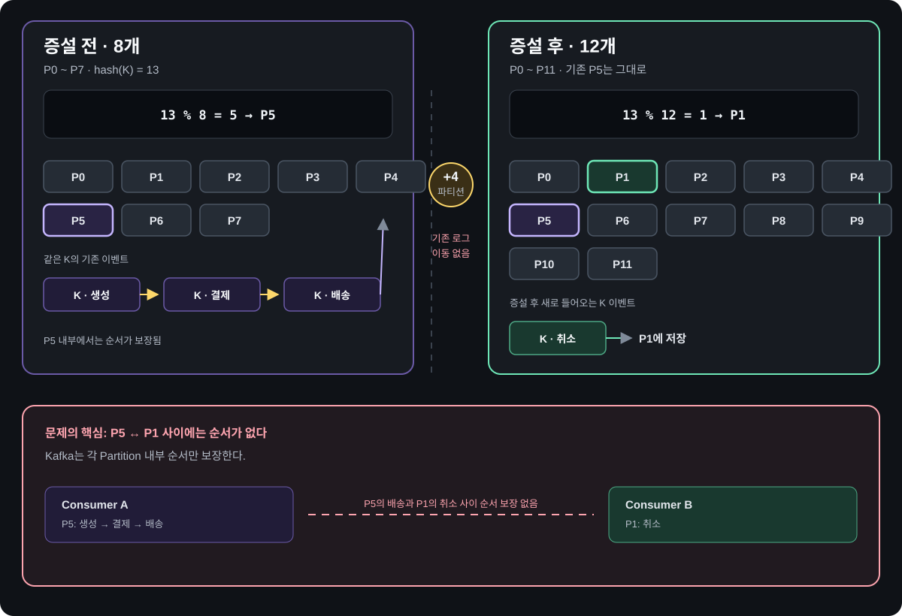

Kafka Architecture Map
Event 경로와 Kafka Cluster의 내부 역할을 나눠 보기
왜 Kafka가 필요한가에서 출발해, Data Plane에서 Event가 흐르는 과정과 Kafka Cluster 안에서 Broker의 Data 역할과 Controller의 Control 역할이 어떻게 나뉘는지 연결해서 읽는 문서입니다. 처음 보는 사람부터 운영자까지 자기 수준의 경로로 읽을 수 있습니다.
Producer → Broker → Consumer · Delivery Guarantees
Broker · Partition · Replica · ISR
Controller · 외부 ZooKeeper 또는 KRaft Quorum
포함 관계를 먼저 보세요. Delivery Guarantees는 Data Plane의 전송·처리 의미론입니다. Control Plane은 Kafka Cluster의 Metadata를 관리하는 역할이며, ZooKeeper Mode에서 ZooKeeper Ensemble 자체는 Kafka Cluster 외부에 있습니다.
처음이라면 초급 경로로 전체 흐름을 잡으세요. 필요한 깊이에 따라 중급·고급·최고급으로 이어 읽고, 각 경로의 점검 질문으로 이해를 확인할 수 있습니다.
읽을 순서와 점검 질문 20개 주제
- (참고) 용어 사전
- 왜 Kafka인가
- Event
- Log 모델
- Queue와 비교
- 전체 흐름
- Record
- Partition
- 전송 흐름
- Leader 저장
- acks
- 전송 결과
- Producer 정리
- Fetch · poll
- Consumer Group
- Offset
- Consumer 정리
- 전달 보장
- Cluster
- Spring
- Kafka가 읽은 Record를 지우지 않아서 가능한 일 두 가지는?
- 같은 Group과 다른 Group의 Consumer는 같은 Record를 어떻게 나눠 받는가?
acks=all의 성공 응답은 정확히 무엇을 보장하는가?
읽을 순서와 점검 질문 13개 주제
- Event 계약
- Producer 옵션
- Retry · 순서
- Consumer 옵션
- Rebalance · Lag
- Fetch Protocol
- 실패 · DLT
- Transaction
- Retention
- Listener
- Topic 설계
- Controller
- Spring 설정
- 처리 시간이
max.poll.interval.ms를 넘기면 무슨 일이 일어나고, 어떤 값부터 조정하는가? - Partition을 6개에서 12개로 늘리면 Key 순서에 무슨 일이 생기는가?
- Spring Kafka 기본 설정에서 열 번 실패한 Record는 어디로 가는가?
읽을 순서와 점검 질문 10개 주제
- Record마다 fsync하지 않는데도 내구성을 말할 수 있는 근거는?
- Produce 요청의
RemoteTimeMs가 늘었다면 무엇을 의심하는가? - Outbox 없이 DB Commit 뒤 Kafka에 발행하면 어떤 틈이 생기는가?
읽을 순서와 점검 질문 5개 주제
- Active Controller 장애와 Quorum 상실은 어떻게 구분하고, 각각 무엇이 멈추는가?
- Broker Epoch와 Partition Leader Epoch는 각각 무엇이 바뀐 것을 구분하는가?
- ZooKeeper Session 만료와 KRaft Broker Fence는 Broker 장애를 어떻게 다르게 감지하는가?
버전 기준 · 호환성 문서는 Kafka 4.3 기준 — 이전 버전과 다르게 동작하는 지점
이 문서의 기본값과 동작은 Apache Kafka 4.3 공식 문서를 기준으로 합니다. 이전 버전으로 구성할 때는 Broker와 Client 버전을 각각 확인해야 합니다. 아래 표는 Broker 3.9·Client 3.8과 비교한 차이이며, Spring 설정 예제는 Spring Boot 3.4·Spring Kafka 3.3 기준입니다.
| 항목 | 문서 (4.3) | 이전 버전 · 단일 Broker 구성 | 본문 |
|---|---|---|---|
linger.ms 기본값 | 5ms (4.0에서 0 → 5) | Client 3.8은 0ms | Producer 옵션 |
| Consumer Protocol (KIP-848) | 4.0에서 GA, Broker에서 자동 활성. Client 기본값은 여전히 classic | Preview 단계. Broker에 group.coordinator.를 따로 켜야 하고 운영에는 권장되지 않음 | Consumer 옵션 |
| KRaft Pre-Vote (KIP-996) | 4.0+는 Epoch를 올리기 전에 Pre-Vote로 당선 가능성을 확인 | Broker 3.9는 Pre-Vote 없이 바로 Candidate가 되어 Epoch를 올림 | KRaft 운영 |
| Static → Dynamic Quorum 전환 | 4.1+는 kraft.version=1로 올린 뒤 add-controller·remove-controller | controller.quorum.voters로 고정한 Static Quorum에서는 같은 방식으로 Controller를 추가·제거할 수 없음 | KRaft 운영 |
| ZooKeeper Mode | 4.0에서 제거 | 3.9 Broker는 ZooKeeper와 KRaft를 모두 지원 | Control Plane 비교 |
| Replica · ISR · Leader 변경 | 예시는 Broker 3대, replication.factor=3, min.insync.replicas=2 | Broker 1대(Replication Factor 1)라 Follower 복제·ISR 축소·Leader 이동은 관찰할 수 없음 | Replica · ISR |
| Share Group (KIP-932) | 4.2에서 운영 준비 완료. 여러 Consumer가 같은 Partition을 Record 단위로 확인하며 처리 | 없음. 모든 Consumer 설명은 일반 Consumer Group 기준 | Queue와 비교 |
auto.offset.reset | by_duration:<기간> 값 추가 (4.0) | Client 3.8은 earliest·latest·none만 지원 | Consumer 옵션 |
metadata.recovery.strategy | 기본값 rebootstrap (4.0, KIP-1102) | Client 3.8은 기본값 none | Producer 옵션 |
| 미래 시각 Record | 1시간 넘게 미래인 CreateTime Record 거부 (4.0) | Broker 3.9는 미래 시각을 제한하지 않음 | Record 구성 |
segment.bytes 최솟값 | 1MiB (4.0) | Broker 3.9는 아주 작은 Segment도 허용해 Retention 실험이 쉬움 | Retention |
| Eligible Leader Replicas (KIP-966) | 4.1부터 새 Cluster에서 기본 활성. min.insync.replicas는 Cluster·Topic 단위로 설정 | 없음. Broker 설정 min.insync.replicas가 그대로 동작 | ISR |
Apache Kafka 4.0 Upgrade Notes(linger.ms 변경·KIP-848 GA·ZooKeeper 제거), KIP-848 Preview Release Notes, Release Plan 4.0.0(KIP-996), Apache Kafka 4.3 KRaft를 기준으로 정리했습니다. 4.x 변화 전체는 버전 변화 지도에 있습니다.
Track 00 · Kafka 기초 · Why Kafka 초급
Kafka는 서비스 사이의 직접 호출을 기록하고 구독하는 구조로 바꾼다
핵심 직접 호출의 결합을 줄이는 대신, 전달 지연·중복·실패 복구를 설계해야 합니다.
온라인 쇼핑몰에 주문이 하나 들어오면 결제, 재고 차감, 알림 발송, 매출 집계가 뒤따릅니다. 가장 단순한 구현은 주문 서비스가 이 서비스들을 차례로 직접 호출하는 것입니다. 처음에는 잘 동작하지만, 서비스와 트래픽이 늘수록 직접 호출은 네 가지 방식으로 서비스들을 서로 묶어 버립니다.
직접 호출이 만드는 네 가지 결합
호출받는 서비스가 지금 살아 있어야 합니다. 알림 서비스가 멈추면 주문까지 실패하거나, 주문 서비스가 재시도 책임을 떠안습니다.
가장 느린 하위 서비스가 주문 응답 시간을 정합니다. 요청이 몰리면 처리하지 못한 요청이 Thread·Connection 대기 줄로 쌓입니다.
추천·분석처럼 주문 정보가 필요한 서비스가 생길 때마다 주문 서비스 코드를 고쳐 호출을 추가해야 합니다.
호출이 끝나면 요청은 사라집니다. 버그를 고친 뒤 지난 주문을 다시 처리하거나, 새 서비스가 과거 주문부터 읽어 오기 어렵습니다.
Kafka를 사이에 두면 무엇이 달라지는가
Kafka를 쓰면 주문 서비스는 “주문이 생성됐다”는 사실을 Kafka의 Topic에 기록하고 바로 자기 일로 돌아갑니다. 결제·재고·알림·집계 서비스는 그 기록을 각자 구독해 자기 속도로 읽습니다. 쓰는 쪽(Producer)과 읽는 쪽(Consumer)이 서로를 직접 알 필요가 없어집니다.
Topic은 같은 종류의 Event를 모아 두는 이름 붙은 기록 공간(예: order-events)이고, Kafka 서버 한 대를 Broker라고 부릅니다. 아래 표의 Partition·Offset·Consumer Group은 다음 섹션들에서 정의하니, 지금은 “Kafka = 읽어도 바로 지워지지 않는 공용 기록 장부”로만 읽어도 됩니다.
주문 → 결제 주문 → 재고 주문 → 알림 주문 → 집계
주문 서비스가 네 서비스를 모두 호출하고 응답을 기다립니다. 하나라도 느리거나 멈추면 주문이 영향을 받습니다.
주문 → order-events Topic결제 · 재고 · 알림 · 집계 ← order-events
주문 서비스는 기록 한 번으로 끝나고, 네 서비스가 각자 자기 속도로 읽습니다.
| 결합 | Kafka가 바꾸는 방식 | 자세히 |
|---|---|---|
| ① 가용성 | Producer는 Broker에 기록만 하면 됩니다. Consumer가 잠시 멈춰도 Record는 Kafka에 남아 있고, 다시 살아난 Consumer가 멈춘 위치부터 읽습니다. | Offset · Commit |
| ② 속도 | Kafka가 완충 지대가 됩니다. 요청이 몰리면 밀린 양이 응답 지연 대신 Consumer Lag(아직 처리하지 못하고 밀린 양)으로 드러나고, Consumer는 감당할 수 있는 속도로 읽습니다. | Rebalance · Lag |
| ③ 연결 수 | 새 서비스는 Producer 코드를 바꾸지 않고 자기 Consumer Group으로 같은 Topic을 구독합니다. Group마다 같은 Record를 독립적으로 받습니다. | Consumer Group |
| ④ 기록 | Kafka는 읽은 Record를 지우지 않고 보존 기간 동안 Log에 남깁니다. 읽을 위치(Offset)를 되돌리면 같은 Record를 다시 처리할 수 있습니다. | Retention |
| 처리량 | Topic을 여러 Partition으로 나눠 여러 Broker가 저장하고 여러 Consumer가 나눠 읽습니다. 서버 한 대의 성능이 처리량의 상한이 되지 않습니다. | Consumer Group |
접수 응답이 빨라져도 업무가 더 빨리 끝나는 것은 아니다
요청 → 업무 처리·DB Commit → 응답
호출한 쪽은 업무 결과까지 기다립니다. DB Connection이나 같은 행의 잠금을 기다리는 시간도 응답 지연에 들어갑니다.
요청 → 접수 기록·발행 → 접수 응답Consumer → 업무 처리·DB Commit → 결과 조회
접수와 완료를 나눕니다. 무거운 업무가 응답 경로에서 빠져도 실제 처리는 뒤에서 계속됩니다.
Kafka는 DB 처리 자체를 빠르게 하거나 정원·중복 같은 업무 규칙을 대신 지켜 주지 않습니다. DB Connection Pool·행 잠금이 병목이면 Consumer를 늘려도 완료 처리량이 늘지 않을 수 있습니다.
같은 Key는 같은 Partition에 모이므로 그 Key의 순서를 지키면서 처리할 때는 병렬성에도 한계가 있습니다. Kafka의 버퍼링은 일시적인 유입 급증을 흡수하지만, 유입량이 완료 처리량보다 계속 크면 대기와 Lag이 계속 늘어납니다.
비동기 요청의 HTTP 응답 의미는 RFC 9110 · 202 Accepted를 기준으로 합니다. Kafka 저장 확인·DB와의 경계는 acks와 Outbox·Inbox에서 이어서 봅니다.
대신 치르는 비용
Producer가 받는 성공은 “Kafka에 기록됨”이지 “결제 완료”가 아닙니다. 사용자에게 접수와 확정을 나눠 보여 주는 설계가 필요합니다. 예를 들어 비동기 예약 API는 접수 시 202 Accepted와 requestId를 반환하고, 사용자는 별도 조회 API에서 처리 결과를 확인하도록 설계할 수 있습니다.
장애와 재시도 때문에 Consumer는 같은 Record를 두 번 처리할 수 있습니다. 처리 로직은 여러 번 실행돼도 결과가 같아야(멱등) 합니다. 전달 보장
Topic 전체의 순서는 보장되지 않습니다. 순서가 필요한 Event는 같은 Key로 같은 Partition에 보내야 합니다. Key와 Partition
Broker·Controller의 용량, 복제, 보안, 모니터링을 누군가 책임져야 합니다. 관리형 서비스를 써도 Partition 수·보존·acks 같은 판단은 남습니다.
Kafka가 꼭 필요하지 않은 경우
| 상황 | 더 단순한 선택 | 이유 |
|---|---|---|
| 호출한 쪽이 결과를 바로 받아야 함 (조회, 결제 승인 응답) | HTTP · gRPC 직접 호출 | 요청-응답이 본질이면 Kafka를 넣어도 결국 응답을 기다리는 코드를 다시 만들게 됩니다. |
| 소비자가 하나이고 처리량이 낮음 | DB 테이블 + Scheduler, 또는 단순한 작업 Queue | 여러 구독자·재처리·대용량이 필요 없다면 Cluster 운영 비용이 이득보다 큽니다. |
| 작업마다 개별 확인·지연 실행·우선순위가 핵심 | 전통적인 Message Queue | Kafka의 Consumer Group은 Partition에서 “어디까지 처리했는가”를 위치 하나로 기록하는 모델입니다. 작업 단위 확인이 중심이면 Queue 모델이 더 자연스럽습니다(Kafka 4.2+ Share Group은 Record별 확인을 제공합니다). 비교 보기 |
| 한 서비스 안의 모듈 사이 통지 | 애플리케이션 내부 Event (예: Spring ApplicationEvent) | 프로세스 경계를 넘지 않으면 Network·직렬화·Broker가 필요 없습니다. |
Track 00 · Kafka 기초 · Event 초급
Event는 이미 일어난 사실이고, Kafka는 그것을 Record로 보관한다
핵심 Event는 이미 일어난 업무 사실이고, Record는 Kafka가 그 사실을 운반하고 저장하는 단위입니다.
Kafka 공식 문서는 Event를 “세상이나 업무에서 무엇인가 일어났다는 사실의 기록”이라고 정의하고, 같은 대상을 Record 또는 Message라고도 섞어 부릅니다. 이 문서는 셋을 이렇게 나눕니다.
Message는 시스템 사이를 오가는 데이터 한 건을 가리키는 일반 용어, Event는 그중 이미 일어난 사실을 담은 것, Record는 내용이 Event든 Command든 Kafka에 저장된 한 건입니다.
주문이 생성됐다, 결제가 승인됐다처럼 이미 일어난 일이므로 이름도 과거형(OrderCreated, PaymentApproved)으로 짓습니다.
이미 일어난 사실은 되돌릴 수 없으므로 Event는 한 번 기록하면 고치지 않습니다. 주문이 취소되면 OrderCreated를 수정하는 대신 OrderCancelled라는 새 Event를 기록합니다. Kafka의 Log가 뒤에 붙이기만 하는(append-only) 구조인 것도 이 성질과 맞닿아 있습니다.
Event와 Command는 다르고, Message는 둘을 실어 나르는 형식이다
| 구분 | 뜻 | 이름 예 | 받는 쪽 | 실패·거절 |
|---|---|---|---|---|
| Event | 이미 일어난 사실의 통보 | OrderCreated | 보내는 쪽은 누가 받는지 모릅니다 (0곳일 수도, 여러 곳일 수도) | 사실이므로 거절 대상이 아닙니다. 받는 쪽이 반응할지 정합니다. |
| Command | 무엇을 해 달라는 요청 | ReserveStock | 처리할 곳이 정해져 있습니다 (보통 한 곳) | 실패하거나 거절될 수 있고, 보낸 쪽은 결과를 알아야 합니다. |
| Message | 시스템 사이에 전달되는 데이터 단위 | — | — | Event와 Command 모두 Message 형태로 전달됩니다. |
Kafka는 Event와 Command를 구분하지 않고 둘 다 Record로 저장합니다. 다만 Kafka의 장점인 여러 Group의 독립 구독과 재처리는 “사실”을 기록할 때 가장 잘 살아납니다. Command를 Kafka로 보낼 때는 처리 결과를 어떻게 돌려받을지(결과 Topic, 상태 조회 API)를 따로 설계해야 합니다.
Event 하나는 Record 하나가 된다
| Record 필드 | Event에서 맡는 역할 | 예 (주문 생성) |
|---|---|---|
key | 무엇에 관한 Event인가. 같은 Key는 같은 Partition으로 가서 그 안의 순서가 지켜집니다. | "o-123" (orderId) |
value | 무슨 일이 일어났는가. 직렬화된 본문입니다. | {"orderId":"o-123","amount":32000} |
timestamp | 언제 기록됐는가. 기본은 Producer가 정한 시각(CreateTime)입니다. | 1761350400000 (epoch ms) |
headers | 본문 밖 부가 정보입니다. | eventId, eventType, traceId |
Record의 Timestamp는 Kafka가 보존 기간 계산 등에 쓰는 시각이고, 업무에서 말하는 “주문 시각”과 다를 수 있습니다. 업무 시각이 중요하면 Value에 occurredAt 같은 필드를 따로 둡니다. Record의 구조와 API는 ProducerRecord에서 자세히 봅니다.
Event에 얼마나 담을 것인가
“주문 o-123이 생성됨”과 ID만 보냅니다. Event가 작고 형식이 잘 바뀌지 않지만, 상세가 필요한 Consumer가 주문 서비스를 다시 호출하므로 직접 호출의 결합이 일부 돌아옵니다.
주문 내용 전체를 Event에 담습니다. Consumer가 원본 서비스 없이 처리할 수 있지만, Event가 커지고 필드 변경이 곧 계약 변경이 됩니다. Event 계약
Event를 설계할 때 먼저 정하는 다섯 가지
- 1과거형 업무 이름
OrderCreated처럼 업무에서 일어난 일을 씁니다.updateOrderTable처럼 구현 동작을 드러내는 이름은 피합니다. - 2고유한 eventId
재전송·재처리로 같은 Event가 다시 와도 Consumer가 중복을 가려낼 기준입니다. Inbox 패턴
- 3순서 단위가 되는 Key
같은 주문의 Event끼리 순서가 필요하면 Key를
orderId로 둡니다. Key는 같은 대상의 Event를 같은 Partition에 모아 순서를 지킬 기반을 만듭니다. Partition 선택 - 4업무 발생 시각
Record Timestamp와 별개로
occurredAt을 본문에 둡니다. - 5계약과 버전
필드를 추가·삭제할 때 기존 Consumer가 깨지지 않는 규칙을 정합니다. Schema 호환성
Event ID와 업무의 신원을 함께 보존한다
하나의 주문이 최초로 확정되는 사실을 OrderConfirmed로 발행한다면, 재시도마다 새 eventId나 소비 시각을 만들지 않습니다. 최초 확정 시점에 정한 ID·confirmedAt·품목 Snapshot을 주문 확정 기록 등에 보존하고 재발행에도 재사용합니다.
한 Event에 여러 품목을 담고 Kafka Key는 orderId로 둡니다. 품목마다 Key를 바꾸려고 같은 주문의 확정 사실을 여러 개로 쪼개는 설계와는 구분합니다.
| 필드 | 보호할 계약 |
|---|---|
eventId | 같은 논리 Event의 신원. 전송 재시도·재발행에도 안정적으로 유지합니다. |
orderId | 어떤 주문의 확정 사실인가. Event ID를 잘못 새로 만들었어도 같은 구매 효과가 두 번 생기지 않도록 업무 자연 키에도 사용합니다. |
confirmedAt | 최초 확정 시각. Consumer의 처리 시각과 분리해 이후 주간 집계의 기준을 정합니다. |
items | 확정 당시 상품별 수량과 필요한 품목 식별자. 현재 상품 상태를 다시 조회해 과거 사실을 바꾸지 않습니다. |
schemaVersion | Payload를 해석·검증할 계약 버전. 지원하지 않는 버전을 임의로 성공 처리하지 않습니다. |
구매 활동에 필요한 데이터만 전달하고 카드 정보·PG 비밀·불필요한 개인정보는 넣지 않습니다. 금액이 필요한 계약이라면 확정 당시의 값을 쓰며 현재 가격으로 덮어쓰지 않습니다. 같은 상품이 여러 주문 품목에 나타날 수 있다면 품목 ID로 식별할지 상품별로 합산할지도 먼저 정합니다. 신원·Payload 충돌은 Inbox의 중복 판정에서 따로 다룹니다.
주문 확정 발제를 따라 읽는 순서는 Application Event·Commit 경계 → Key·Group → Position·Commit → acks·Idempotence → DB 효과와 충돌 판정 → 실패 후 Commit → 재전달 관찰입니다.
Kafka 기초 다음 Kafka는 그 Event를 어떻게 저장하고 읽게 하는가 · Log 모델Track 00 · Kafka 기초 · Log Model 초급
Kafka는 Event를 Log에 기록하고, 읽는 쪽이 각자 위치를 기억하는 시스템이다
핵심 Kafka는 순서 있는 로그를 보관하고, 읽는 쪽은 각자 진행 위치를 기억합니다.
Apache Kafka는 공식 문서의 표현으로 Event Streaming 플랫폼입니다. 세 가지 일을 합니다. Event를 쓰고(Publish) 읽는(Subscribe) 통로가 되고, Event를 원하는 기간 동안 내구성 있게 보관하며, Event를 들어오는 대로 또는 지난 Event를 다시 처리할 수 있게 합니다. 이 세 가지를 한 번에 가능하게 하는 핵심 구조가 Log입니다.
Log는 뒤에 붙이기만 하는 기록 장부다
Log는 통장 거래 내역처럼 새 기록을 항상 맨 뒤에 붙이고, 이미 적은 줄은 고치지 않는 기록입니다. Kafka는 기록마다 0부터 차례로 커지는 번호를 붙이는데, 이 번호가 Offset입니다(Transaction Marker나 Compaction 때문에 중간에 빈 번호가 생길 수 있습니다).
읽는 쪽은 Record를 꺼내 가는 것이 아니라 “다음에 몇 번을 읽을 차례인가”라는 위치만 기억합니다. 그래서 여러 Consumer Group이 같은 Log를 서로 다른 위치에서 동시에 읽을 수 있습니다.
- 0Order
Created - 1Order
Paid - 2Order
Created - 3Order
Shipped - 4Order
Paid - 5Order
Created - 6다음 Record
결제 Group · 다음에 읽을 위치 4
분석 Group · 다음에 읽을 위치 2
Producer · 새 Record는 항상 끝(6)에 Append
구성 요소는 이렇게 포함된다
Topic은 여러 Partition으로 나뉘고, Partition마다 Record가 Offset 순서로 쌓입니다. 위 그림은 Partition 하나입니다.
Broker 한 대가 고장 나도 데이터를 잃지 않도록 Partition마다 복사본(Replica)을 여러 Broker에 둡니다. 기본 설정에서는 Partition마다 Leader Replica 하나가 쓰기와 읽기를 받고, Follower는 Leader를 따라 적다가 Leader가 고장 나면 그 자리를 이어받습니다. 한 Broker가 어떤 Partition에서는 Leader, 다른 Partition에서는 Follower입니다.
Record를 어느 Partition에 쓸지 정하고, 그 Partition의 Leader Broker에 보냅니다.
Group 안에서 Partition을 나눠 맡고, Partition마다 다음에 읽을 Offset을 Commit해 둡니다. 여기서 Commit은 DB Transaction의 Commit이 아니라, “Partition 0은 Offset 4부터 읽으면 된다”는 위치를 Kafka에 저장하는 일(Offset Commit)입니다.
핵심 용어 열한 개
| 용어 | 한 줄 정의 | 자세히 |
|---|---|---|
| Record | Kafka에 기록하는 한 건. Key·Value·Timestamp·Headers로 구성됩니다. | Record 구성 |
| Topic | Event를 분류하는 이름. 예: order-events | Topic 설계 |
| Partition | Topic을 나눈 Log 하나. 순서 보장과 병렬 처리의 단위입니다. | Partition 선택 |
| Offset | Partition 안에서 Record의 위치 번호입니다. | Offset |
| Broker | Partition Replica를 저장하고 Client 요청을 처리하는 Kafka 서버 한 대입니다. | Broker |
| Cluster | 함께 동작하는 Broker들과 Controller의 묶음입니다. | Cluster |
| Replica | 같은 Partition을 여러 Broker에 둔 복사본. Leader 하나와 Follower들로 나뉩니다. | Replica · ISR |
| Producer | Record를 Topic에 쓰는 Client입니다. | 전체 흐름 |
| Consumer | Record를 읽는 Client입니다. Broker에서 가져오는(pull) 방식으로 읽습니다. | Fetch · poll |
| Consumer Group | 같은 일을 나눠 처리하는 Consumer 묶음. Group마다 읽은 위치를 따로 기억합니다. | Consumer Group |
| Controller | Broker 목록, Leader 배치 같은 Cluster 상태(Metadata)를 관리합니다. | Controller |
이 구조에서 나오는 네 가지 성질
Record는 디스크에 저장되고 여러 Broker에 복제됩니다. acks와 min.insync.replicas로 “어디까지 복제되면 성공인가”를 정합니다. acks · ISR
읽어도 지워지지 않으므로 Offset을 되돌려 다시 읽을 수 있습니다. Record는 보존 기간·크기 정책이나 Compaction에 따라서만 정리됩니다. Retention
한 Partition 안에서는 기록한 순서대로 읽습니다. 서로 다른 Partition 사이의 순서는 보장되지 않습니다. Key와 Partition
Partition을 여러 Broker와 Consumer가 나눠 맡아 처리량을 늘립니다. 한 Consumer Group 안에서 Partition 하나는 Consumer 하나만 읽으므로, Partition이 3개면 Consumer를 4개로 늘려도 하나는 놉니다. Consumer Group
Kafka 주변 구성 요소 Connect · Streams · Schema Registry는 Broker와 따로 실행된다
| 구성 요소 | 하는 일 | 이 문서에서 |
|---|---|---|
| Kafka Connect | DB·검색 엔진·저장소와 Kafka 사이의 데이터를 Connector 설정으로 옮기는 프레임워크입니다. Debezium 같은 CDC Connector가 대표적입니다. | Outbox Relay 예시 |
| Kafka Streams | Topic을 읽어 가공한 뒤 다시 Topic에 쓰는 Java 라이브러리입니다. Exactly-once 처리를 지원합니다. | Delivery Guarantees에서 언급 |
| Schema Registry | Event 스키마를 등록하고 호환성을 검사하는 별도 서버입니다. Apache Kafka 프로젝트에 포함되지 않습니다. | Event 계약 |
| 관리형 Kafka | Cloud 업체가 Broker·Controller 운영을 대신하는 서비스입니다. | Partition 수·보존·acks 판단은 그대로 사용자 몫입니다. |
Kafka Connect와 Kafka Streams는 Apache Kafka 프로젝트에 포함된 구성 요소지만, Broker와는 별도로 실행되는 프로세스·라이브러리입니다. 이 문서는 Client, Broker, Controller의 동작에 집중합니다.
Apache Kafka 4.3 Introduction의 Event Streaming·Event 정의를 기준으로 정리했습니다.
Kafka 기초 다음 Kafka는 전통적인 Message Queue와 무엇이 다른가Track 00 · Kafka 기초 · Kafka vs Message Queue 초급
Kafka는 처리하면 지우는 Queue가 아니라, 읽어도 남는 Log다
핵심 읽어도 로그가 남습니다. 같은 Group은 분담하고, 다른 Group은 독립적으로 읽습니다.
RabbitMQ 같은 전통적인 Message Queue와 Kafka는 둘 다 “보내는 쪽과 받는 쪽 사이에 Broker를 둔다”는 점에서 비슷해 보입니다. 하지만 메시지를 저장하고 확인하는 모델이 다르고, 그 차이가 쓰임새를 가릅니다. 아래 비교의 Queue 쪽은 RabbitMQ의 classic·quorum queue처럼 확인(ack)된 메시지를 지우는 전통적 모델을 기준으로 합니다.
DB로 비유하면 차이가 분명해집니다. Queue는 jobs 테이블에서 작업을 꺼내 처리하면 그 행을 DELETE하는 방식입니다. 다른 서비스도 같은 작업을 받으려면 테이블을 하나 더 만들어 복사해야 합니다.
Kafka는 events 테이블에 INSERT만 하고 지우지 않으며, 읽는 서비스마다 consumer_progress(group_id, partition, next_offset)에 어디까지 읽었는지만 저장합니다.
새 서비스는 자기 행을 하나 추가하면 되고, 다시 처리하려면 next_offset을 줄이면 됩니다. 표에 나오는 Exchange·Prefetch·ack는 RabbitMQ 용어이고, Pub/Sub(발행·구독)은 한 번 발행하면 구독한 모든 쪽이 각각 받는 방식입니다.
| 항목 | 전통적인 Message Queue | Kafka |
|---|---|---|
| 저장 모델 | 대기열. Consumer가 처리를 확인하면 메시지를 지웁니다. | Log. 읽어도 그대로 두고, 보존 정책(기간·크기 기준 삭제 또는 Key별 Compaction)으로만 정리합니다. |
| 전달 방식 | Broker가 Consumer에게 밀어 줍니다(push). Prefetch로 확인(ack)하지 않은 채 받아 둘 수 있는 메시지 수를 제한합니다. | Consumer가 Broker에서 가져갑니다(pull). Long Polling으로 빈 요청을 줄입니다. |
| 여러 소비자 | 같은 Queue를 읽으면 작업을 나눠 받습니다. 모두 받으려면 소비자마다 Queue를 두고 fanout 같은 Exchange에 연결(binding)해 각자 복사본을 받습니다. | 같은 Group이면 Partition을 나눠 받고, Group이 다르면 각자 전부 받습니다. |
| 확인 단위 | 메시지 하나씩 ack·nack하고, 실패한 메시지만 다시 전달합니다. | Partition마다 “여기까지 처리했다”는 Offset 하나를 Commit합니다. |
| 재처리 | 확인한 메시지는 사라지므로 다시 처리하려면 따로 저장해 둬야 합니다. | 보존 범위 안이라면 Offset을 되돌려 다시 읽습니다. |
| 순서 | Queue 단위. 여러 Consumer가 나눠 받으면 처리 순서는 섞일 수 있습니다. | Partition 단위. Partition 하나는 한 Consumer Group 안에서 Consumer 하나가 읽습니다. |
| 잘 맞는 일 | 작업 분배, 메시지별 재시도·우선순위·지연 전달, 복잡한 Routing | 여러 시스템이 같은 Event를 구독, 재처리, 대용량 Event 스트림, Event 보관 |
group.id 하나로 작업 분배와 방송(Pub/Sub)을 고른다
Kafka에서는 별도의 Exchange 설정 없이 group.id만으로 두 가지 전달 방식을 고릅니다. 결제 서비스 인스턴스 세 개가 같은 group.id를 쓰면 Partition을 나눠 맡아 한 Record를 한 인스턴스만 처리합니다(Queue처럼 작업 분배).
분석 서비스가 다른 group.id로 같은 Topic을 구독하면 결제 Group과 무관하게 모든 Record를 받습니다(Pub/Sub처럼 방송). 두 Group은 각자의 Offset을 따로 Commit하므로 서로의 진행에 영향을 주지 않습니다. Consumer Group
Kafka가 pull 방식을 고른 이유
Broker가 밀어 주는 방식에서는 Broker가 Consumer마다 감당할 수 있는 속도를 알아야 하고, 느린 Consumer는 넘치는 메시지에 압도되기 쉽습니다. Kafka는 Consumer가 자기 속도로 가져가게 해 이 문제를 피합니다.
뒤처진 Consumer는 나중에 따라잡으면 되고, 한 번에 여러 Record를 Batch로 가져갈 수 있어 처리량에도 유리합니다. 데이터가 없을 때 빈 요청을 반복하는 단점은 Broker가 요청을 잠시 붙잡아 두는 Long Polling으로 줄입니다(Fetch · poll).
Offset 하나로 확인하는 모델의 결과
Kafka Consumer Group은 메시지별 ack 대신 Partition마다 “다음에 읽을 위치” 하나만 Commit합니다. 그래서 Offset 10이 계속 실패하면 Commit 위치가 10에 묶여, 11 이후를 처리했더라도 “여기까지 끝났다”고 기록할 수 없습니다.
메시지별로 확인하는 Queue라면 10만 실패로 남기고 넘어갈 수 있지만, Kafka에서는 애플리케이션이 셋 중 하나를 고릅니다. 10을 실패 Record 전용 Topic(DLT: Dead Letter Topic)에 따로 보관하고 넘어가기, 성공할 때까지 재시도하기, 처리를 멈추기입니다(실패 · Retry · DLT).
Kafka 4.x · Share Group Kafka 4.2부터 운영 환경에서 메시지별로 확인하는 Queue 방식도 쓸 수 있다 (KIP-932)
Share Group은 Consumer Group과 다른 Group 유형입니다. 4.0에서 Early Access, 4.1에서 Preview를 거쳐 4.2에서 운영 준비 완료(production-ready) 단계가 됐습니다.
Partition 하나를 Consumer 하나가 맡는 대신 여러 Consumer가 함께 읽으므로 Consumer 수가 Partition 수를 넘을 수 있고, Offset 하나가 아니라 Record마다 처리 결과를 확인(acknowledge)합니다.
| 항목 | Consumer Group | Share Group |
|---|---|---|
| Partition 배정 | 한 Group 안에서 Partition 하나는 Consumer 하나 | 여러 Consumer가 같은 Partition의 Record를 나눠 받음 |
| 진행 기록 | Partition마다 Committed Offset 하나 | Record마다 확인. 가져간 Record에는 Lock(share.record.lock.duration.ms, 기본 30초)이 걸리고, Partition마다 동시에 잡을 수 있는 Lock 수에 상한(기본 2000)이 있음 |
| 실패한 Record | 애플리케이션이 Retry·DLT·중단을 결정 | Accept(성공)·Release(다시 전달)·Reject(더 전달하지 않음)·Renew(Lock 연장)로 확인. 아무것도 하지 않으면 Lock이 끝난 뒤 다시 전달되고, 전달 횟수가 한도(share.delivery.count.limit, 기본 5회)에 이르면 더 전달하지 않음. Kafka가 DLT로 옮겨 주지는 않음 |
| 순서 | Partition 안의 순서대로 처리 | 여러 Consumer가 동시에 처리하므로 처리 순서를 보장하지 않음 |
처리가 Lock 시간보다 길어지면 같은 Record가 다른 Consumer에게 다시 전달되어 동시에 두 번 처리될 수 있습니다. 처리는 멱등하게 만들고, 긴 작업은 Renew로 Lock을 연장합니다.
이 문서의 Consumer 설명은 모두 일반 Consumer Group 기준입니다.
Apache Kafka 4.3 Design(Push vs. pull·Share Group), 4.2 Upgrade Notes(KIP-932 운영 준비 완료), RabbitMQ Streams 문서를 기준으로 정리했습니다.
Kafka 기초 마지막 앞으로 나올 용어를 한곳에 · 핵심 용어 사전Track 00 · Kafka 기초 · Glossary 초급
핵심 용어 사전: 처음 보는 단어는 여기서 찾는다
본문은 Kafka 공식 용어를 영문 그대로 씁니다. 처음 읽을 때 낯선 단어가 나오면 이 사전에서 한 줄 뜻을 확인하고, 오른쪽 링크로 자세한 섹션에 들어가면 됩니다. 고급 독자는 용어의 경계(무엇과 무엇이 다른가)를 빠르게 점검하는 표로 쓸 수 있습니다.
Event와 저장
- Event
- 이미 일어난 사실의 기록. Kafka 문서는 Record·Message와 섞어 쓰지만, 이 문서는 Kafka에 저장된 한 건을 Record라고 부릅니다(Command와의 구분은 Event 섹션). Event
- Record
- Kafka에 저장되는 한 건. Key·Value·Timestamp·Headers로 구성됩니다. Record 구성
- Key
- Record가 무엇에 관한 것인지 나타내는 값. 기본 Partitioner는 Key의 Hash로 Partition을 고릅니다. Partition 선택
- Header
- Value 밖에 붙이는 Key-Value 부가 정보.
eventId,traceId등을 담습니다. Record 구성 - Topic
- Event를 분류하는 이름. 하나 이상의 Partition으로 구성됩니다. Topic 설계
- Partition
- Topic을 나눈 Log 하나. 순서 보장과 병렬 처리의 단위입니다. Partition 선택
- Offset
- Partition 안에서 Record마다 붙는, 0부터 차례로 커지는 위치 번호입니다. 중간에 빈 번호가 생길 수 있습니다. Log 모델
- Log
- 뒤에 붙이기만 하는 Record 목록. Partition Replica 하나가 디스크의 Log 하나입니다. Log 모델
- Segment
- Log를 크기·시간 기준으로 나눈 파일 단위. 보존 정책은 Segment 단위로 지웁니다. 저장 구조
- Retention
- Record를 얼마나 보관할지 정하는 정책(
retention.ms,retention.bytes). 읽었는지와 무관합니다. Retention - Compaction
- Key별로 가장 최신 Record만 남기는 정리 방식(
cleanup.policy=compact)입니다. Compaction - Tombstone
- Value가 null인 Record. Compaction Topic에서 해당 Key의 삭제를 뜻합니다. Tombstone
Producer와 전송
- Producer
- Record를 Topic에 쓰는 Client입니다. 전체 흐름
- Serializer
- Key·Value 객체를 byte 배열로 바꾸는 구성 요소. Consumer의 Deserializer와 짝이 맞아야 합니다. Event 계약
- Schema
- Event Value의 구조에 대한 약속. 호환성 규칙을 지키면 Producer와 Consumer를 따로 배포할 수 있습니다. Event 계약
- Partitioner
- Record를 보낼 Partition을 고르는 구성 요소입니다. Partition 선택
- Batch
- 같은 Partition으로 갈 Record를 모은 묶음. 전송·압축·저장의 단위입니다. Partition 선택
- Sticky
- Key 없는 Record로 한 Partition의 Batch를 먼저 채운 뒤 다음 Partition으로 넘어가는 기본 분배 방식입니다. Partition 선택
- Hot Partition
- Record가 한 Partition에 몰려 그 Leader와 담당 Consumer만 바쁜 상태입니다. Partition 선택
- acks
- Producer가 성공 응답을 받기 위해 기다리는 확인 범위(
0,1,all)입니다. acks · ISR - Idempotent Producer
- 자동 재시도로 같은 Record가 중복 저장되지 않게 하는 Producer 기능. 3.0에서 기본값이 켜짐으로 바뀌었고, 버그 수정 뒤 3.0.1·3.1.1·3.2.0부터 실제로 적용됩니다. Idempotence
Consumer와 처리
- Consumer
- Record를 읽는 Client. Broker에서 Record를 가져오는(pull) 방식입니다. Fetch · poll
- poll()
- Consumer가 Record를 가져오는 API. 처리 완료나 Commit을 뜻하지 않습니다. Fetch · poll
- Long Polling
- Broker가 데이터가 생길 때까지 Fetch 요청을 잠시 붙잡아 두는 방식. 빈 요청 반복을 줄입니다. Fetch · poll
- Pub/Sub
- 한 번 발행하면 구독한 모든 쪽이 각각 받는 방식. Kafka에서는 Consumer Group을 달리해 만듭니다. Queue와 비교
- Consumer Group
group.id가 같은 Consumer 묶음. Group 안에서 Partition을 나눠 맡습니다. Consumer Group- Group Coordinator
- Group 멤버십과 Committed Offset을 관리하는 Broker의 역할입니다. Consumer Group
- Heartbeat
- Consumer가 Group Coordinator에게 보내는 생존 신호. 끊기면 Rebalance가 일어납니다. Consumer 옵션
- Assignment
- 어떤 Consumer가 어떤 Partition을 맡는지의 배정입니다. Rebalance
- Rebalance
- 멤버가 들어오거나 나갈 때 Assignment를 다시 정하는 과정입니다. Rebalance
- Offset Commit
- Group이 Partition마다 다음에 읽을 위치를 Kafka에 저장하는 일. DB Transaction의 Commit과 다릅니다. Offset · Commit
- Committed Offset
- Group이 Partition마다 저장한 “다음에 읽을 위치”.
__consumer_offsetsTopic에 저장됩니다. Offset · Commit - Position
- Consumer 메모리에 있는 다음 읽기 위치.
poll()할 때마다 앞으로 가며, Commit하기 전에는 Committed Offset과 다를 수 있습니다. Offset · Commit - Lag
- Consumer가 읽을 수 있는 끝(High Watermark,
read_committed면 Last Stable Offset)과 Committed Offset의 차이. 얼마나 뒤처졌는지를 나타냅니다. Lag - DLT
- Dead Letter Topic. 처리에 계속 실패한 Record를 따로 보내 두는 Topic입니다. 실패 처리
- Share Group
- 여러 Consumer가 같은 Partition을 나눠 받고 Record마다 확인하는 Queue 방식 Group입니다(KIP-932, 4.2 운영 준비 완료). Queue와 비교
Cluster와 복제
- Broker
- Partition Replica를 저장하고 Client 요청을 처리하는 Kafka 서버입니다. Broker
- Cluster
- 함께 동작하는 Broker와 Controller의 묶음입니다. Cluster
- Replica
- Partition의 복사본. 여러 Broker에 나눠 둡니다. Replica
- Leader · Follower
- Partition마다 요청을 받는 Replica 하나가 Leader, Leader를 복제하는 나머지가 Follower입니다. Replica 복제
- Replication Factor
- Partition마다 둘 Replica 수. 운영에서는 보통 3입니다. Topic 설계
- ISR
- In-Sync Replicas. Leader를 충분히 따라온 Replica 집합으로,
acks=all의 확인 기준입니다. ISR - min.insync.replicas
acks=all쓰기를 받아들이기 위한 최소 ISR 수입니다. acks · ISR- High Watermark
- ISR 전체에 복제되어 Consumer에게 보여 줄 수 있는 경계. ISR 수가
min.insync.replicas이상일 때만 전진하며, Consumer는 이 위치 앞까지만 읽습니다. High Watermark - Bootstrap Server
- Client가 처음 접속해 Metadata를 받아 오는 Broker 주소입니다. Bootstrap
- Listener
- Broker가 연결을 받는 이름 붙은 입구(주소·Port·보안 방식)입니다. Spring의
@KafkaListener·spring.kafka.listener.*와는 다른 개념입니다. Listener
처리 보장
- At-most-once
- 유실될 수는 있어도 중복은 없는 처리입니다. 전달 보장
- At-least-once
- 유실 대신 중복을 감수하는 처리. Retry와 처리 후 Commit으로 유실을 막고, 같은 Record를 다시 처리할 수 있으므로 멱등 처리와 함께 씁니다. 전달 보장
- Exactly-once (EOS)
- Kafka 안의 읽기·처리·쓰기를 한 번의 결과로 맞추는 보장. Kafka 밖의 부작용까지 자동으로 보장하지는 않습니다. Transaction
- Transaction
- 여러 Partition 쓰기와 Offset Commit을 함께 Commit하거나 Abort하는 단위입니다. Transaction
- Outbox
- DB 변경과 발행할 Event를 같은 DB Transaction에 기록한 뒤 Kafka로 옮기는 패턴입니다. Outbox · Inbox
Data Plane과 Control Plane
- Data Plane
- Record가 실제로 오가는 길. Producer → Partition Leader → Consumer 경로와 복제가 여기에 속하며, Track 01이 다룹니다. 전체 흐름
- Control Plane
- 그 길을 관리하는 결정. 살아 있는 Broker, Partition의 Leader 같은 Metadata를 Controller가 관리하며, Record 한 건이 지날 때마다 거치지는 않습니다. Controller
- Metadata
- Broker 목록, Topic·Partition, Leader·ISR 같은 Cluster 상태 정보입니다. Metadata
- Controller
- Metadata를 관리하고 Leader 선출 같은 Cluster 결정을 내리는 역할입니다. Controller
- KRaft
- Kafka가 Raft 기반 Controller Quorum으로 Metadata를 직접 관리하는 방식. 4.0부터 유일한 방식입니다. KRaft
- ZooKeeper Mode
- 외부 ZooKeeper에 Metadata 조정을 맡기던 예전 방식. 4.0에서 제거됐습니다. ZooKeeper
Track 01 · Data Plane · End-to-end 초급
Producer에서 Kafka Cluster를 거쳐 Consumer까지
먼저 경계를 나눠서 봅니다.
Producer와 Consumer Client는 각각의 애플리케이션 프로세스 안에서 동작하고, Broker와 Replica는 Kafka Cluster 안에서 동작합니다.
00-2의 Log 그림이 Kafka 안쪽을 확대한 것이라면, 아래 그림은 Event 한 건이 지나가는 전체 길입니다. 단계가 많지만 처음에는 네 구역만 구분하면 됩니다. ① 애플리케이션이 Event를 만들고, ② Producer Client가 Record를 바이트로 바꾸고 Partition을 골라 모아서 보내고, ③ Cluster의 Leader가 저장하고 Follower가 복제하며, ④ Consumer Client가 가져와 애플리케이션에 넘깁니다.
Accumulator·Sender·Fetch Buffer 같은 부품 이름은 지금 외우지 않아도 되고 뒤 섹션에서 다시 나옵니다. Producer의 응답과 Consumer의 Fetch는 서로 기다리지 않습니다.
KafkaProducer.send(record) 직접 호출
send(record)Follower가 Leader에서 Replica Fetch · ISR 상태 유지
poll()Record를 애플리케이션에 반환@KafkaListener 또는 Poll LoopEvent 결정과 결과 처리
KafkaTemplate 편의 계층
직렬화·Routing·Batch·전송
Leader 저장·Replica 복제·응답
Assignment·Fetch·poll·처리
중급 · 옵션 지도 옵션은 이 흐름의 어디에 작용하는가 (처음이라면 건너뛰어도 됩니다)
접속할 Broker를 찾고 Topic·Partition·Leader 정보를 Cache합니다.
bootstrap.serversclient.idmetadata.max.age.msKey와 Value를 Broker가 저장할 수 있는 바이트로 바꿉니다.
key.serializervalue.serializermax.request.size명시적 번호, Key, 기본 전략 순으로 목적 Partition을 정합니다.
partitioner.classpartitioner.ignore.keyspartitioner.adaptive.partitioning.enable 같은 Partition의 Record를 모으고 압축해 요청 수를 줄입니다.
batch.sizelinger.mscompression.typebuffer.memorymax.block.msLeader로 요청하고 제한 시간 안에서 재시도하며 성공 조건을 확인합니다.
acksretriesretry.backoff.msdelivery.timeout.msrequest.timeout.msmax.in.flight.requests.per.connection Retry 중복을 막거나 여러 Kafka 쓰기를 Commit·Abort 단위로 묶습니다.
enable.idempotencetransactional.idtransaction.timeout.msLeader가 저장하고 ISR의 Follower가 복제합니다. 아래 값은 Producer 옵션이 아닙니다.
replication.factormin.insync.replicasmax.message.bytes할당된 Partition의 Leader에 Long Poll 요청을 보내고 Record Batch를 가져옵니다.
fetch.min.bytesfetch.max.wait.msmax.partition.fetch.bytesmax.poll.recordspoll()로 받은 Record를 처리하고 다음에 읽을 위치를 Commit합니다.
enable.auto.commitauto.offset.resetmax.poll.interval.msTrack 01 · Data Plane · Producer Record 초급
ProducerRecord에 무엇을 담는가
ProducerRecord는 Producer Client에 전달하는 전송 입력입니다. Client를 직접 사용하면 애플리케이션이 만들고, KafkaTemplate의 간편 send()를 사용하면 Template이 내부에서 만들 수 있습니다.
ProducerRecord는 누가 만드는가?
new ProducerRecord<>(...)
producer.send(record)
kafkaTemplate.send(topic, key, value)
kafkaTemplate.send(record)
첫 번째는 KafkaTemplate이 Record를 만들고, Header를 직접 넣을 때는 두 번째 방식이 명확합니다.
ProducerRecord API에 지정하는 값
| API 항목 | 필수 여부 | 전송·저장 시 역할 | 개별 Log Record에 남는가 |
|---|---|---|---|
topic | 필수 | Producer가 보낼 논리 목적지. ProduceRequest가 Topic·Partition별 Batch를 묶는 기준 | 아니오 · Batch의 저장 위치 문맥 |
partition | 선택 | Partition 번호를 직접 지정. 없으면 Key 등으로 Client가 선택 | 아니오 · Batch의 저장 위치 문맥 |
key | 선택 | Partition 선택 기준이며 Consumer가 읽을 업무 식별자 | 예 |
value | 일반 Event에서 사용 | 실제 Event Payload. null은 특수한 의미를 가질 수 있음 | 예 |
headers | 선택 | 추적 ID·Event Type 같은 부가 정보 | 예 |
timestamp | 선택 | 시간 정보. 기본은 Producer가 정한 시각(CreateTime)이고, Topic의 message.timestamp.type=LogAppendTime이면 Broker가 Append 시각으로 덮어씀. 4.0+ Broker는 1시간 넘게 미래인 CreateTime을 거부 | 예 · Batch 기준 Delta로 저장 |
같은 Event를 세 층에서 보면 다르게 보인다
ProducerRecord는 Client에게 주는 전송 명령이고, Broker는 선택된 TopicPartition Log에 Batch를 저장하며, Consumer는 위치 정보가 붙은 ConsumerRecord로 받습니다.
topic = order-events
partition = 미지정
key = order-123
value = { ... }
headers = eventId, eventType
Topic·Key로 보낼 위치를 결정하고 Record 데이터를 전달합니다.
offset = 42
key = order-123
value = byte[]
headers = byte[]
Key hash로 P1이 선택되고 Broker가 다음 Offset을 부여합니다. Topic·Partition은 이 Log의 위치입니다.
topic() = order-events
partition() = 1
offset() = 42
key() · value() · headers()
Consumer API는 저장 위치 문맥과 Record 데이터를 함께 제공합니다.
업무 Event 정보는 어디에 두는가
| 정보 | 권장 위치 | 이유 |
|---|---|---|
주문 단위 순서 기준 orderId | Key | 같은 주문을 같은 Partition으로 보내 순서를 유지합니다. Value에도 함께 넣어 Event를 독립적으로 이해하게 하는 경우가 많습니다. |
| 주문 상품·금액·상태 같은 업무 본문 | Value | Serializer가 byte[]로 바꾸는 실제 Event Payload입니다. |
eventId · traceId · Event Type | Header 또는 Value Envelope | 추적·중복 제거·라우팅에 쓸 부가 정보입니다. Consumer Contract에 따라 어느 쪽에 둘지 정합니다. |
| 어느 Stream에 저장할지 | Topic | Record 데이터나 Header가 아니라 Producer의 목적지 지정입니다. |
ProducerRecord<String, OrderCreatedEvent> record =
new ProducerRecord<>(
"order-events", // 전송 목적지: 개별 Log Record 필드는 아님
"order-123", // Key: Partition 선택 기준 + Record에 저장됨
new OrderCreatedEvent() // Value: Payload로 직렬화되어 Record에 저장됨
);심화 · Value 없음 Zero Payload는 Value 설계의 특수 케이스다
Zero Payload는 Kafka의 별도 옵션이나 공식 데이터 타입이 아니라, Event Payload를 Value에 넣지 않는 발행 형태를 가리키는 실무 표현입니다. 삭제·무효화처럼 “이 Key의 현재 값은 없다”를 표현할 때는 Key와 value=null로 Record를 만듭니다. 즉, 전송 옵션이 아니라 Value를 설계하는 특수한 Record 형태입니다.
JSON byte[]"" · {} · byte[0]byte[] 있음value = nullnull valueuser-123value = nullTombstoneProducerRecord<String, UserStateEvent> tombstone =
new ProducerRecord<>(
"user-state", // Topic
"user-123", // Key: 삭제할 상태의 식별자
null // Value: Zero Payload
);
kafkaTemplate.send(tombstone);Key와 Value는 각각 직렬화한다
Broker는 Java 객체나 JSON 객체를 그대로 이해하지 않습니다. Producer는 Key와 Value에 각각 Serializer를 적용해 byte[]로 변환합니다.
byte[]byte[]byte[]spring:
kafka:
producer:
key-serializer: org.apache.kafka.common.serialization.StringSerializer
value-serializer: org.springframework.kafka.support.serializer.JsonSerializerKafka 4.3 ProducerRecord API와 Kafka 4.3 Record Batch Format의 API·저장 형식을 기준으로 합니다.
Track 01 · Data Plane · Event Contract · Schema 중급
Producer와 Consumer는 따로 배포되므로 Event 형식은 계약으로 관리한다
핵심 따로 배포되는 Producer와 Consumer가 같은 데이터를 해석하려면 호환성 규칙이 필요합니다.
Broker는 Record의 Key와 Value를 byte 배열로만 다룹니다. JSON인지, 어떤 필드가 들어 있는지 검사하지 않습니다. 그래서 형식을 지키는 책임은 전적으로 Producer와 Consumer에게 있습니다. 문제는 둘이 같은 시점에 배포되지 않는다는 점입니다.
Producer가 필드 이름을 바꿔 먼저 배포하면, 아직 옛 코드인 Consumer는 새 Record를 해석하지 못해 멈출 수 있습니다. 게다가 Kafka는 Record를 보존하므로, Consumer는 새 형식뿐 아니라 보존 기간 안에 남은 옛 형식 Record도 읽을 수 있어야 합니다.
직렬화 형식 고르기
| 형식 | 스키마 | 크기 | 변경을 다루는 방식 | 어울리는 경우 |
|---|---|---|---|---|
| JSON | 강제하지 않음 (JSON Schema를 따로 붙일 수 있음) | 텍스트라 큼 | 팀 규칙과 Consumer의 “모르는 필드 무시” 설정에 의존합니다. | 시작 단계, 사람이 직접 읽으며 디버깅할 때 |
| Avro | 필수. 쓴 쪽 Schema와 읽는 쪽 Schema를 맞춰 해석 | 작은 Binary | 기본값이 있는 필드의 추가·삭제가 호환됩니다. | Schema Registry와 함께 쓰는 데이터 파이프라인, Kafka Connect |
| Protobuf | 필수. 필드 번호로 식별 | 작은 Binary | 필드 추가는 안전하고, 지운 필드 번호는 reserved로 막아 재사용하지 않습니다. | 여러 언어로 된 서비스, gRPC와 스키마를 공유할 때 |
| String · ByteArray | 없음 | — | 애플리케이션이 직접 책임집니다. | 이미 직렬화된 데이터를 그대로 옮길 때 |
Spring Kafka의 JsonSerializer·JsonDeserializer를 쓰면 Java Record를 JSON으로 주고받을 수 있습니다. 학습용으로는 단순하지만 스키마를 강제하지 않으므로, 필드를 바꿀 때의 규칙은 사람이 지켜야 합니다.
Schema Registry는 스키마를 저장하고 호환성을 검사한다
Schema Registry는 Event 스키마를 버전별로 저장하는 별도 서버입니다. Producer의 Serializer가 스키마를 등록하고, Record Value 앞에 스키마 ID만 붙여 보냅니다.
Confluent의 기본 형식에서는 첫 바이트가 Magic Byte 0, 다음 4바이트가 Schema ID이고 그 뒤에 본문이 옵니다(Protobuf는 Message Index가 더 붙습니다). Consumer의 Deserializer는 그 ID로 스키마를 받아 해석합니다.
이전 버전과 호환되지 않는 스키마는 등록 단계에서 거부됩니다. 다만 Serializer는 기본값(auto.register.schemas=true)에서 첫 발행 때 스키마를 스스로 등록하므로, 그대로 두면 깨지는 변경이 배포 뒤 Producer의 발행 실패로 드러납니다.
배포 전에 걸러 내려면 CI에서 호환성을 검사(Schema Registry Maven Plugin 등)하고, 운영에서는 자동 등록을 끄고 미리 등록한 스키마를 씁니다.
호환성 규칙은 배포 순서를 정한다
| 호환성 | 보장하는 것 | 먼저 업그레이드할 쪽 | 허용되는 변경 (Avro 기준) |
|---|---|---|---|
BACKWARD (Confluent 기본값) | 새 스키마를 쓰는 Consumer가 직전 스키마로 쓴 데이터를 읽을 수 있음 | Consumer | 필드 삭제, 기본값이 있는 필드 추가 |
FORWARD | 직전 스키마를 쓰는 Consumer가 새 스키마로 쓴 데이터를 읽을 수 있음 | Producer | 필드 추가, 기본값이 있는 필드 삭제 |
FULL | BACKWARD와 FORWARD를 모두 만족 | 어느 쪽이든 | 기본값이 있는 필드의 추가·삭제 |
*_TRANSITIVE | 직전 버전 하나가 아니라 모든 이전 버전과 위 조건을 만족 | 위와 같음 | 위와 같음. 검사 대상만 넓어집니다. |
NONE | 검사하지 않음 | 함께 배포 | 모두. 깨지는 변경도 통과합니다. |
기본값인 BACKWARD는 새 스키마를 가장 최근 버전 하나와만 비교합니다. 보존 기간이 길거나 Consumer가 Offset을 처음으로 되돌려 다시 읽는 Topic이라면 보존 범위 안의 모든 버전을 읽을 수 있어야 하므로 BACKWARD_TRANSITIVE나 FULL_TRANSITIVE를 검토합니다.
한 Topic에 여러 Event 타입을 담으면 Subject 전략을 바꾼다
Confluent Serializer의 기본 TopicNameStrategy는 Topic 하나에 Value 스키마 계열(Subject) 하나(<topic>-value)를 둡니다. 그래서 순서를 지키려고 OrderCreated·OrderPaid처럼 형식이 다른 Event를 한 Topic에 담으면(Topic 설계), 두 번째 타입의 스키마는 같은 Subject의 호환성 검사(기본 BACKWARD)에서 대개 거부됩니다.
이때는 TopicRecordNameStrategy·RecordNameStrategy로 타입마다 Subject를 따로 두거나, Avro Union·Protobuf oneof로 여러 타입을 묶은 상위 스키마를 씁니다.
스키마를 바꿀 때의 네 가지 경우
옛 Consumer는 새 필드를 무시하고, 새 Consumer는 옛 Record를 읽을 때 기본값을 채웁니다.
읽는 쪽이 그 필드를 필수로 쓰지 않을 때만 안전합니다. Protobuf는 지운 필드 번호를 reserved에 넣어 다시 쓰지 못하게 합니다.
사실상 삭제와 추가를 한 번에 하는 것입니다. 새 필드를 추가하고 옛 필드를 일정 기간 함께 채운 뒤 지웁니다.
order-events.v2처럼 분리하고, Consumer를 옮긴 뒤 옛 Topic 발행을 멈춥니다.
Confluent Schema Evolution and Compatibility, Avro Specification · Schema Resolution, Protocol Buffers · proto3, Confluent Serializers · Wire Format, Confluent License, Schema Registry README · License를 기준으로 정리했습니다.
Track 01 · Data Plane · Producer Routing 초급
Partition은 어떻게 선택하는가
Topic은 생성할 때 정해진 개수의 Partition을 가집니다. Producer는 Broker를 먼저 고르는 것이 아니라, 그 Topic 안의 Partition 하나를 먼저 선택하고 그 Partition의 현재 Leader Replica가 있는 Broker로 전송합니다.
order-events TopicP0 · P1 · P2Partition 하나 선택Leader Broker로 전송
Partition 번호를 직접 지정
지정한 Partition으로 전송합니다. Key는 Record에 남지만 기본 Partitioner의 선택에는 사용되지 않습니다. partition=0을 계속 지정하면 P0만 사용하므로 Hot Partition이 됩니다.
new ProducerRecord<>("order-events", 0, "126", event)
Partition 미지정, Key 있음
기본 Key Hash 전략입니다. 직렬화된 Key 전체를 해시한 뒤 Topic의 Partition 수로 나누어 하나를 고릅니다. 기본 Key Hash Routing에서 같은 Topic·Serializer·Partition 수이고 Key를 무시하지 않을 때 같은 Key가 같은 Partition으로 향합니다. Round Robin·Key를 무시하는 설정·Custom Partitioner까지 같은 규칙이라고 가정하지 않습니다. 애플리케이션이 Hash 값을 직접 만들 필요는 없습니다.
positive(murmur2(keyBytes)) % partitionCount
Partition 미지정, Key 없음
기본 Sticky 전략으로 한 Partition의 Batch를 채운 뒤 대상을 바꿉니다. Adaptive Partitioning이 켜져 있으면 Broker 처리 성능도 반영합니다.
RoundRobinPartitioner를 명시적으로 설정
Key 유무와 관계없이 Record마다 다음 Partition을 선택합니다. 균등 분배에는 유리하지만 같은 Key의 순서와 Batch 효율이 필요한 업무에는 보통 사용하지 않습니다. 3.8 이하 Client에서는 새 Batch를 만들 때 Partition을 건너뛰어 분배가 고르지 않을 수 있습니다(KAFKA-9965).
partitioner.class=org.apache.kafka.clients.producer.RoundRobinPartitioner
어떤 Partition 전략을 골라야 하나
| 업무 상황 | ProducerRecord 입력 | 선택 결과 | 주의점 |
|---|---|---|---|
| 같은 주문의 상태 순서가 중요 | partition=nullkey=orderId | Key Hash | orderId는 PK라서가 아니라 함께 순서를 보장할 업무 대상이므로 Key가 된다. |
| 상품 단위의 순서가 중요 | partition=nullkey=productId | Key Hash | 인기 상품이 Hot Partition을 만들 수 있습니다. 여러 품목을 담은 주문 확정 Event의 orderId Key와는 묶는 단위가 다릅니다. |
| 매 발행마다 무작위 Key | key=randomId | 무작위 Key의 Hash | 같은 업무의 Event도 다른 Partition에 갈 수 있어 순서 연결이 어렵습니다. Key가 없는 Sticky Routing과도 다릅니다. |
| 로그·Metric처럼 특정 대상 순서가 불필요 | partition=nullkey=null | 기본 Sticky | 짧은 동안 한 Batch를 채운 뒤 대상 Partition을 바꿔 Batch 효율을 높인다. |
| 특별한 이유로 지정 Partition에 보내야 함 | partition=NKey는 선택 사항 | 명시한 PN | 직접 Routing·부하 분산·Partition 증설 영향을 애플리케이션이 책임진다. 상수 0 고정은 피한다. |
| 기본 규칙으로 해결 불가 | Custom Partitioner | 업무 규칙 | Key 분포와 Partition 증설 시 매핑 변화를 명시적으로 검증해야 한다. |
Sticky와 Round Robin도 모두 Accumulator를 거친다
두 전략 모두 Producer 내부의 Accumulator에 Partition별 Batch를 만듭니다. 차이는 Batch의 존재 여부가 아니라, Key 없는 Record를 어느 Partition의 Batch에 먼저 쌓는가입니다.
batch.size / linger.msP1: ① ② ③ ④P0: ①④ · P1: ②⑤ · P2: ③⑥ORDER_CREATEDORDER_PAIDORDER_SHIPPED

Track 01 · Data Plane · Producer Send Flow 초급
실제 Broker로 전송되는 흐름
Producer는 bootstrap.servers의 Broker를 시작점으로 연결한 뒤 Topic Metadata를 받아 Partition 수와 Leader Replica의 위치를 Cache합니다.
- 1Metadata 조회
Broker 목록, Topic의 Partition, 각 Partition Leader 정보를 받습니다.
- 2Partition 결정
명시적 Partition 또는 Partitioner로 대상 Partition을 선택합니다.
- 3Batch 구성
같은 Topic과 Partition의 Record를 메모리 Buffer에서 묶습니다.
- 4Produce Request
해당 Partition의 Leader Replica를 보관한 Broker에 전송합니다.
send(record)SerializerPartitionerRecord BatchLeader Broker
send()는 기본적으로 비동기입니다. 호출 Thread가 Broker 응답을 계속 기다리는 대신 Producer 내부에서 Batch와 Network 전송을 진행합니다.
Track 01 · Data Plane · Broker Log Append 초급
Record는 Partition Leader Broker로 직접 간다
Metadata를 얻은 뒤에는 Event마다 Bootstrap Broker를 거치지 않습니다. KafkaProducer가 선택한 Partition의 Leader Replica를 가진 Broker에 재사용 중인 TCP 연결로 ProduceRequest를 보냅니다.
- 01Topic · Key로 Partition 선택
order-events의order-123Key가 Partition 1로 결정됩니다. - 02Client Metadata에서 Leader 확인
Partition 1의 Leader가 Broker 2임을 Cache에서 찾습니다.
- 03Broker 2 연결을 사용해 ProduceRequest 전송
같은 Partition의 Record를 모은 Batch가 Kafka Binary Protocol로 전송됩니다.
- 04Leader가 Log에 Append하고 Offset을 부여
acks조건에 따라 Replica 확인을 거친 뒤 ProduceResponse가 돌아옵니다.
order-events · P1Append to Logacks 조건 충족Track 01 · Data Plane · Broker Durability 초급
Producer의 acks와 Broker의 ISR을 함께 본다
acks를 이해하려면 Broker의 Leader-Follower Replication과 ISR이 먼저 필요합니다. ISR은 Producer가 만드는 상태가 아니라 Broker 측 Replica 동기화 상태입니다.
Partition은 보통 Broker 3대에 복사본(Replica)을 하나씩 둡니다. 쓰기는 Leader Replica가 받고, 나머지 Follower Replica는 Leader에서 새 Record를 가져가 따라 적습니다.
Leader 자신과, Leader를 제때 따라오고 있는 Follower를 합친 목록이 ISR(In-Sync Replicas)입니다. Follower가 멈추거나 오래 뒤처지면 ISR에서 빠지고, 다시 따라잡으면 돌아옵니다. 빠지는 기준은 Cluster · ISR에서 봅니다.

| 설정 | 성공 응답을 기다리는 범위 | 주요 특징 |
|---|---|---|
acks=0 | Broker 응답을 기다리지 않음 | 지연은 낮지만 Broker 전송 실패 확인이 어려움 |
acks=1 | Leader Replica의 Local Log 저장 | Follower 복제 전 Leader 손실 시 데이터 유실 가능 |
acks=all | 현재 ISR 전체가 Record를 확인 | ISR 수가 min.insync.replicas보다 적으면 쓰기 거부 |
replication.factor=3
min.insync.replicas=2
acks=all
Track 01 · Data Plane · Producer Result 초급
전송 결과는 무엇을 의미하는가
핵심 Producer의 성공은 설정에 따른 Kafka 기록 확인입니다. Consumer의 업무 완료를 뜻하지는 않습니다.
send()는 전송 완료를 기다리지 않고 비동기 결과를 반환합니다. Spring의 KafkaTemplate은 CompletableFuture<SendResult>를 제공하며, acks=1 또는 acks=all에서는 Broker가 해당 확인 조건에 맞게 응답해야 성공으로 완료됩니다.
실패는 Broker 응답 없이도 날 수 있습니다. delivery.timeout.ms 만료, Buffer·Metadata 대기(max.block.ms) 초과, 크기 초과는 Client 안에서 실패로 끝나며, Timeout 실패가 “저장되지 않았다”는 뜻도 아닙니다. acks=0은 Broker 응답을 기다리지 않는 예외입니다.
CompletableFuture<SendResult<String, OrderCreatedEvent>> future =
kafkaTemplate.send(record);
future.whenComplete((result, exception) -> {
if (exception != null) {
log.error("Kafka 전송 실패", exception);
return;
}
RecordMetadata metadata = result.getRecordMetadata();
log.info(
"topic={}, partition={}, offset={}",
metadata.topic(),
metadata.partition(),
metadata.offset()
);
});acks=1/all · 설정된 저장 조건 확인acks=0 · Broker 저장 확인 아님acks=1또는acks=all의 Producer 전송 성공은 Kafka가 설정된 확인 조건을 만족했다는 뜻입니다.acks=0은 Client가 Broker 응답 없이 전송된 것으로 간주하며RecordMetadata.offset()도-1입니다. 어느 경우에도 결제·재고·알림 처리가 끝났다는 뜻은 아닙니다.
future.get()으로 매번 동기 대기하면 호출 Thread가 멈추고 Batch와 비동기 처리의 장점이 줄어듭니다. 일반적인 결과 처리는 whenComplete() 같은 비동기 Callback을 사용합니다.
Track 01 · Data Plane · Producer Idempotence 중급
Producer Idempotence는 자동 Retry 중복을 막는다
핵심 전송 재시도에 따른 중복을 막는 보장입니다. 새 send()나 외부 DB의 중복 효과는 따로 보호합니다.
KafkaProducer는 Producer ID(PID)·Epoch와 Partition별 Sequence를 붙여 Batch를 보냅니다. Broker가 이미 처리한 Sequence를 다시 받으면 중복 Batch로 판정합니다. 그래서 Leader에는 저장됐지만 응답만 유실된 경우에도 Client의 자동 Retry가 Log를 한 번 더 쓰지 않습니다.
PID 77 · Seq 12Leader Log 저장TimeoutProducer는 결과를 모름PID 77 · Seq 12동일 Sequence 재전송DuplicateLog에는 한 번만 유지enable.idempotence=trueacks=all · retries>0 · in.flight≤5ConfigException심화 · 고급 중복 판정 상태는 Broker에 남아 있다가 만료된다
Idempotence의 중복 판정은 Leader Broker가 Partition마다 Producer ID별 최근 Batch Sequence를 기억하기 때문에 가능합니다. 이 상태는 마지막 쓰기 뒤 producer.id.expiration.ms(기본 1일)가 지나거나 그 Producer의 마지막 Record가 Retention으로 지워지면 정리됩니다.
공식 문서는 이 값을 delivery.timeout.ms 이상으로 두라고 권합니다. 또 요청마다 KafkaProducer를 새로 만들면 만료 전까지 Producer ID 상태가 쌓여 Broker 메모리를 압박하므로, Producer는 애플리케이션 수명 동안 하나를 재사용합니다. transactional.id도 transactional.id.expiration.ms(기본 7일) 동안 상태 갱신이 없으면 만료됩니다.
Track 01 · Data Plane · Producer Lifecycle 중급
Producer 애플리케이션의 안전한 종료
- 01새로운 Event 수신 중단
- 02진행 중인 send 완료 대기
- 03필요한 경계에서 flush()
- 04close()로 Resource 정리
KafkaProducer<String, OrderCreatedEvent> producer =
new KafkaProducer<>(properties);
// 애플리케이션이 동작하는 동안 같은 Producer를 계속 재사용
producer.send(firstRecord, callback);
producer.send(secondRecord, callback);
// 애플리케이션 종료 시점에 한 번 정리
Runtime.getRuntime().addShutdownHook(new Thread(() ->
producer.close(Duration.ofSeconds(10))
));close()는 대기 중인 전송을 완료하려고 시도한 뒤 I/O Thread와 Network Resource를 종료합니다. flush()는 현재까지 호출한 send()의 완료를 명시적인 경계에서 기다릴 때 사용합니다.
Track 01 · Data Plane · Producer Summary 초급
Event에서 Broker 응답까지 최종 정리
환경에 따라 호출 API는 달라도 실제 전송은 KafkaProducer가 담당합니다. 애플리케이션은 Record에 목적지 IP가 아니라 Topic과 데이터를 담고, KafkaProducer가 Metadata를 이용해 실제 Leader Broker를 찾습니다.
환경별 호출 경로
Service → KafkaTemplate
→ KafkaProducer → Broker
애플리케이션은 KafkaTemplate을 주로 호출합니다. Template은 ProducerFactory를 참조해 관리 중인 Producer를 확보하고 전송을 위임합니다.
Service → KafkaProducer
→ Broker
애플리케이션이 KafkaProducer를 한 번 생성해 재사용하고 종료합니다. KafkaTemplate과 ProducerFactory는 사용하지 않습니다.
send() 이후 실제 흐름
- 01 · Application
Event를 만들고 Topic·Key·Value·Headers로 Record를 구성한 뒤 KafkaTemplate 또는 KafkaProducer의
send()를 호출합니다. - 02 · Client
KafkaProducer가 직렬화·Partition 선택·Batch를 처리하고 Future를 먼저 반환합니다. 실제 전송은 Background Sender가 담당합니다.
- 03 · Network
bootstrap.servers로 진입해 Metadata를 얻고, Leader Broker의 재사용 중인 TCP 연결로 Kafka Binary ProduceRequest를 보냅니다. - 04 · Broker
Leader가 Log에 저장하고 Follower가 복제합니다.
acks조건을 만족한 응답으로 Future·Callback이 완료됩니다. - 05 · Guarantee
Idempotence는 자동 Retry 중복을 막고 Transaction은 여러 Kafka 쓰기를 묶습니다. 종료 시에는 남은 결과를 확인하고 Producer를 닫습니다. Idempotence·Transaction·종료 처리는 중급 내용이므로, 처음에는 “성공 응답 =
acks조건까지 저장됨”만 기억하면 됩니다.
마지막으로 구분할 네 가지
Template은 Spring 편의 API, Producer는 실제 Kafka Client입니다.
Factory는 Producer를 생성·공급·재사용하는 관리선입니다.
Cluster 진입 주소이며 실제 요청은 Partition Leader로 갑니다.
저장 성공은 Broker 처리와 acks 응답으로 판단합니다.
애플리케이션은 Topic과 Record를 비동기로 전달하고, KafkaProducer는 Metadata에서 Partition Leader를 찾아 Batch를 Kafka Binary Protocol과 TCP로 전송합니다. acks는 성공으로 인정할 저장·복제 확인 범위, Idempotence는 Retry 중복 방지, Transaction은 여러 Kafka 쓰기의 원자성을 담당합니다.
Data Plane의 다음 파트
Broker → Consumer · Fetch · Group · Offset Commit
Track 01 · Data Plane · Producer Network 고급
심화: Producer와 Broker의 TCP 통신
KafkaProducer는 Protocol이 아니라 실제 Client입니다. 이 Client가 Kafka 전용 Binary Protocol로 요청을 만들고, 재사용 중인 TCP 연결을 통해 Broker로 전송합니다.
왜 TCP와 전용 Binary Protocol을 사용하는가?
신뢰성 있는 장기 연결
TCP가 유실 Packet을 재전송하고 바이트 순서와 흐름을 제어합니다. Producer는 Broker별 연결을 유지해 반복 사용합니다.
HTTP도 TCP를 쓸 수 있다
차이는 TCP가 아니라 그 위의 Application Protocol입니다. Kafka는 HTTP 대신 Kafka 전용 Protocol을 사용합니다.
Kafka 요청을 효율적으로 표현
API Version·Correlation ID·Topic·Partition·Record Batch를 Kafka에 맞는 Binary 구조로 표현합니다.
통신 계층을 한 줄로 읽기
MetadataRequest · ProduceRequest · ProduceResponseSSL / SASL_SSL연결 · 순서 · 재전송 · 흐름 제어심화 · Network Frame · 연결 재사용 · 보안 옵션 자세히 보기
Kafka 요청은 어떻게 끊어서 읽는가
TCP에는 Kafka 요청의 시작과 끝이라는 개념이 없습니다. Kafka가 맨 앞의 Size에 뒤따르는 메시지의 바이트 수를 기록해 Frame을 구분합니다.
연결은 Record마다 새로 만들지 않는다
- 1Bootstrap 연결
bootstrap.servers중 연결 가능한 Broker에 TCP Socket을 엽니다. - 2Protocol·보안 협상
필요하면 TLS Handshake와 SASL 인증을 수행하고 지원 API Version을 확인합니다.
- 3Metadata 조회
Topic Partition과 각 Leader Broker의 Host·Port를 Cache합니다.
- 4Broker별 연결 재사용
대상 Leader Broker와 지속 연결을 유지하며 여러 Request를 전송합니다.
- 5오류 시 갱신·재연결
연결 실패나 Leader 변경 응답을 받으면 Metadata를 갱신하고 적절한 Broker로 재시도합니다. 3.7+ Client는 오류 응답에 담긴 새 Leader 정보로 먼저 전환합니다.
필요할 때 보는 보안·연결 설정
아래 설정은 기본 전송 경로를 이해한 뒤 확인해도 됩니다. TLS·SASL은 보안 계층이고, Socket 옵션은 TCP 연결의 유지와 재연결 방식을 조정합니다.
security.protocol | 실제 계층 |
|---|---|
PLAINTEXT | Kafka Protocol → TCP |
SSL | Kafka Protocol → TLS → TCP |
SASL_PLAINTEXT | SASL 인증 후 Kafka Protocol → TCP |
SASL_SSL | SASL 인증 + Kafka Protocol → TLS → TCP |
Wire Format과 연결 동작은 Apache Kafka Protocol Guide, 옵션은 Producer Configs, 보안 계층은 Apache Kafka Security Overview를 기준으로 합니다.
Track 01 · Data Plane · Producer Configuration 중급
심화: Producer 옵션 레퍼런스
옵션을 이름순으로 외우기보다 앞에서 본 전송 단계에 연결합니다. 아래 기본값 설명은 Apache Kafka 4.3 Client를 기준으로 합니다.
먼저 볼 핵심 옵션 8개
Reference · 6개 카테고리 · 기본값 포함 전체 Producer · Cluster 옵션 카탈로그 보기 (4.3 기본값과 조정 기준)
Cluster 진입·Metadata
bootstrap.servers- Cluster에 처음 연결할 Broker 주소 목록.기본 없음 · 필수전체를 적을 필요는 없지만, 한 대가 멈춰도 접속할 수 있게 서로 다른 Broker를 둘 이상 적습니다.
client.id- Broker Log와 Metric에서 Producer를 식별할 이름.기본 빈 값인스턴스·용도별로 고정된 이름을 주면 Broker 로그와 Quota·Metric에서 요청 주체를 추적하기 쉽습니다.
metadata.max.age.ms- 변경 감지가 없어도 Metadata를 강제로 갱신하는 주기.기본
300000(5분)줄이면 새 Partition을 빨리 알아차리지만 Metadata 요청이 늘어납니다. Leader 변경은 오류 응답으로 먼저 감지하므로 보통 그대로 둡니다.
직렬화·Routing
key.serializer- Key를
byte[]로 변환.기본 없음 · 필수기본 Partitioner는 직렬화된 Key 바이트로 Hash를 계산하므로, Serializer를 바꾸면 같은 Key라도 다른 Partition으로 갈 수 있습니다. value.serializer- Value를
byte[]로 변환.기본 없음 · 필수형식을 바꾸면 기존 Consumer가 읽지 못할 수 있습니다. Event 계약 partitioner.class- 기본 전략 대신 사용할 Custom Partitioner.기본 없음 (내장 전략)내장 전략은 Key가 있으면 Hash, 없으면 Sticky 방식입니다. 업무 규칙 Routing이 꼭 필요할 때만 바꿉니다.
partitioner.ignore.keystrue이면 기본 Routing에서 Key를 사용하지 않음.기본false켜면 Key가 있어도 Key 없는 Record처럼 분산되므로 Key별 순서를 포기하게 됩니다.partitioner.adaptive.partitioning.enable - Key 없는 기본 Routing에서 Broker 성능을 반영.기본
true빠른 Broker가 Leader인 Partition에 Key 없는 Record를 더 많이 보냅니다. partitioner.availability.timeout.ms - 느린 Broker의 Partition을 제외할 시간 기준.기본
0(꺼짐)양수로 두면 이 시간 동안 Batch를 보내지 못한 Broker의 Partition을 Key 없는 Routing에서 잠시 뺍니다.
전송 안정성
acks- 성공 응답을 위한 Broker 확인 범위.기본
all(3.0+)1·0은 지연이 조금 줄지만 유실 가능성이 커지고, Idempotence는all이어야 켜집니다. enable.idempotence- Retry 중 동일 Record가 중복 저장되는 것을 Producer Session 범위에서 방지.기본
true(3.0+)켜려면acks=all,retries> 0,max.in.flight.≤ 5여야 합니다.requests.per.connection enable.idempotence=true를 직접 지정한 상태에서 충돌하는 설정을 주면 시작할 때ConfigException이 나고, 직접 지정하지 않았다면 오류 없이 Idempotence가 꺼집니다. retries- 일시적 오류의 재시도 횟수.기본
2147483647횟수를 줄이기보다delivery.timeout.ms로 전체 기한을 정하는 것이 공식 권장입니다. delivery.timeout.mssend()가 반환된 뒤의 Batch 대기·응답 대기·재시도를 모두 포함한 기한.send()안에서 Block되는 시간(max.block.ms)은 별도.기본120000(2분)request.timeout.ms + linger.ms이상이어야 합니다. 이 시간 안에 성공하지 못하면 Callback에 실패가 전달됩니다.request.timeout.ms- 개별 Request 응답 대기 시간.기본
30000(30초)초과하면 기한이 남아 있는 한 다시 시도합니다. 너무 짧으면 느린 응답을 실패로 보고 불필요한 Retry가 늘어납니다. 공식 문서는 Broker의replica.lag.time.max.ms보다 크게 두라고 권하는데 두 기본값이 모두 30초이므로, 적어도 기본값보다 줄이지 않습니다. retry.backoff.ms- 실패한 Produce 요청을 다시 시도하기 전 최초 대기 시간.기본
100 retry.backoff.max.ms- 지수 Backoff가 증가할 수 있는 최대 대기 시간.기본
1000(3.7+) max.in.flight.requests.per.connection - 연결당 응답을 기다리는 요청 수.기본
5Idempotence가 켜져 있으면 5 이하에서 Retry가 일어나도 Partition 안 순서가 유지됩니다. 끈 상태에서 1보다 크면 Retry로 순서가 바뀔 수 있습니다.
Batch와 처리량
batch.size- Partition별 Batch 크기 기준.기본
16384(16KiB)키우면 Batch당 Record와 압축률이 늘어 처리량이 좋아지지만, Partition마다 Buffer를 더 씁니다. linger.ms- Batch를 더 채우기 위한 최대 대기 시간.기본
5ms (4.0+, 3.x는0)늘리면 Batch가 더 차서 요청 수가 줄고, 그만큼 전송이 늦어질 수 있습니다. compression.type- Record Batch 압축 방식.
gzip·snappy·lz4·zstd중 선택.기본noneCPU를 써서 Network·디스크를 아낍니다. Topic에도 같은 이름의 설정(기본producer)이 있으며, 다른 값을 주면 Broker가 다시 압축합니다(성능 원리). 3.8부터compression.gzip.level,compression.lz4.level,compression.zstd.level로 수준도 고릅니다. buffer.memory- 아직 보내지 못한 Record를 쌓는 전체 Buffer.기본
33554432(32MiB)가득 차면send()가max.block.ms까지 Block됩니다. Broker가 느려 Buffer가 차는 것인지 먼저 확인합니다. max.block.ms- Buffer 공간·Metadata를 기다리며
send()가 Block되는 최대 시간.기본60000(1분)초과하면send()가 예외를 던집니다. 요청 Thread가 오래 멈추면 안 되는 서비스는 줄여서 빨리 실패하게 합니다.
연결·복구
connections.max.idle.ms- 사용하지 않은 Broker 연결을 닫는 시간.기본
540000(9분) reconnect.backoff.ms- Broker TCP 재연결의 최초 대기 시간.기본
50 reconnect.backoff.max.ms- TCP 재연결 Backoff의 최대 대기 시간.기본
1000 metadata.recovery.strategy- 알고 있던 Broker에서 Metadata를 얻지 못할 때 Bootstrap 주소로 다시 시작할지 결정.기본
rebootstrap(4.0+, 3.x는none)4.0부터는metadata.recovery.rebootstrap.trigger.ms(기본 5분) 동안 Metadata를 얻지 못해도 Bootstrap 과정을 다시 수행합니다.
acks=all · retries>0 · max.in.flight…≤5가 함께 필요합니다.
delivery.timeout.ms는 request.timeout.ms + linger.ms 이상이어야 합니다.
batch.size · linger.ms · 유입량이 실제 Batch 크기를 결정하고 압축률에도 영향을 줍니다.
Producer의 acks=all과 Topic의 min.insync.replicas를 한 쌍으로 설계합니다.
큰 Event는 네 개의 크기 제한을 함께 본다
max.request.size요청·비압축 Batch 상한
message.max.bytesBroker 기본 수신 상한
max.message.bytesTopic별 수신 상한
max.partition.fetch.bytes Partition별 Fetch 기준
bootstrap.servers=kafka-1:9092,kafka-2:9092,kafka-3:9092
client.id=order-service
key.serializer=org.apache.kafka.common.serialization.StringSerializer
value.serializer=com.example.kafka.OrderEventSerializer
acks=all
enable.idempotence=true
delivery.timeout.ms=120000
linger.ms=5
compression.type=zstd설정의 정확한 기본값과 제약은 사용하는 Client 버전의 Apache Kafka Producer Configs를 확인합니다.
Track 01 · Data Plane · Producer Failure Modes 중급
심화: 장애·순서·Buffer
심화는 Producer가 장애·순서·부하를 만났을 때 전송 의미가 바뀌는 지점만 다룹니다.
언제 자동 재시도되고, 언제 애플리케이션 실패가 되는가
같은 Key의 순서와 Retry가 만나는 지점
전송보다 유입이 빠를 때의 대기와 실패
같은 transactional.id가 겹쳤을 때의 보호 장치
심화 · 장애와 보장 경계 네 가지 동작 자세히 보기
1. Retry는 delivery.timeout.ms 안에서만 의미가 있다
Response를 기다리거나 Broker 오류를 받음
Timeout·Leader 변경처럼 회복 가능한 경우 재시도
지연·응답 대기·Retry를 합친 Record의 최종 기한
2. 순서 보장의 단위는 Topic 전체가 아니라 Partition이다
같은 Producer가 같은 Partition에 넣은 Record의 순서를 기준으로 봅니다. Partition 수를 바꾸면 미래 Key의 Mapping은 달라질 수 있습니다.
retries>0 + Idempotence OFF + in.flight>1앞 Batch A가 실패해 재시도되는 동안 뒤 Batch B가 먼저 성공하면 Broker Log에는 B → A 순서가 될 수 있습니다.
acks=all · in.flight≤5Idempotence의 필수 관계를 유지하면 Retry 중에도 허용 범위의 In-flight 요청에서 순서를 보존합니다.
3. send()는 보통 즉시 반환하지만 항상 즉시는 아니다
Key·Value를 byte[]로 변환
Partition별 Batch를 채움
batch.size 또는 linger.ms 조건
Metadata·Buffer 대기 후 Timeout으로 실패 가능
4. Transactional Fencing은 중복 실행 중인 Producer를 막는다
transactional.id = order-1먼저 실행 중인 Producer
Instance B가 같은 ID로 initTransactions()
기존 Instance는 종료하고 계속 쓰지 않음
Apache Kafka 4.3 Producer Configs와 KafkaProducer API의 Retry·Buffer·Idempotence·Transaction 동작을 기준으로 합니다.
Track 01 · Data Plane · Consumer 초급
Consumer는 Partition Leader에서 Record를 Fetch하는 Client다
핵심 Consumer는 Broker에서 Batch를 가져옵니다. 읽었다는 사실과 업무를 마쳤다는 사실은 다릅니다.
Producer가 Record를 저장했다면 Consumer는 Broker의 Partition Leader에 Fetch를 요청해 Record를 가져옵니다(기본 동작. client.rack과 Broker의 replica.selector.class를 설정하면 같은 Rack의 Follower에서 읽을 수도 있습니다). 가져온 뒤에는 애플리케이션 업무를 처리하고, 다음에 읽을 Offset을 Commit합니다.
group.id로 함께 읽는 멤버를 묶습니다.
같은 Group의 Consumer들이 Partition을 나눠 맡습니다.
poll()Leader Broker에서 Batch를 가져옵니다.
업무 처리 완료 지점을 Kafka에 기록합니다.
FetchResponse
Record BatchConsumer 요청에 Record를 반환합니다.
ConsumerRecord할당된 Partition에서 다음 Batch를 가져옵니다.
DB · HTTP · Event결제·재고 같은 외부 부작용이 일어날 수 있습니다.
__consumer_offsets다음 재시작 지점을 Kafka에 저장합니다.
Consumer는 Long Polling으로 Batch를 받아 Buffer에 쌓는다
Kafka Consumer는 짧은 간격으로 “메시지가 있나요?”를 반복하는 방식이 아닙니다. Consumer가 보낸 FetchRequest를 Broker가 잠시 열어 두고, 데이터가 충분히 쌓이거나 최대 대기 시간이 지나면 FetchResponse로 여러 Record를 함께 반환합니다.
다음 Record 요청Consumer가 할당된 Partition의 다음 위치를 요청합니다.
fetch.min.bytes
fetch.max.wait.ms데이터가 충분하거나 최대 대기 시간이 지나면 응답합니다.
fetch.max.bytes여러 Partition의 Record Batch가 응답에 포함될 수 있습니다.
max.poll.records애플리케이션의 다음 poll()이 일부 Record를 반환받습니다.
| 설정 | 어느 단계인가 | 역할 |
|---|---|---|
fetch.min.bytes | Broker 응답 | Broker가 가능하면 이 크기 이상 데이터가 모일 때까지 기다리는 기준 기본 1바이트라 데이터가 하나라도 있으면 바로 응답합니다. |
fetch.max.wait.ms | Broker 응답 | fetch.min.bytes가 채워지지 않아도 응답해야 하는 최대 대기 시간 기본 500ms. |
fetch.max.bytes | FetchResponse | 한 Fetch 응답의 일반적인 전체 크기 기준. 진행을 위해 첫 Record Batch는 이 값을 초과해 반환될 수 있음 기본 52428800(50MiB). |
max.partition.fetch.bytes | Partition별 Fetch | Partition별 일반적인 Fetch 크기 기준. 첫 Record Batch에는 절대 상한이 아님 기본 1048576(1MiB). |
max.poll.records | Consumer API | 애플리케이션의 한 poll() 호출에 반환할 Record 수 기준 기본 500. Fetch 크기 자체는 바꾸지 않습니다. |
Track 01 · Data Plane · Consumer Group · Assignment 초급
Consumer Group이 Partition을 나눠 읽는다
group.id가 같은 Consumer들은 하나의 Consumer Group입니다. 한 Group 안에서는 한 시점에 하나의 Partition을 Consumer 하나가 맡아 읽고, 다른 Group은 같은 Topic을 독립적으로 읽습니다.
결제 처리이 Group에서는 P0을 한 멤버만 읽습니다.
결제 처리Consumer가 Partition보다 적으면 한 Consumer가 여러 Partition을 맡습니다.
분석 처리결제 Group과 상관없이 모든 Record를 따로 받습니다.
FetchRequest로 Record를 가져옴- 할당된 Partition만 읽음
- 처리 결과를 애플리케이션에 전달
- 멤버십·Heartbeat를 관리
- Partition Assignment를 조율
- Committed Offset 저장을 처리
Consumer 하나가 죽으면
각 Consumer는 몇 초마다 Group Coordinator에게 살아 있다는 신호(Heartbeat)를 보냅니다. 신호가 끊기면 Coordinator는 그 Consumer가 맡던 Partition을 남은 Consumer에게 다시 나눠 줍니다.
이 재배정을 Rebalance라고 합니다. 새 담당자는 그 Partition의 Committed Offset부터 이어 읽으므로, 처리했지만 아직 Commit하지 않은 Record는 다시 처리될 수 있습니다(Rebalance).
Track 01 · Data Plane · Consumer Configuration 중급
Consumer 옵션은 시작점 · Commit · Fetch · Group을 결정한다
Consumer 설정은 모두 같은 중요도를 갖지 않습니다. 먼저 어떤 Group으로 읽을지와 처리 결과를 언제 확정할지를 정한 뒤, 처리량·지연·Rebalance를 조정합니다. 아래 값은 문법 예시가 아니라 정책을 선택하는 기준입니다.
애플리케이션마다 먼저 정하는 기본 설정
| 설정 | 기본값 (4.3) | 결정하는 것 | 핵심 의미 · 주의점 |
|---|---|---|---|
bootstrap.servers | 없음 · 필수 | 최초 접속 주소 | Cluster 전체를 고정하는 값이 아니라 Metadata를 발견하기 위한 Broker 주소 목록입니다. 장애에 대비해 둘 이상을 적습니다. |
group.id | 없음 | 소비 목적과 분담 단위 | subscribe()로 Group 관리를 쓰려면 필수입니다. 같은 업무를 수평 확장하는 Consumer는 같은 값을, 다른 업무가 같은 Event를 독립적으로 읽어야 하면 다른 값을 사용합니다. |
key.deserializervalue.deserializer | 없음 · 필수 | 바이트 → 애플리케이션 타입 | Broker에 저장된 Key·Value 바이트를 Java 객체 등으로 변환합니다. Producer의 Serializer와 맞아야 합니다. Event 계약 |
client.id | 빈 값 | 로그·Metrics 식별자 | Group을 만드는 값이 아닙니다. 여러 인스턴스와 Request의 주체를 구분하기 위한 운영용 이름입니다. |
enable.auto.commit | true | Offset Commit 방식 | true면 주기적으로 Offset을 자동 Commit합니다. 기본 Classic Consumer는 poll() 등 Client 동작 중 자동 Commit을 진행하며, 별도 Thread가 업무 완료를 감시하는 것은 아닙니다. 외부 DB·API 처리가 포함되면 보통 false로 두고 업무 성공 뒤 Commit합니다. Spring Kafka Container는 이 값을 지정하지 않으면 false로 둡니다. |
auto.commit.interval.ms | 5000 (5초) | 자동 Commit 주기 | enable.auto.commit=true일 때만 의미가 있습니다. 주기가 처리 완료 시점과 일치한다는 보장은 없으므로 외부 부작용의 완료 경계로 사용하지 않습니다. |
group.protocol | classic | Group Rebalance Protocol | consumer로 바꾸면 Broker가 Assignment를 계산하는 새 Protocol(KIP-848)을 씁니다. 4.0에서 GA됐지만 4.3에서도 기본값은 classic이고, 5.0에서 consumer가 기본값이 될 예정입니다. |
처음 읽는 위치와 Transaction Record 가시성
| 설정 | 값 | 언제 적용되는가 | 결과 |
|---|---|---|---|
auto.offset.reset기본 latest | earliest | Committed Offset이 없거나 Broker의 보존 범위를 벗어난 경우 | 가능한 가장 이른 Offset부터 읽어 기존 Record를 재생합니다. |
latest | 현재 이후에 들어오는 새 Record부터 읽습니다. 과거 미처리 Record를 건너뛸 수 있습니다. | ||
none | 시작 위치를 자동 결정하지 않고 예외를 발생시켜 운영자가 처리하게 합니다. | ||
by_duration:PT1H4.0+ | 현재 시각에서 지정한 기간(ISO 8601)만큼 이전 시점의 Offset부터 읽습니다. Client 3.8에는 없습니다. | ||
isolation.level | read_uncommitted | 기본 읽기 방식 | Commit된 Transaction과 Abort된 Transaction의 Record를 모두 반환합니다. |
isolation.level | read_committed | Transaction Producer의 Output을 읽을 때 | Abort된 Transaction의 Record를 숨기고 Last Stable Offset까지만 읽습니다. 비트랜잭션 Record는 그대로 반환하며, 외부 DB 작업까지 원자화하지는 않습니다. |
Group 안정성과 처리 시간
이 표는 기본값인 group.protocol=classic 기준입니다. group.protocol=consumer(KIP-848)에서는 partition.assignment.strategy·session.timeout.ms·heartbeat.interval.ms를 Client에 지정할 수 없고, Broker의 group.consumer.session.timeout.ms(기본 45초)·group.consumer.heartbeat.interval.ms(기본 5초)와 Client의 group.remote.assignor를 따릅니다.
Session Timeout은 Broker의 group.consumer.min.session.timeout.ms(기본 45초)~group.consumer.max.session.timeout.ms(기본 60초) 안에서만 정할 수 있고, Group마다 다르게 두려면 Group 설정 consumer.session.timeout.ms를 씁니다.
이 Protocol은 4.0에서 GA가 됐고, 3.8·3.9에서는 Preview, 3.7에서는 Early Access 단계였습니다.
| 설정 | 기본값 (4.3) | 역할 | 선택 기준 |
|---|---|---|---|
partition.assignment.strategy | RangeAssignor, CooperativeStickyAssignor | Group 멤버에게 Partition을 분배하는 전략 | 기본 목록은 Range로 동작하다가 Rolling Restart 한 번으로 CooperativeSticky로 옮길 수 있게 둔 것입니다. Assignment 균형과 Rebalance 중단 범위를 보고 선택합니다. Rebalance |
group.instance.id | 없음 | Static Membership 식별자 | 재시작이 잦은 고정 인스턴스에 고유하게 부여하면 일시적인 재시작으로 인한 Rebalance를 줄일 수 있습니다. 같은 Group에서 중복되면 안 됩니다. |
max.poll.records | 500 | 한 poll()에 애플리케이션으로 넘길 최대 Record 수 | 값을 낮추면 한 번의 처리 시간이 짧아지고, 높이면 처리량이 늘 수 있습니다. 실제 Fetch 크기 자체를 제한하는 옵션은 아닙니다. |
max.poll.interval.ms | 300000 (5분) | 두 poll() 호출 사이 허용되는 최대 간격 | 업무 처리 시간이 이보다 길면 Consumer가 실패한 것으로 판단되어 Rebalance가 일어날 수 있습니다. 느린 처리는 이 값을 늘리기 전에 max.poll.records를 줄여 봅니다. |
session.timeout.ms | 45000 (45초) | Heartbeat가 끊긴 멤버를 제거하는 기준 | Group Coordinator가 이 시간 동안 Heartbeat를 받지 못하면 멤버를 빼고 Rebalance합니다. 줄이면 장애를 빨리 감지하지만 긴 GC·Network 지연에도 멤버가 빠질 수 있습니다. |
heartbeat.interval.ms | 3000 (3초) | Heartbeat를 보내는 간격 | session.timeout.ms보다 작아야 하고, 보통 그 1/3 이하로 둡니다. Heartbeat는 Background Thread가 보내므로 처리 시간과는 max.poll.interval.ms가 따로 관리합니다. |
Kafka Java Client의 정책 예시
Properties props = new Properties();
props.put(ConsumerConfig.BOOTSTRAP_SERVERS_CONFIG,
"broker-1:9092,broker-2:9092");
props.put(ConsumerConfig.GROUP_ID_CONFIG, "order-service-v1");
props.put(ConsumerConfig.KEY_DESERIALIZER_CLASS_CONFIG,
StringDeserializer.class);
props.put(ConsumerConfig.VALUE_DESERIALIZER_CLASS_CONFIG,
OrderEventDeserializer.class);
// 외부 업무 성공 뒤 수동 Commit하는 정책
props.put(ConsumerConfig.ENABLE_AUTO_COMMIT_CONFIG, false);
// 새 Group의 시작 정책: 업무에 맞게 earliest/latest 선택
props.put(ConsumerConfig.AUTO_OFFSET_RESET_CONFIG, "earliest");
props.put(ConsumerConfig.MAX_POLL_RECORDS_CONFIG, 100);
props.put(ConsumerConfig.MAX_POLL_INTERVAL_MS_CONFIG, 300_000);
// Transaction Producer의 Commit된 Output만 읽을 때만 사용
props.put(ConsumerConfig.ISOLATION_LEVEL_CONFIG, "read_committed");| 상황 | 우선 조정할 값 | 주의 |
|---|---|---|
| 처리 결과가 중복되면 안 되는 것처럼 보이는 외부 업무 | enable.auto.commit=false + 처리 후 Commit | 이 조합은 At-least-once입니다. Commit 직전 장애로 재처리될 수 있으므로 DB·외부 API의 멱등성도 필요합니다. |
| 처리량이 부족함 | Partition 수, Consumer 수, max.poll.records, Fetch 크기 | Consumer만 늘려도 Partition 수가 부족하면 병렬성이 늘지 않습니다. |
| Rebalance가 잦음 | max.poll.interval.ms, 처리 Batch 크기, Session·Heartbeat | 긴 업무를 무조건 Timeout만 늘려 숨기기보다 처리 시간을 줄이거나 Worker 구조를 점검합니다. |
| Kafka Transaction의 Abort Record가 보임 | isolation.level=read_committed | Kafka 내부의 Transaction 경계만 적용됩니다. 외부 DB·HTTP 호출의 원자성은 별도 패턴이 필요합니다. |
기본값과 Protocol별 제약은 Kafka 4.3 Consumer Configs, Classic 자동 Commit 호출 흐름은 ConsumerCoordinator 소스를 기준으로 합니다.
Track 01 · Data Plane · Consumer Processing 초급
Offset은 Consumer의 처리 진행 상태다
핵심 Position은 현재 읽기 위치이고, Committed Offset은 재시작의 기준입니다. DB 완료는 별도로 확인합니다.
Consumer의 현재 읽기 위치와 Kafka에 저장한 Commit 위치는 다를 수 있습니다. Commit하는 값은 “마지막으로 처리한 번호”가 아니라 다음에 읽을 Offset입니다. Offset 100까지 처리했다면 101을 Commit하고, 재시작하면 101부터 읽습니다. 인자 없는 commitSync()는 마지막 poll()로 받은 Record의 다음 위치를 Client가 계산해 Commit합니다.
Current Position = 120
Committed Offset = 100
poll()로 반환되어 Position은 전진했지만 아직 Commit되지 않은 범위. 일부는 처리 중일 수도 있음Offset은 어디에 저장되는가
| 위치 | 의미 |
|---|---|
| Consumer Memory | 현재 실행 중인 다음 읽기 위치. Process가 죽으면 사라질 수 있음 |
__consumer_offsets | (group.id, topic, partition)별 Committed Offset. 재시작·Rebalance의 기준 |
| Partition Log | Broker가 Record에 부여한 실제 Offset. Consumer가 삭제하는 값이 아님 |
처음 시작하는 Group은 어디부터 읽고, 어떻게 되돌리는가
새 group.id로 처음 시작한 Consumer에게는 Committed Offset이 없으므로 시작 위치를 auto.offset.reset이 정합니다. 기본값 latest는 지금부터 들어오는 Record만 읽고, earliest는 보존 중인 가장 오래된 Record부터 읽습니다. 새 서비스가 과거 Event부터 처리해야 한다면 earliest로 시작합니다.
이미 Commit이 있는 Group을 다시 처리하려면 Committed Offset을 직접 바꿉니다. 해당 Group의 Consumer를 모두 멈춘 뒤 kafka-consumer-groups.sh의 --reset-offsets로 위치를 정하고, --dry-run으로 결과를 먼저 확인한 다음 --execute로 적용합니다. 코드에서는 seek()로 위치를 옮기고, 특정 시각의 위치는 offsetsForTimes()로 찾습니다.
# Group의 Consumer를 모두 멈춘 상태에서 실행
bin/kafka-consumer-groups.sh --bootstrap-server localhost:9092 \
--group order-service --topic order-events \
--reset-offsets --to-datetime 2026-10-24T00:00:00.000 --dry-run
# 결과를 확인했다면 --dry-run 대신 --execute
# 다른 기준: --to-earliest, --to-latest, --to-offset 120, --shift-by -50Commit 시점이 전달 보장을 바꾼다
| Commit 순서 | 장애 상황 | 결과 |
|---|---|---|
| 업무 처리 전 Commit | Commit 직후 Consumer 장애 | 처리하지 못한 Record를 건너뛸 수 있음 · At-most-once 성격 |
| 업무 처리 후 Commit | 처리 완료 후 Commit 전에 Consumer 장애 | 같은 Record를 다시 처리할 수 있음 · At-least-once 성격 |
| Kafka Output과 Offset을 Transaction에 함께 포함 | Transaction Abort | Output과 Offset이 함께 확정되지 않음 · Kafka 내부 EOS |
consumer.subscribe(List.of("order-events"));
while (running) {
ConsumerRecords<String, OrderEvent> records =
consumer.poll(Duration.ofMillis(500));
for (ConsumerRecord<String, OrderEvent> record : records) {
processOrder(record.value());
}
// 업무 처리 성공 뒤, 다음에 읽을 위치를 Commit
consumer.commitSync();
}Track 01 · Data Plane · Consumer Group Stability 중급
Consumer는 Group 상태와 처리 시간을 함께 관리해야 한다
Consumer가 추가·종료되거나 Session이 만료되면 Group은 Partition Assignment를 다시 계산합니다. 이 과정을 Rebalance라고 합니다.
- 01변화 감지
Consumer 가입·종료, Session 만료, Topic Partition 변경을 감지합니다.
- 02기존 Assignment 회수
일부 Partition이 기존 Consumer에서 빠지고 새 할당을 준비합니다.
- 03새 Consumer에 Assignment
Group 멤버와 Partition을 다시 매핑합니다.
- 04Committed Offset부터 재개
각 Consumer가 할당받은 Partition의 저장된 진행 위치부터 읽습니다.
| 설정 | 역할 | 문제가 될 때 |
|---|---|---|
max.poll.interval.ms | 두 poll() 사이 허용되는 최대 처리 시간 | 업무 처리가 너무 길면 Consumer가 Group에서 빠질 수 있음 |
max.poll.records | 한 poll()에서 반환할 Record 수 기준 | Batch가 너무 커서 처리 시간이 길어질 수 있음 |
session.timeout.ms · heartbeat.interval.ms | 멤버 생존 확인과 Heartbeat | 네트워크 지연·긴 GC로 Session이 만료될 수 있음 |
max.partition.fetch.bytes | Partition별 일반 Fetch 크기 기준 | 낮으면 Fetch 효율에 영향을 줄 수 있지만 첫 Record Batch는 이 값을 초과해 반환될 수 있음 |
Eager와 Cooperative는 Rebalance 중단 범위가 다르다
아래 Eager·Cooperative·Assignor 설명은 기본값인 group.protocol=classic 기준입니다. Consumer Protocol(KIP-848)에서는 Broker가 Assignment를 계산해 멤버별로 점진적으로 옮기므로 Eager·Cooperative 구분이 없고, 세션 시간은 Broker의 group.consumer.session.timeout.ms(Group별로는 consumer.session.timeout.ms)가 정합니다(Consumer 옵션). Static Membership은 두 Protocol 모두에서 쓸 수 있습니다.
위 네 단계에서 02 · 기존 Assignment 회수의 범위는 Protocol에 따라 완전히 달라집니다. Rebalance 때 처리가 얼마나 멈추는지를 결정하는 것이 바로 이 차이입니다.
| 구분 | Eager | Cooperative (Incremental) |
|---|---|---|
| 반납 범위 | 모든 Consumer가 가진 Partition 전부를 반납 | 실제로 주인이 바뀌는 Partition만 반납 |
| 처리 중단 | Group 전체가 멈춤 (Stop-the-world) | 영향받지 않는 Partition은 계속 처리 |
| Rebalance 라운드 | 1회 | Partition 이동이 있으면 2회 (반납 → 재배분), 없으면 1회 |
| 비용이 커지는 지점 | Consumer·Partition이 많을수록 전체 정지 시간이 길어짐 | 라운드가 한 번 더 도는 대신 정지 범위가 작음 |
| Assignor | RangeAssignor · RoundRobinAssignor · StickyAssignor | CooperativeStickyAssignor |
배분 전략은 같은 상황에서 다른 결과를 만든다
partition.assignment.strategy는 Group 멤버에게 Partition을 나누는 방법을 정합니다. Topic A·B가 각각 Partition 3개이고 Consumer가 2대일 때를 비교하면 차이가 분명해집니다.
Range Topic마다 따로 나눈다 → 앞쪽 Consumer에 쏠린다
C1: A-0 A-1 B-0 B-1 (4개)
C2: A-2 B-2 (2개)
RoundRobin 전체를 한 줄로 세워 번갈아 준다 → 균형이 맞는다
C1: A-0 A-2 B-1 (3개)
C2: A-1 B-0 B-2 (3개)
Sticky 첫 배분의 균형은 RoundRobin과 같은 3:3이다
차이는 C3이 합류할 때 드러난다
RoundRobin → 전체를 다시 계산해 기존 할당이 크게 뒤섞인다
Sticky → 2:2:2가 되도록 옮겨야 할 최소 개수만 이동한다| Assignor | Protocol | 언제 고르는가 |
|---|---|---|
RangeAssignor | Eager | Topic이 여러 개면 앞쪽 Consumer에 쏠립니다. 대신 여러 Topic의 같은 번호 Partition이 한 Consumer에 모이므로, Key 구조가 같은 Topic을 짝지어 처리할 때 이점이 있습니다. |
RoundRobinAssignor | Eager | 균형이 중요하고 재배분 때 할당이 크게 바뀌는 것은 감수할 수 있을 때 씁니다. |
StickyAssignor | Eager | 균형을 맞추면서 기존 할당을 최대한 유지합니다. 다만 Eager이므로 Rebalance 순간에는 여전히 전체가 멈춥니다. |
CooperativeStickyAssignor | Cooperative | Sticky의 이점에 중단 범위 축소까지 더합니다. 새로 만드는 Consumer의 기본 선택으로 둡니다. |
Static Membership은 재시작 Rebalance를 건너뛴다
기본 동작에서는 Consumer가 종료되면 Group에서 빠지고 다시 뜰 때 새 멤버로 합류합니다. 배포 한 번에 Rebalance가 두 번 일어나는 셈입니다. group.instance.id를 주면 그 Consumer는 이름이 고정된 멤버가 됩니다.
- 01고유 ID 부여
인스턴스마다
group.instance.id를 다르게 줍니다. 같은 Group에서 값이 겹치면 Classic Protocol에서는 먼저 있던 Consumer가FencedInstanceIdException으로 밀려나고, Consumer Protocol(KIP-848)에서는 새로 들어온 Consumer가UnreleasedInstanceIdException으로 거부됩니다. - 02종료해도 자리 유지
Coordinator는 그 멤버의 Assignment를 즉시 회수하지 않고
session.timeout.ms동안 자리를 남겨 둡니다. - 03같은 ID로 복귀
시간 안에 같은
group.instance.id로 다시 들어오면 이전 Assignment를 그대로 돌려받고, Rebalance는 일어나지 않습니다.
Lag은 Consumer가 얼마나 뒤처졌는가를 나타낸다
Consumer가 읽을 수 있는 끝 위치입니다. read_committed면 LSO가 기준이고, 도구의 LOG-END-OFFSET 열도 실제로는 이 값입니다.
Consumer Group이 Kafka에 저장한 처리 기준 위치입니다.
두 Offset의 차이로, 처리 지연의 신호가 될 수 있습니다.
Producer 유입량·외부 DB 지연·Partition 수·Rebalance를 함께 봅니다.
Committed Offset 기준 Lag이 0이어도 DB 효과의 완료를 증명하지는 않습니다. 처리 전에 Offset을 Commit한 구현이라면 기록을 모두 읽었다고 표시되면서 구매 활동은 빠질 수 있습니다. 그래서 실제 Offset과 DB 결과를 함께 확인합니다.
Assignor·Static Membership 동작과 partition.assignment.strategy 기본값은 Apache Kafka 4.3 Consumer Configs와 ConsumerRebalanceListener Javadoc을 기준으로 정리했습니다.
Track 01 · Data Plane · Consumer Summary 초급
Consumer의 핵심은 Fetch · 처리 · Commit의 순서다
- 01 · Group
group.id로 Consumer들을 하나의 처리 단위로 묶고 Partition을 할당받습니다. - 02 · Fetch
Consumer는 할당된 Partition Leader에서
poll()로 Record Batch를 가져옵니다. - 03 · Process
애플리케이션이 DB 변경·외부 API 호출 같은 업무 처리를 수행합니다.
- 04 · Commit
성공한 처리의 다음 Offset을 Commit합니다. 이 순서가 At-most-once와 At-least-once를 가릅니다.
- 05 · Recover
Rebalance·재시작 뒤 Committed Offset에서 재개하므로, 중복 처리를 멱등하게 설계해야 합니다.
Consumer는 읽기 Client 객체, Group은 여러 Consumer의 협력 단위입니다. 한 Process에 Consumer 여러 개가 있을 수 있습니다.
Record를 가져오는 동작과 진행 위치를 확정하는 동작은 다릅니다.
Offset은 읽기 위치이며 Partition Log의 Record를 지우지 않습니다.
재처리 가능성을 받아들이고 DB·외부 호출을 멱등하게 설계해야 합니다.
Track 01 · Data Plane · Consumer Internals 고급
심화: Consumer 인터페이스를 Client 내부 동작으로 연결하기
핵심 Consumer 객체의 계약과 내부 동작을 구분합니다. 하나의 객체를 여러 Thread에서 임의로 공유하지 않습니다.
기본 흐름을 이해했다면 애플리케이션 API → Client 상태 → Kafka Protocol → Broker 경계를 연결합니다. 내부 클래스 이름은 버전에 따라 달라질 수 있지만 Subscription·Assignment·Position·Commit·Fetch Buffer의 경계는 계속 유효합니다.
Public Consumer 인터페이스의 계약
| API | 애플리케이션 관점 | 내부 동작 |
|---|---|---|
subscribe() | Topic을 Group 방식으로 구독 | 관심 Topic을 등록하고 이후 poll()에서 Assignment를 진행합니다. |
assign() | 특정 TopicPartition 직접 지정 | 자동 Group Assignment·Rebalance 없이 로컬 Assignment를 설정합니다. |
poll() | 다음 ConsumerRecords Batch 수신 | Rebalance 참여·Metadata·Fetch·Deserialize를 진행하고 Position을 전진시킵니다. Heartbeat는 Background Thread가 보내고, poll() 호출 간격은 max.poll.interval.ms로 따로 감시됩니다. |
position() | 다음에 반환할 Offset 확인 | Consumer 메모리 위치이며 업무 완료나 Commit을 뜻하지 않습니다. |
seek() | 읽기 위치 이동 | Client Fetch 위치를 바꿉니다. 재시작 기준은 별도 Commit이 필요합니다. |
commitSync()commitAsync() | 처리 진행 지점 저장 | Group Coordinator에 OffsetCommit을 보내 __consumer_offsets에 저장합니다. |
wakeup() | 종료 중인 poll() 깨우기 | Consumer를 여러 Thread에서 호출하게 만들지 않고 종료 신호로 사용합니다. |
Consumer 객체 하나를 여러 Thread에서 동시에 호출하지 않는다
KafkaProducer는 여러 Thread에서 공유할 수 있지만, KafkaConsumer는 Thread-safe하지 않습니다. 일반적으로 Consumer마다 소유 Thread를 하나 두고 poll()·seek()·Commit·pause()·resume()을 그 Thread에서 호출합니다.
다른 Thread에서 종료를 알리는 wakeup()은 예외적으로 안전합니다. Spring의 concurrency: 3도 하나의 Consumer를 세 Thread가 공유하는 것이 아니라 Consumer 세 개를 만듭니다.
| 처리 방식 | 안전하게 관리할 경계 |
|---|---|
| Poll Thread에서 바로 처리 | 구조가 단순하고 Partition별 처리 순서를 지키기 쉽습니다. 한 번의 처리 시간이 max.poll.interval.ms를 넘지 않도록 Batch 크기와 외부 호출 시간을 관리합니다. |
| Worker Pool로 업무 전달 | Worker는 업무만 처리하고 완료 사실을 Poll Thread에 알립니다. Consumer API 호출과 Offset Commit은 소유 Thread가 맡고, Partition별 완료 위치를 따로 추적합니다. 순서가 필요한 Partition의 업무는 병렬 실행으로 뒤집히지 않도록 직렬화합니다. |
| Worker의 대기열이 찼을 때 | Poll Thread에서 해당 Partition을 pause()하고 여유가 생기면 resume()합니다. Pause는 Group Rebalance를 일으키지 않지만, 멤버십 유지를 위한 poll()은 계속 호출해야 합니다. |
Thread 사용·업무 분리·Commit 주의점은 Kafka 4.3 KafkaConsumer · Multi-threaded Processing과 같은 API의 pause()·resume() 계약을 기준으로 합니다.
subscribe()와 assign()의 경계
subscribe()
group.id로 Group 가입- Coordinator가 멤버십·Rebalance 관리
- Assignment 전략으로 Partition 분배
assign()
- 애플리케이션이 Partition 직접 지정
- 자동 Assignment·Rebalance 없음
- 장애·중복 할당·확장 책임이 애플리케이션에 있음
첫 번째 poll()의 내부 순서
- 01Subscription 확인
등록한 Topic과 기존 Assignment를 확인합니다.
- 02Metadata 준비
Topic Partition과 각 Partition Leader 위치를 조회합니다.
- 03Coordinator 발견
group.id를 담당하는 Broker를 찾아 Group 절차를 시작합니다. - 04Assignment 확정
Group Protocol에 따라 담당
TopicPartition을 확정합니다. - 05읽기 위치 결정
Committed Offset을 복원하고 없으면
auto.offset.reset을 적용합니다. - 06Leader에 Fetch
Coordinator가 아니라 데이터 Partition Leader에
FetchRequest를 보냅니다. - 07Buffer·Deserialize
FetchResponse를 Buffer에 넣고 Key·Value를 애플리케이션 타입으로 변환합니다.
- 08ConsumerRecords 반환
Batch를 반환하면서 Position을 전진시킵니다. 업무 완료나 Commit 시점은 아닙니다.
Client 내부 컴포넌트의 역할 (Classic Consumer 기준)
| 내부 역할 | 관리하는 것 | 연결되는 API·Protocol |
|---|---|---|
SubscriptionState | Subscription·Assignment·Position·Pause | subscribe()·assign()·seek() |
ConsumerMetadata | Topic·Partition·Leader Metadata | Fetch 대상 Broker 결정 |
ConsumerCoordinator | Group·Heartbeat·Rebalance·Offset | Join·Heartbeat·OffsetCommit |
Fetcher·Fetch Buffer | FetchResponse와 미반환 Record | fetch.*·max.poll.records |
ConsumerNetworkClient | Request·Response·재시도 | NetworkClient·Selector·TCP |
Data Plane과 Consumer Group Coordination
| 경로 | 대상 Broker | 주요 Request |
|---|---|---|
| Record Data | Partition Leader | FetchRequest → FetchResponse |
| Group Membership | Group Coordinator | JoinGroup·SyncGroup·Heartbeat (Classic) · ConsumerGroupHeartbeat (Consumer Protocol) |
| Offset State | Group Coordinator | OffsetFetch·OffsetCommit |
Classic Group Protocol과 Consumer Protocol
| 구분 | 주요 흐름 | Assignment 관점 |
|---|---|---|
| Classic | FindCoordinator → JoinGroup → SyncGroup → Heartbeat | Client 쪽 Group Leader와 Assignor가 Assignment를 계산하고 Coordinator가 조율합니다. |
| Consumer Protocol | FindCoordinator → ConsumerGroupHeartbeat | Broker·Coordinator 중심의 새로운 Group Membership 경로입니다. Client·Broker 버전과 서버 Assignor 설정을 함께 확인해야 합니다. |
| 공통 Data Plane | FetchRequest → FetchResponse | 어떤 Group Protocol을 사용해도 Record는 Coordinator가 아니라 Partition Replica에서 Fetch합니다. 기본은 Leader이고, Rack-aware 설정(KIP-392)이면 가까운 Follower일 수 있습니다. |
KafkaConsumer API·구현 주석, Kafka Protocol API, Kafka Consumer Configs를 기준으로 정리했습니다.
Track 01 · Data Plane · Consumer Network 중급
심화: Consumer와 Broker 사이의 TCP · Binary Protocol
KafkaConsumer는 HTTP가 아니라 Kafka 전용 Binary Protocol을 TCP 연결로 사용하는 Client입니다. poll()은 이 네트워크 동작과 내부 Buffer·Deserialize를 애플리케이션 API로 감싼 결과입니다.
Consumer의 실제 Fetch 경로
poll()ConsumerRecords애플리케이션이 다음 Batch를 요청합니다.
Request QueueMetadata·Fetch·Commit Request를 등록하고 Response를 기다립니다.
FetchRequest할당된 Partition Log에서 Record Batch를 읽습니다.
Buffer → DeserializeClient Buffer를 거쳐 ConsumerRecord가 됩니다.
Protocol·보안·전송 계층
FetchRequest · OffsetCommit · HeartbeatSSL / SASL_SSL연결 · 순서 · 재전송 · 흐름 제어| Request | 대상 | 역할 |
|---|---|---|
FetchRequest | Partition Leader | Consumer가 읽을 Record Batch를 가져옵니다. |
FindCoordinator | Coordinator를 찾는 Broker 경로 | group.id의 Group Coordinator 위치를 알아냅니다. |
JoinGroup·Heartbeat | Group Coordinator | Group 멤버십과 생존 상태를 유지합니다. Consumer Protocol에서는 ConsumerGroupHeartbeat 하나로 대신합니다. |
OffsetFetch·OffsetCommit | Group Coordinator | Committed Offset을 복원하고 저장합니다. |
심화 · Network 연결 재사용·보안 옵션 자세히 보기
- 1Bootstrap 연결
bootstrap.servers중 연결 가능한 Broker에 TCP Socket을 엽니다. - 2Metadata 조회
Topic Partition과 각 Leader Broker의 Host·Port를 Cache합니다.
- 3Leader 연결 재사용
Fetch 대상 Leader Broker와 지속 연결을 유지하며 여러 Request를 전송합니다.
- 4오류 시 갱신·재연결
Leader 변경이나 연결 실패 응답을 받으면 Metadata를 갱신하고 재시도합니다.
Consumer Fetch와 Protocol 경계는 Kafka Protocol API, Client 동작은 KafkaConsumer 구현을 기준으로 정리했습니다.
Track 01 · Data Plane · Consumer Failure Processing 중급
심화: 실패한 Record는 Retry·복구·DLT 정책을 거친다
핵심 실패를 어디서 감지하고, 재시도 뒤 어떤 정책으로 진행할지 명시해야 합니다.
Consumer가 Record를 Fetch했다고 해서 처리가 끝난 것은 아닙니다. 역직렬화, Listener 업무 처리, 외부 DB 호출, Offset Commit 중 어디서 실패했는지에 따라 복구 위치가 달라집니다. Kafka 자체에 “실패하면 자동으로 DLT로 보낸다”는 규칙은 없으며, Consumer 애플리케이션이나 Spring Listener Container가 정책을 정합니다.
poll() BatchLeader Broker에서 Record Batch를 받아 Client Buffer에 둡니다.
Byte Array를 Key·Value 객체로 변환합니다.
여기서 실패하면 Listener 호출 전@KafkaListener업무 로직과 외부 저장소 반영을 수행합니다.
예외를 삼키지 않고 Container에 전달Retry·Recover·Stop 중 하나를 선택합니다.
설정된 Ack Mode에 따라 다음 재시작 위치를 저장합니다.
Backoff 뒤 같은 Partition 위치를 재시도합니다. 성공하기 전에는 뒤 Record 진행이 함께 멈출 수 있습니다.
원본 Consumer는 진행하고 Retry Consumer가 나중에 처리합니다. 지연 처리에는 유리하지만 원본 순서는 깨질 수 있습니다.
계속 실패하는 Record를 Dead Letter Topic에 보내고 알림·분석·수동 재처리 대상으로 남깁니다.
실패 위치부터 구분해야 한다
| 실패 위치 | Listener 호출 | 대표 원인 | 필요한 대응 |
|---|---|---|---|
| Key·Value 역직렬화 | 보통 호출 전 실패 | 깨진 JSON, 호환되지 않는 Schema, 잘못된 Deserializer | ErrorHandlingDeserializer처럼 변환 오류를 Container가 다룰 수 있게 연결하거나 별도 복구 정책 사용 |
| Listener 업무 처리 | 호출된 뒤 예외 | Validation, DB 제약조건, 외부 API 장애 | 재시도 가능한 예외와 즉시 DLT로 보낼 예외를 분류 |
| Recovery 발행 | Error Handler 내부 | Retry Topic·DLT Broker 장애 | 원본 Offset을 함부로 진행하지 않고 Recovery 발행 자체를 다시 실패로 처리 |
| Offset Commit | 업무 처리 뒤 | Coordinator 변경, Timeout, Rebalance | 같은 Record가 재전달될 수 있으므로 업무 처리를 멱등하게 설계 |
Spring Kafka에서는 역할을 이렇게 나눈다
ErrorHandlingDeserializer역직렬화 예외 정보를 Container가 처리 가능한 형태로 전달합니다. Listener 예외 처리보다 앞선 경계입니다.
DefaultErrorHandlerListener 처리 예외에 Backoff·재시도·복구 정책을 적용합니다. Blocking Retry의 대표 진입점입니다.
@RetryableTopic실패 Record를 지연별 Retry Topic으로 넘기는 Non-blocking Retry를 구성합니다.
DeadLetterPublishingRecoverer재시도가 끝난 Record를 다른 Topic으로 발행합니다. DLT 저장 성공 여부도 실패 경계에 포함됩니다. 기본 재시도 횟수·DLT 이름·Partition 규칙은 Spring 설정에서 봅니다.
AfterRollbackProcessorTransactional Listener가 Rollback된 뒤 Consumer 위치 복구와 반복 실패 Record의 Recovery를 담당합니다.
Spring의 Blocking Recovery는 Spring Kafka Error Handling, Retry Topic과 DLT는 Non-Blocking Retries를 기준으로 합니다. Retry Topic으로 넘긴 Record는 원본 Partition 흐름과 분리되므로 순서 보장을 유지할 수 없습니다.
실패 처리 다음 같은 Record의 재전달을 Assignment·Offset·DB로 확인하기Track 01 · Consumer Recovery · Observation 중급
재전달은 동일 Record·Committed Offset·DB 결과를 함께 관찰한다
핵심 같은 Record의 재전달, 실제 Committed Offset, DB에 남은 효과를 함께 검증합니다.
Handler를 두 번 호출해 DB 행이 늘지 않는지 확인하는 것은 멱등성 검사입니다. Kafka 재전달은 Broker에 남은 같은 Topic·Partition·Offset의 Record를 같은 Group의 새 Consumer가 다시 받는지 확인해야 합니다.
이 실험은 이미 Kafka에 저장된 Event의 소비 복구를 다루며, 주문 DB Commit 뒤 Kafka 발행을 못 한 경우까지 해결하거나 증명하지 않습니다.
먼저 실제 Assignment를 확인한다
일반 Consumer Group의 자동 구독 실험에서는 Partition 2개인 별도 Topic과 같은 group.id를 사용합니다. 안정된 배정에서 Consumer가 1개면 Partition 2개, 2개면 각각 1개, 3개면 두 Consumer만 1개씩 받고 하나는 쉽니다.
다른 Group은 같은 Topic을 독립적으로 읽습니다. concurrency는 한 Listener Container의 Consumer 수이며, 같은 설정의 인스턴스를 늘리면 Group Member 수도 늘어납니다.
시작 직후 Snapshot 한 번이나 고정 Sleep으로 성공을 판정하지 않습니다. poll()을 진행하며 assignment()와 Group 상태가 기대한 배정에 도달할 때까지 30초 등 명시적인 한도 안에서 확인하고, 시간 안에 안 되면 관측한 배정을 남기고 실패로 처리합니다.
DB Commit 뒤 Offset 미커밋 구간을 재현한다
재전달 실험에는 별도의 1-Partition Topic·새 Group·통제 가능한 Native KafkaConsumer를 사용합니다. Retention 범위 안의 비트랜잭션 Record 한 건만 대상으로 하고, 다른 발행자·Group Member는 참여시키지 않습니다.
Producer는 acks=all 등 저장 확인을 받는 설정을 쓰며, 성공한 RecordMetadata에서 실제 위치 (topic, partition, n)을 얻습니다. acks=0의 Offset -1은 이 위치 증거로 쓸 수 없습니다.
| 단계 | 동작 | 확인할 증거 |
|---|---|---|
| 1 · 시작 위치 고정 | enable.auto.commit=false, max.poll.records=1로 구독하고 Assignment를 기다립니다. 첫 Consumer만 대상 Partition에 시작 Committed Offset n을 명시적으로 저장한 뒤 seek(n)합니다. | Commit n은 “Record n이 아직 다음 처리 대상”이라는 뜻입니다. 완료 위치 n+1을 저장한 것이 아닙니다. |
| 2 · 첫 수신과 DB Commit | 대상 Record를 읽고 중복 방지 기록과 모든 품목의 구매 활동을 같은 DB Transaction으로 Commit합니다. 그 뒤 Offset은 Commit하지 않습니다. | Record 위치 n, Position n+1, Committed Offset n, DB 행 수와 품목별 수량 |
| 3 · Consumer 종료 | 추가 Commit 호출·미완료 commitAsync()·Commit하는 사용자 Callback 없이 첫 Consumer를 close()합니다. | 종료 전후에도 대상 Committed Offset이 n인지 확인합니다. |
| 4 · 같은 Group으로 재시작 | 같은 group.id의 새 Consumer가 구독·배정을 마친 뒤 읽습니다. 이 Consumer에서는 seek()나 Offset Reset으로 위치를 강제하지 않습니다. | 처음과 같은 Topic·Partition·Offset n이 실제로 재수신됐는지 확인합니다. |
| 5 · 중복 효과 차단 후 Commit | 기존 사실이 일치하는 재전달이면 구매 활동을 추가하지 않습니다. DB Transaction 성공 뒤 다음 Offset n+1을 명시적으로 Commit합니다. | DB 행 수·수량은 그대로이고 Group Committed Offset만 n+1로 전진했는지 확인합니다. |
위 n+1·Position 값은 한 건의 비트랜잭션 Record만 읽는 통제 조건입니다. 일반 처리에서는 Batch·Transaction Marker·Offset 빈칸을 고려해 Partition마다 실제 다음 위치를 저장해야 합니다. enable.auto.commit=false도 명시적 Commit, 이미 요청한 Commit, Framework의 Ack·복구 Commit까지 금지하는 설정은 아닙니다.
중복·충돌·실패도 따로 검증한다
- 같은
eventId와 같은 사실의 재전달, 다른eventId지만 같은 주문의 동일 확정 사실은 DB 효과를 늘리지 않습니다. - 같은 식별자에 다른 주문·수량·확정 시각이 오면 정상 중복으로 숨기지 않고 계약 위반으로 실패시킵니다.
- 여러 품목 중간에 DB 오류를 넣어 품목 전체와 중복 방지 기록이 함께 Rollback되는지 봅니다.
- 실패 Listener와 Error Handler를 거친 뒤 실제 Committed Offset이 실패 Record를 지나지 않았는지 확인합니다. 로그나 Ack 호출 유무만으로 성공을 판정하지 않습니다.
이는 DB 효과 뒤 Offset 미커밋 상태에서의 재전달을 관찰하는 절차입니다. 모든 OS·Broker 장애나 Network Partition을 재현한 것은 아닙니다. 단일 Broker에서 acks=all을 확인해도 다중 Broker 복제 내구성이 검증되지는 않습니다. 주간 랭킹 같은 후속 집계는 구매 활동을 입력으로 사용하되, 이 실험에서 결제·재고·랭킹 기능을 다시 실행할 필요는 없습니다.
관측 결과로 설명할 다섯 가지
- 주문 ID Key가 지키려는 순서와 특정 Key의 처리 병목은 무엇인가?
- Partition 수·같은 Key·DB 병목 때문에 Consumer를 늘려도 빨라지지 않는 때는 언제인가?
- 같은 Record가 두 번 전달됐는데 구매 활동이 한 번만 남은 결과를 어떤 DB 경계로 설명하는가?
- 소비 중복을 막아도 주문 확정 Event의 발행 누락이 남는 이유는 무엇인가?
- 단일 Broker 실험으로 확인한 범위와 확인하지 못한 장애 내구성은 무엇인가?
Position·Commit·close()의 계약은 KafkaConsumer API, 시작 위치와 자동 Commit 설정은 Consumer Configs를 기준으로 합니다. 업무 중복·충돌 판정과 Spring 오류 후 Commit도 함께 확인합니다.
Track 01 · Data Plane · Delivery Semantics 초급
At-most-once · At-least-once · Exactly-once
“한 번만 처리된다”는 말을 먼저 세 갈래로 나눕니다. 전달 보장은 Producer 옵션 하나가 아니라 Producer 재시도, Broker 저장, Consumer 처리와 Offset Commit을 함께 본 전체 결과입니다.
보장 수준은 Producer와 Consumer 동작을 함께 본다
전달 보장은 Producer 옵션 하나의 이름이 아닙니다. Producer 재시도 정책과 Consumer가 언제 Offset을 Commit하는지를 함께 본, 처리 흐름 전체의 결과입니다.
| 보장 | 실패를 다루는 방식 | 결과 | 대표적인 사용처 |
|---|---|---|---|
| At-most-once | Producer 측 중복 전송을 방지하고, Consumer는 처리 전에 Offset을 Commit해 같은 입력을 재처리하지 않음 | 중복은 피하지만 유실될 수 있음. Producer Retry를 끄는 것만으로 Consumer 재처리까지 막지는 못함 | 일부 Telemetry처럼 유실이 허용되고 중복이 더 곤란한 경우 |
| At-least-once | 전송은 Retry하고, Consumer는 처리 성공 뒤 Offset을 Commit | 유실 가능성은 낮추지만 Commit 전 장애 시 같은 Input을 다시 처리할 수 있음 | 가장 흔한 기본 전략. Consumer·외부 저장소를 멱등하게 설계 |
| Exactly-once (Kafka 내부 EOS) | Output Record와 다음 Consumer Offset을 Kafka Transaction으로 함께 Commit하고 read_committed로 소비 | Kafka의 Input → Output → Offset을 한 번의 결과로 맞춤 | Kafka Streams 또는 Kafka-to-Kafka 변환 파이프라인 |
차이는 장애가 발생한 한 지점에서 드러난다
- 1
poll()Offset 100 수신 - 2
commit(101)다음 시작 위치 저장 - !장애업무 처리 전 종료
- 3
process(100)실행되지 못함
재시작은 101부터이므로 Offset 100의 업무 결과가 빠질 수 있습니다.
- 1
poll()Offset 100 수신 - 2
process(100)DB 반영 성공 - !장애Commit 전에 종료
- 3
commit(101)실행되지 못함
재시작은 다시 100부터이므로 같은 업무가 재실행될 수 있습니다.
- 1
poll()Offset 100 수신 - 2
produce(output)Transaction 내부 - 3
offset(101)같은 Transaction - 4
commit / abort둘을 함께 확정
Transaction이 Abort되면 Output은 숨겨지고 Committed Offset은 전진하지 않습니다. 읽기 위치를 복구한 뒤 입력을 재처리합니다. Kafka 밖의 DB 효과는 이 경계에 포함되지 않습니다.
위 그림의 At-most-once·At-least-once 흐름에 나온 commit(101)은 Offset Commit(읽은 위치 저장)이고, Kafka EOS 흐름의 commit / abort는 Kafka Transaction의 확정입니다. 이름은 같지만 다른 동작입니다.
멱등 처리는 DB 제약으로 가장 쉽게 만든다
At-least-once에서 같은 Record가 두 번 와도 결과가 한 번만 반영되게 하려면, 처리한 Event의 ID와 업무 변경을 같은 DB Transaction 안에 기록합니다. 기본 키 충돌은 중복의 단서이지만 정상 재전달과 잘못된 신원 재사용을 구분해야 합니다.
실패한 Transaction을 Rollback하고 기존 사실과의 일치를 확인한 뒤에만 추가 업무 없이 Offset을 진행합니다. 주문 확정 Event의 신원·업무 자연 키·Payload 충돌은 Inbox 판정에서 자세히 봅니다. HTTP의 Idempotency-Key는 그보다 앞단에서 동일 업무 요청의 재시도를 식별하는 별도 경계입니다.
CREATE TABLE processed_event (
event_id VARCHAR(64) PRIMARY KEY,
processed_at TIMESTAMP NOT NULL
);
-- 업무 변경과 같은 DB Transaction 안에서 실행한다.
-- PK 충돌 시 현재 TX를 Rollback하고 기존 사실의 일치를 확인한다.
-- 정상 재전달일 때만 업무 효과를 추가하지 않고 Offset을 진행한다.
INSERT INTO processed_event (event_id, processed_at) VALUES (?, now());acks=all
현재 ISR의 복제를 기다려 Broker 장애 시 유실 가능성을 줄입니다.
중복 방지 기능은 아님같은 Producer Session의 자동 재시도가 Broker에 두 번 저장되는 것을 막습니다.
업무 코드가 새로 두 번 보낸 Record는 막지 않음여러 Partition·Topic 쓰기와 Consumer Offset을 하나의 Commit·Abort 단위로 묶습니다.
read_committed Consumer여야 Commit된 결과만 보고 Abort된 결과는 숨김
Track 01 · Data Plane · End-to-end Kafka EOS 중급
Kafka Transaction은 여러 기록을 함께 공개하거나 숨긴다
핵심 Kafka Output Record와 Consumer Offset을 함께 Commit할 수 있습니다. 외부 MySQL은 별도 경계입니다.
transactional.id를 설정하면 Idempotence가 자동 활성화됩니다. beginTransaction()부터 commitTransaction() 사이에는 한 Transaction만 열 수 있으며, 여러 Topic·Partition의 Record와 Consumer Offset을 담을 수 있습니다.
Transaction Coordinator가 최종 상태를 확정하고 관련된 각 Partition에 Commit Marker가 기록돼야 read_committed Consumer가 결과를 Commit된 상태로 읽을 수 있습니다.
order-events · P1audit-events · P0관련 Partition에 Marker가 기록되면 두 Record 모두 Commit된 상태로 읽을 수 있음 · 같은 poll()에 동시에 반환된다는 뜻은 아님
Log Offset은 남아도 read_committed에는 둘 다 반환되지 않음
심화 · Transaction API Transactional Producer와 Kafka 내부 EOS 구현 보기
properties.put(
ProducerConfig.TRANSACTIONAL_ID_CONFIG,
"order-service-shard-3"
);
Producer<String, Event> producer = new KafkaProducer<>(properties);
producer.initTransactions();
try {
producer.beginTransaction();
producer.send(new ProducerRecord<>("order-events", orderId, orderEvent));
producer.send(new ProducerRecord<>("audit-events", orderId, auditEvent));
producer.commitTransaction();
} catch (ProducerFencedException | OutOfOrderSequenceException | AuthorizationException e) {
// 이 Producer는 복구할 수 없다. close 후 Instance를 종료한다.
producer.close();
throw e;
} catch (TimeoutException e) {
// commit/abort 중 timeout이면 결과가 진행 중일 수 있다.
// 같은 commit/abort를 재시도하거나 Producer를 닫고 상태를 확인한다.
throw e;
} catch (KafkaException e) {
// Abort 가능한 오류라면 기존 Transaction 전체를 취소한 뒤 재시도할 수 있다.
producer.abortTransaction();
throw e;
}transactional.id재시작에도 같은 논리 Producer가 이어 쓰는 안정적인 ID입니다. 예: 상태 저장 앱의 shard 번호.
같은 ID로 새 Instance가 초기화되면 이전 Instance는 Fencing됩니다. 이전 Instance는 계속 쓰면 안 됩니다.
isolation.level=read_committedCommit된 Transaction만 반환합니다. Abort된 Record와 Transaction Marker 때문에 Offset에 빈칸이 보일 수 있습니다.
transaction.timeout.ms · State Log열린 Transaction은 시간 초과 시 Coordinator가 Abort합니다. 대상 Topic과 내부 상태 Log도 충분한 Replication·ISR 정책으로 구성합니다.
Kafka-to-Kafka EOS: Output Record와 다음 Offset을 같이 Commit한다
Consume → Transform → Produce에서는 출력만 Transaction으로 보내면 부족합니다. 입력 Record를 다시 읽을 위치도 같은 Transaction에 넣어야 합니다. Commit이면 출력이 보이고 Committed Offset이 함께 전진하며, Abort이면 출력은 보이지 않고 Committed Offset도 전진하지 않습니다.
- 01 · Consume
enable.auto.commit=false로 입력 Record를 읽고 변환합니다. Offset을 별도로 자동·수동 Commit하지 않습니다. - 02 · Produce
변환 결과를
beginTransaction()안에서 출력 Topic에 보냅니다. - 03 · Offset
sendOffsetsToTransaction(nextOffsets, consumer.groupMetadata())로 다음에 읽을 Offset을 같은 Transaction에 추가합니다. - 04 · Commit / Abort
Commit이면 Output과 Offset이 함께 확정됩니다. Abort이면 둘 다 확정되지 않으므로 읽기 위치를 복구한 뒤 같은 Input을 다시 처리합니다.
Track 01 · Data Plane · End-to-end Consistency 고급
Kafka 밖의 정합성은 Outbox · Inbox · Saga로 설계한다
Kafka Transaction이 보장하는 경계는 Kafka Record와 Consumer Offset까지입니다. 업무 DB·외부 API가 포함되면 각 시스템의 로컬 Transaction과 중복 처리 전략을 별도로 연결해야 합니다.
Transactional Outbox: DB 변경과 Kafka 발행 의도를 함께 확정한다
주문을 DB에 저장하고 Kafka에 직접 발행하면 두 외부 시스템 사이에 실패 지점이 생깁니다. Outbox는 Kafka를 DB Transaction에 참여시키는 대신, 주문 변경과 “이 Event를 나중에 발행해야 한다”는 Outbox row를 같은 로컬 DB Transaction으로 저장합니다.
별도 Relay가 Commit된 Outbox row를 Kafka로 전달하므로, Kafka 장애가 주문 Transaction을 직접 실패시키지 않습니다.
- 01 · DB Transaction
orders에 Order를 저장하면서outbox_events에eventId · aggregateType · aggregateId · eventType · payload를 함께 Insert합니다. 둘 다 Commit되거나 둘 다 Rollback됩니다. - 02 · Commit
Commit 뒤에는 주문이 존재하면 Outbox Event도 반드시 남습니다. Kafka가 내려가 있어도 “발행해야 할 일”이 DB에서 사라지지 않습니다.
- 03 · Relay / CDC
Polling Publisher 또는 Debezium 같은 CDC Relay가 Outbox를 읽어 Kafka에 보냅니다.
aggregateType으로 Topic을 고르고,aggregateId(예:orderId)를 Kafka Key로 사용해 같은 Aggregate의 순서를 묶습니다. - 04 · Consumer
Relay 재시도로 같은 Event가 다시 전달될 수 있으므로 Consumer는
eventId를 기준으로 중복 업무 처리를 막습니다.
업무 데이터와 발행 의도를 하나의 DB Transaction으로 확정합니다. Outbox의 핵심 역할입니다.
aggregateId = orderIdKafka Key입니다. 같은 Order Event를 같은 Partition에 모아 Relay가 보낸 순서를 유지합니다. Relay가 실패 Event를 건너뛰거나 재발행하면 순서가 섞일 수 있으므로, 앞 Event가 실패하면 같은 Aggregate의 뒤 Event도 보류하고 Consumer는 version으로 오래된 Event를 무시합니다.
한 Producer Session 안에서 자동 Retry Batch가 Kafka Log에 중복 저장되는 것을 막습니다.
eventId 기반 Consumer 멱등성Kafka 저장 성공 뒤 Relay가 죽어 재발행해도 업무 결과가 두 번 반영되지 않게 합니다.
Inbox: Consumer 업무 처리와 eventId 기록을 함께 Commit한다
Consumer는 같은 Event를 다시 받을 수 있습니다. Inbox 패턴은 eventId 처리 이력과 업무 상태 변경을 같은 로컬 DB Transaction에 저장해, 이미 처리한 Event라면 업무 로직을 다시 실행하지 않도록 합니다.
- 01 · Consume
Kafka에서
eventId가 포함된 Event를 받습니다. - 02 · DB Transaction
processed_events의eventId존재 여부를 확인하고, 없다면 업무 상태 변경과 처리 이력을 함께 저장합니다. - 03 · Duplicate
사전 조회는 빠른 건너뛰기용이고, Rebalance 중 동시 처리 같은 경합은 Unique Constraint가 최종적으로 막습니다. 제약 충돌 시 실패한 Transaction을 Rollback하고 기존 사실의 일치를 확인해 정상 재전달만 건너뜁니다.
- 04 · Offset Commit
DB Commit 성공 뒤 Kafka Offset을 Commit합니다. Offset Commit이 실패해 재수신되어도 Inbox가 업무 중복을 막습니다.
정상 재전달과 신원 충돌을 구분한다
“이 주문의 최초 확정은 한 번”이라는 업무 규칙에서는 eventId뿐 아니라 (업무 범위, 확정 종류, orderId) 같은 자연 키도 보호합니다. 재확정이 가능한 업무라면 확정 버전 등으로 키를 다시 설계해야 합니다. 같은 식별자를 발견했다는 이유만으로 Payload까지 같다고 가정하지 않습니다.
| 입력 | 판정 | 구매 활동 효과 |
|---|---|---|
| 같은 Event ID · 같은 주문과 확정 사실 | 정상 재전달 | 추가하지 않고 성공으로 종료 |
| 같은 Event ID · 다른 주문 또는 수량·확정 시각 | 식별자·Payload 충돌 | 정상 중복으로 숨기지 않고 실패·원인 노출 |
| 다른 Event ID · 같은 주문의 동일 최초 확정 사실 | 업무 자연 키 중복 | 기존 사실과의 일치를 확인해 추가 구매를 막고 ID 불일치를 관측 |
| 같은 업무 자연 키 · 다른 확정 사실 | 계약 또는 상태 충돌 | 기존 사실을 덮어쓰거나 새 구매로 더하지 않음 |
Payload는 계약 버전에 따라 해석한 업무 값으로 비교합니다. JSON 필드 순서 같은 바이트 표현 차이만으로 충돌을 만들지는 않습니다. 모든 충돌을 INSERT IGNORE로 감추면 잘못된 주문·수량도 이미 처리한 것으로 오인할 수 있습니다.
중복 기록과 모든 품목을 같은 DB Transaction으로 저장한다
처리 이력 저장 → 중단 → 구매 활동 미저장
재전달을 이미 처리했다며 건너뛰면 업무가 누락됩니다.
구매 활동 저장 → 중단 → 처리 이력 미저장
재전달 시 구매 효과가 다시 생길 수 있습니다.
listener(event, acknowledgment):
purchaseHandler.handle(event) // 별도 Bean의 Transaction 프록시 호출
// DB Commit 성공 뒤에만 정상 반환
acknowledgment.acknowledge()
purchaseHandler.handle(event):
형식·schemaVersion·양수 수량·주문/품목 식별 관계 검증
DB TX:
eventId와 업무 자연 키로 기존 확정 사실 조회
기존 사실이 있으면:
주문·수량·최초 확정 시각의 일치 확인
같으면 효과 추가 없이 종료, 다르면 실패
기존 사실이 없으면:
중복 방지 기록과 모든 품목의 구매 활동 저장
DB Commit 실패 시 Listener까지 예외 전달Saga: 여러 서비스의 업무를 Rollback 대신 보상한다
Saga는 Order·Payment·Inventory처럼 서로 다른 서비스의 DB Transaction을 하나의 ACID Transaction으로 묶지 않습니다. 각 서비스는 자신의 상태를 로컬 Transaction으로 Commit하고, 다음 단계를 Event 또는 Command로 진행합니다.
뒤 단계가 실패하면 이미 Commit된 앞 단계를 되돌리는 것이 아니라, 새 로컬 Transaction으로 보상 동작을 실행합니다.
- 01 · Order
Order Service가 주문을
CREATED로 저장하고 Outbox에OrderCreated를 남깁니다. - 02 · Payment
Payment Service가 Event를 소비해 결제를 승인하고, 자신의 DB Transaction과
PaymentApprovedOutbox Event를 Commit합니다. - 03 · Inventory
Inventory Service가 재고를 예약하면
InventoryReserved를 발행합니다. 여기까지 모두 성공하면 주문은CONFIRMED가 됩니다. - 04 · Failure
재고가 부족하면
InventoryReservationFailed를 발행합니다. Payment Service는 결제 취소, Order Service는 주문 취소라는 보상 Transaction을 새로 Commit합니다.
Order, Payment, Inventory는 각자 자신의 DB 변경과 Outbox Event만 원자적으로 Commit합니다.
각 Saga 단계가 성공·실패 Event를 빠뜨리지 않고 Kafka에 전달하게 합니다.
서비스가 Event에 반응해 다음 단계로 가면 Choreography, 중앙 Orchestrator가 Command를 내리면 Orchestration입니다.
보상은 과거 Commit을 지우는 DB Rollback이 아닙니다. 취소·환불·재고 해제 같은 새 상태 변경입니다.
acks=all ≠ 멱등성복제 확인 범위와 중복 방지는 다른 문제입니다.
애플리케이션이 새로 두 번 발행한 Record는 둘 다 저장됩니다.
Kafka 밖의 DB·HTTP 호출은 자동으로 포함되지 않습니다.
Transaction 결과 해석은 Consumer의 isolation.level에도 달려 있습니다.
DB 변경과 Outbox Record를 같은 DB Transaction에 저장하는 애플리케이션 패턴입니다.
Outbox는 DB↔Kafka 발행 누락을, Kafka Transaction은 Kafka 내부 여러 쓰기의 원자성을 다룹니다.
이미 Commit된 각 서비스의 작업은 취소·환불·해제 같은 보상 Transaction으로 처리합니다.
Saga는 여러 서비스의 업무 흐름을 조율하고, Kafka Transaction은 Kafka 내부 Record·Offset만 묶습니다.
KafkaProducer API, KafkaConsumer API, Producer Configs, Debezium Outbox Event Router, Transactional Outbox, Saga Pattern의 Idempotence·Transaction·read_committed·Outbox·Saga 보장 범위를 기준으로 합니다.
Track 02 · Kafka Cluster · Broker 초급
Kafka Broker는 Client 요청을 받고 Record를 저장하는 서버다
Producer는 Record를 만들고 send()를 호출합니다. Kafka Client는 OS Socket과 TCP로 Broker에 연결해 Metadata를 얻고, 선택한 Partition의 Leader Replica를 가진 Broker에 직접 요청합니다.
Track 02 · Kafka Cluster · Replica Storage 중급
Broker 한 대는 여러 Partition Replica를 저장한다
Broker는 “Cluster 전체를 관리하는 추상 이름”이 아니라 Host 또는 Container에서 실행되는 Kafka 서버 Process 한 대입니다. Cluster는 이런 Broker 여러 대가 같은 Metadata 체계로 묶인 전체를 뜻합니다.
node.id = 2Listener :9092log.dirsClient 요청을 받고, 자신에게 배치된 Replica Log를 Local Disk에 저장합니다.
orders-P0 · Leaderorders-P1 · Followerpayment-P3 · LeaderBroker는 어떤 Partition에서는 Leader이고, 다른 Partition에서는 Follower입니다. 모든 Partition의 Leader가 아닙니다.
log.dirs 아래에는 Topic이 아니라 Partition Replica 폴더가 생긴다
log.dirs는 Broker가 Log를 저장할 하나 이상의 루트 디렉터리입니다. 그 아래의 order-events-2는 “Topic 폴더”가 아니라 order-events Topic의 Partition 2 Replica를 저장하는 폴더입니다. 같은 Partition의 Replica가 Broker 1과 Broker 3에 배치됐다면 각 Broker의 디스크에 같은 이름의 폴더가 하나씩 생길 수 있습니다.
/var/lib/kafka/data/
order-events-2/
Partition 2 Replica
Producer·Consumer 요청을 처리하고 Active Segment에 Append합니다.
/data/kafka/
order-events-2/
Partition 2 Replica
Leader에서 Batch를 가져와 자신의 Replica Log에 같은 순서로 Append합니다.
Segment 파일 이름은 그 Segment의 Base Offset이다
order-events-2/
00000000000000000000.log
00000000000000000000.index
00000000000000000000.timeindex
00000000000000001000.log ← Active Segment
00000000000000001000.index
00000000000000001000.timeindex
00000000000000001000.txnindex ← Abort된 Transaction이 있을 때*.logRecord Batch 본문을 Offset 순서로 Append하는 Segment 파일입니다.
*.index상대 Offset을 .log 파일 위치에 연결하는 Offset Index입니다.
*.timeindexTimestamp를 Offset에 연결해 시간 기준 탐색을 돕습니다.
Base Offset...1000.log는 이 Segment가 만들어질 때의 시작 Offset이 1000이라는 뜻입니다. Compaction 뒤에는 실제 첫 Record Offset이 이보다 클 수 있습니다. 마지막 Offset이나 현재 Log End Offset이 아닙니다.
| 구분 | 단위 | 실제 의미 |
|---|---|---|
log.dirs | Broker Storage Root | Broker가 자신에게 할당된 Partition Replica 폴더들을 저장하는 루트 경로 |
order-events-2/ | Partition Replica | order-events Topic의 Partition 2를 이 Broker가 보관하는 로컬 Replica |
...1000.log | Log Segment | Base Offset 1000에서 시작하는 Record Batch 파일 |
| Active Segment | 현재 쓰기 대상 | 새 Record가 Append되는 마지막 Segment. 크기·시간 기준에 도달하면 Roll되고 새 Segment가 열림 |
| Retention·Compaction | 닫힌 Segment 중심 | 개별 Record를 즉시 지우는 방식이 아니라 Segment를 기준으로 삭제·정리 |
Segment Roll과 Retention·Compaction의 관계는 Apache Kafka 4.3 Topic Configs의 segment.bytes·segment.ms·retention.*·cleanup.policy를 기준으로 합니다.
Client와 다른 Broker의 TCP 연결을 받고 TLS·SASL·ACL 같은 접근 경계를 처리합니다.
자신에게 배치된 Partition Replica의 Record를 Disk·Volume에 Append합니다.
Leader Replica를 가진 Partition의 Produce·Consumer Fetch 요청을 처리합니다.
Follower Replica라면 Leader Broker에서 Replica Fetch로 Log를 가져옵니다.
TCP · TLS/SASL · Broker Listener
Broker · Partition · Leader 정보
ProduceRequest 직접 수신
Append · Fetch 응답
Track 02 · Kafka Cluster · Retention & Compaction 중급
Kafka는 읽은 Record를 지우지 않고 Segment를 정리한다
핵심 로그 정리는 소비 완료가 아니라 보존 정책에 따릅니다. 시간·크기 삭제와 Key별 정리를 구분합니다.
Kafka Broker는 Consumer가 Record를 읽었다고 해서 그 Record를 지우지 않습니다. 저장된 Record를 언제 정리할지는 Topic의 보존 정책이 결정합니다(운영자가 kafka-delete-records.sh·Admin.deleteRecords()로 앞쪽 Record를 명시적으로 지우는 경우는 예외).
그래서 여러 Consumer Group이 같은 Partition을 각자의 Offset으로 독립해서 읽을 수 있고, 이미 처리한 구간을 다시 읽을 수도 있습니다.
cleanup.policy가 정리 방식을 결정한다
시간·용량 기준을 넘긴 닫힌 Segment를 통째로 삭제합니다. “최근 N일치만 필요한” Event Log Topic의 기본 동작입니다.
같은 Key의 이전 값을 정리해 Key별 최신 값만 남깁니다. 흐름이 아니라 현재 상태가 필요한 Topic에 씁니다.
두 정책을 함께 적용합니다. Key별 최신 값을 남기되, 보존 기간이 지난 Segment는 그것대로 삭제합니다.
어느 정책이든 실제 대상은 Segment입니다. Record 하나를 골라 즉시 제거하는 동작이 아닙니다.
| 설정 | 기본값 | 무엇을 정하는가 |
|---|---|---|
cleanup.policy | delete | 정리 방식. delete · compact · compact,delete. 4.3 기준 빈 값도 허용되며, 이때는 정리하지 않고 무기한 보존합니다. |
retention.ms | 604800000 (7일) | Segment의 마지막 Record Timestamp로부터 보관하는 시간 |
retention.bytes | -1 (무제한) | Partition 하나당 보관하는 최대 크기 |
segment.bytes | 1073741824 (1 GiB) | Active Segment가 Roll되는 크기 기준 |
segment.ms | 604800000 (7일) | Active Segment가 Roll되는 시간 기준 |
delete.retention.ms | 86400000 (24시간) | compact Topic에서 Tombstone을 남겨 두는 시간 |
min.cleanable.dirty.ratio | 0.5 | Log Cleaner가 Compaction을 시작하는 dirty 비율 |
min.compaction.lag.ms | 0 | Record가 Compaction 대상이 되기까지의 최소 대기 시간 |
max.compaction.lag.ms | Long.MAX (사실상 무제한) | dirty 비율에 못 미쳐도 Compaction 대상이 될 때까지의 최대 지연. 삭제 완료 기한은 아님 |
file.delete.delay.ms | 60000 (60초) | 삭제 표시된 Segment 파일을 실제로 지우기까지의 대기 |
delete는 닫힌 Segment를 네 단계로 정리한다
- 01Segment Roll
Active Segment가
segment.bytes또는segment.ms기준에 도달하면 닫히고 새 Segment가 열립니다. - 02대상 선별
마지막 Record Timestamp가
retention.ms를 넘긴 Segment이거나, Partition 크기가retention.bytes를 넘어 오래된 쪽부터 줄여야 하는 Segment를 고릅니다. - 03삭제 표시
대상 Segment 파일 이름을
.deleted로 바꿔 읽기 대상에서 먼저 제외합니다. - 04실제 삭제
file.delete.delay.ms가 지난 뒤 파일을 디스크에서 제거합니다.
compact는 Key별 최신 값만 남긴다
Log Cleaner는 Partition Log를 이미 정리된 Tail과 아직 정리되지 않은 Head로 나눠 봅니다. Head가 차지하는 비율이 min.cleanable.dirty.ratio를 넘으면 Cleaner가 동작해, Head에서 Key별 최신 Offset을 모은 뒤 그보다 오래된 같은 Key의 Record를 제거하며 Segment를 다시 씁니다.
Compaction 전
offset key value
0 user-1 {"grade":"BRONZE"}
1 user-2 {"grade":"SILVER"}
2 user-1 {"grade":"SILVER"}
3 user-3 {"grade":"GOLD"}
4 user-2 null ← Tombstone
5 user-1 {"grade":"GOLD"}
Compaction 후
offset key value
3 user-3 {"grade":"GOLD"}
4 user-2 null ← delete.retention.ms 동안 유지
5 user-1 {"grade":"GOLD"}Compaction은 Offset을 다시 매기지 않습니다. 0·1·2가 사라져도 남은 Record는 원래 Offset을 유지하고, Log에는 구멍이 생깁니다.
Record를 제거만 할 뿐 순서를 바꾸지 않습니다. Partition 안의 상대 순서는 그대로 보존됩니다.
어떤 상태를 대표하는지 알 수 없으므로 Key가 null인 Record는 compact Topic에 쓰기 자체가 INVALID_RECORD로 거부됩니다. compact Topic에는 항상 Key를 넣습니다.
현재 쓰기 중인 Segment는 Compaction 대상이 아닙니다. 가장 최근에 발행한 값은 아직 이전 값과 함께 남아 있습니다.
Tombstone은 바로 사라지지 않는다
Producer가 보낸 value=null Record는 compact Topic에서 “이 Key의 상태를 지운다”는 표시가 됩니다. 다만 Compaction이 일어날 때 Tombstone 자체가 즉시 사라지지는 않습니다.
- 01같은 Key의 이전 값 제거
Cleaner가 Tombstone보다 앞선 같은 Key의 Record를 모두 지웁니다.
- 02Tombstone은 유예
Tombstone은
delete.retention.ms동안 Log에 남아, Consumer가 “삭제되었다”는 사실을 읽을 기회를 보장합니다. - 03다음 라운드에서 제거
유예 시간이 지난 뒤의 Compaction 라운드에서 Tombstone도 제거됩니다.
어떤 Topic에 무엇을 쓰는가
| Topic 성격 | 정책 | 이유 |
|---|---|---|
| 주문·결제 같은 업무 Event | delete | 흐름 자체가 의미이므로 기간이 지나면 버려도 됩니다. |
| 엔티티의 현재 상태 (Key = 엔티티 ID) | compact | 처음부터 읽으면 전체 상태를 복원할 수 있어야 합니다. |
| 오래된 Key의 상태 자체도 만료해도 될 때 | compact,delete | Key별 이전 값을 정리하면서 Retention도 적용합니다. 오래 갱신되지 않은 Key는 최신 값까지 삭제될 수 있으므로 전체 상태의 영구 복원은 보장하지 않습니다. |
__consumer_offsets | compact | Kafka 내장 Topic입니다. Group·Partition별 최신 Committed Offset만 있으면 됩니다. |
| Kafka Streams Key-Value Store changelog | compact | 로컬 State Store를 Log에서 다시 만들기 위해 Key별 최신 값이 필요합니다. Windowed Store의 changelog는 compact,delete로 오래된 Window도 만료시킵니다. |
심화 · Cleaner Compaction 대상이 되는 시점을 조절하는 설정 보기
기본값만 쓰면 Log Cleaner는 dirty 비율 등을 보고 Compaction 대상을 고릅니다. 낮은 유입량 때문에 대상 선정이 무한히 늦어지는 것을 줄이거나, 중간 값을 일정 시간 보존하려면 다음 설정을 사용합니다. 실제 정리 완료 시점은 Cleaner의 가용성과 처리량에도 영향을 받습니다.
| 설정 | 범위 | 언제 조정하는가 |
|---|---|---|
min.compaction.lag.ms | Topic | Record가 최소 이 시간 동안은 Compaction 대상이 되지 않게 합니다. compact,delete Topic에 별도로 적용되는 Retention 삭제까지 막는 설정은 아닙니다. |
max.compaction.lag.ms | Topic | dirty 비율이 낮아도 일정 시간이 지나면 Compaction 대상으로 선정될 수 있게 합니다. Cleaner 대기와 실제 처리 시간이 더 필요하므로 이 시간 안에 삭제가 끝난다는 보장은 아닙니다. |
log.cleaner.enable | Broker | 기본 true입니다. 4.x에서 deprecated(5.0 제거 예정)이며 false로 두지 않습니다. 끄면 compact Topic과 __consumer_offsets가 정리되지 않고 계속 쌓입니다. |
log.cleaner.threads | Broker | 기본 1입니다. compact Topic이 많거나 커서 정리가 밀릴 때 늘립니다. |
보존·정리 설정과 기본값은 Apache Kafka 4.3 Topic Configs의 cleanup.policy·retention.*·segment.*·delete.retention.ms·min.cleanable.dirty.ratio를 기준으로 합니다. Compaction의 대상 선정과 완료 시점 차이는 Design · Log Compaction, Streams Store별 정책은 Managing Streams Application Topics를 함께 확인합니다.
Track 02 · Kafka Cluster · Broker Performance 고급
Kafka가 디스크에 쓰면서도 빠른 이유는 순차 Append, Page Cache, Zero-copy, Batch다
핵심 순차 Append·Page Cache·Batch·전송 경로가 함께 처리량을 높이며, 설정마다 비용이 따릅니다.
Kafka는 모든 Record를 디스크에 저장하는데도 높은 처리량을 냅니다. 비결은 특별한 저장 엔진이 아니라, 디스크와 운영체제가 잘하는 일에 설계를 맞춘 데 있습니다. 공식 Design 문서는 같은 디스크에서 순차 쓰기가 초당 약 600MB, 임의 쓰기가 초당 약 100kB라는 측정을 예로 들며 이 차이를 출발점으로 삼습니다.
- 1순차 Append
Partition Log는 끝에 붙이기만 합니다. 디스크의 여러 위치를 오가는 대신 연속된 위치에 쓰고 읽으므로, 운영체제의 미리 읽기(read-ahead)와 쓰기 모으기 효과를 그대로 받습니다.
- 2Page Cache
Kafka는 JVM 안에 큰 캐시를 따로 두지 않고 운영체제의 Page Cache에 맡깁니다. 방금 쓴 Record를 Consumer가 곧바로 읽으면 디스크가 아니라 메모리에서 읽힙니다. Broker의 JVM Heap을 크게 잡지 않고 남는 메모리를 운영체제에 남겨 두는 이유입니다.
- 3Zero-copy
Consumer와 Follower의 Fetch에 응답할 때 Page Cache의 데이터를 애플리케이션 메모리로 복사하지 않고
sendfile로 Socket에 바로 넘깁니다. 데이터는 Page Cache에 한 번 들어간 뒤 여러 Consumer가 재사용합니다. 이 이점은 데이터가 Page Cache에 있을 때 가장 커서, 오래된 Offset을 대량으로 다시 읽는 Consumer는 디스크 읽기를 일으키고 최신 데이터를 Page Cache에서 밀어내 다른 Client의 지연까지 늘릴 수 있습니다. - 4Batch와 압축
Producer가 Record를 Batch로 묶어 압축하면, Broker는 검증을 위해 압축을 한 번 풀어 보지만 디스크에는 압축된 상태로 저장하고 Consumer에게도 압축된 채 보냅니다. 압축은 Consumer가 풉니다. Network·디스크 사용량과 요청 수가 함께 줄어듭니다.
디스크에 쓰는데 fsync는 언제 하는가
Kafka는 기본 설정에서 Record마다 fsync로 디스크에 강제 기록하지 않습니다. 공식 문서의 표현대로 Record는 “디스크로 flush하지 않은 채 파일 시스템의 Log에 즉시 기록”되고, 실제로는 Kernel의 Page Cache로 옮겨집니다. log.flush.interval.messages와 log.flush.interval.ms의 기본값은 사실상 무제한이라, Record마다 fsync하지 않고 운영체제의 background flush와 Kafka 자체의 background flush에 맡깁니다. 공식 문서도 이 flush 설정은 바꾸지 말고 내구성은 복제로 확보하라고 권장합니다.
그래서 Kafka의 내구성은 “디스크에 썼는가”보다 “몇 개의 Broker가 받았는가”로 판단합니다. acks=all과 min.insync.replicas=2를 함께 쓰면, Record가 서로 다른 Broker 두 곳 이상에 기록된 뒤에야 성공 응답이 나갑니다.
한 대가 전원과 함께 Page Cache를 잃어도 다른 Replica에 남습니다. 다만 이 보호는 장애가 서로 독립적이라는 가정 위에 있습니다. 같은 Rack·전원·가용 영역의 Broker가 함께 꺼지면 성공 응답한 Record도 사라질 수 있으므로 broker.rack으로 Replica를 장애 영역에 나눕니다.
또 비정상 종료된 Broker는 시작할 때 fsync가 확인되지 않은 Segment의 CRC를 검사하고 Index를 다시 만들므로, Partition이 많을수록 재시작이 오래 걸립니다.
Topic의 compression.type은 다시 압축할지를 정한다
Topic 설정 compression.type의 기본값은 producer로, Producer가 고른 압축 방식을 그대로 유지합니다. Topic에 zstd처럼 다른 방식을 지정하면 Broker가 받은 Batch를 그 방식으로 다시 압축하므로 Broker CPU를 씁니다. 압축 방식은 보통 Producer 쪽에서 정하고 Topic은 기본값으로 둡니다.
성능에도 비용이 있다: Partition 수
| Partition이 늘면 함께 늘어나는 것 | 영향 |
|---|---|
| 열린 파일과 메모리 | Partition Replica마다 Segment 파일과 Index를 엽니다. |
| 복제 요청과 상태 | Follower Fetch 대상과 Leader가 관리할 Replica 상태가 늘어납니다. |
| 장애 복구 시간 | Broker 한 대가 멈추면 그 Broker가 Leader였던 Partition 모두 새 Leader를 정해야 합니다. |
| Metadata 크기 | Controller와 모든 Broker·Client가 들고 있는 Metadata가 커집니다. |
| Producer Batch 효율 | 같은 양의 Record가 더 많은 Partition으로 흩어지면 Batch가 덜 차서 압축률과 요청 효율이 떨어집니다. |
Partition 수를 어떻게 정하는지는 Topic 설계에서 이어서 봅니다.
Apache Kafka 4.3 Design(Persistence·Efficiency·End-to-end Batch Compression·SSL과 sendfile), Hardware and OS(flush 권장), Topic Configs를 기준으로 정리했습니다.
저장 다음에 볼 경계 Client와 Broker 사이의 TCP · TLS · SASL 접근 경계Track 02 · Kafka Cluster · Minimum OS Boundary 중급
Client와 Broker 사이에는 TCP와 보안 경계가 있다
KafkaProducer와 Kafka Broker는 서로 다른 서버일 수도 있는 독립된 OS Process입니다. 애플리케이션은 Socket을 통해 OS에 네트워크 전송을 요청하고, OS가 TCP 연결을 통해 Broker Host의 Socket까지 바이트를 전달합니다.
Process
KafkaProducerhost : portKafka Binary:9092Process
Listener어느 Host의 어느 프로그램으로 연결할지 식별합니다. kafka-1.example.com:9092는 Host 이름과 Port의 조합입니다.
Kafka Client와 Broker Process가 OS 네트워크 기능을 사용하는 창구입니다. HTTP Client를 쓰는 것이 아닙니다.
Record마다 새로 만드는 연결이 아닙니다. Client는 Broker와의 연결을 유지·재사용합니다.
보안 설정이 있으면 TCP 연결 위에서 암호화·인증 절차가 추가됩니다. 기본 데이터 경로 자체는 같습니다.
TCP가 열리면 Kafka 요청 전에 보안 확인이 이어진다
전송 중인 Kafka Request·Response와 Record Headers까지 암호화합니다.
SCRAM · OAuth · Kerberos인증된 Principal의 Topic WRITE 권한을 Broker가 요청마다 확인합니다.
보안 계층과 인증·인가의 역할은 Apache Kafka 4.3 Security Overview, SASL 설정은 Authentication using SASL을 기준으로 합니다.
나중 심화 · OS Network 지금은 Socket·TCP까지만, Kernel 내부는 나중에 본다
TCP 3-way handshake, Kernel Socket Buffer, Selector·epoll, TCP Congestion Control, NIC Interrupt 같은 내용은 통신 장애와 성능을 분석할 때 유용합니다. 하지만 Kafka Cluster의 기본 구조를 이해하는 데는 Process · Socket · TCP Connection의 경계만 알면 충분합니다.
Track 02 · Kafka Cluster · Listener Address & Purpose 중급
Listener는 이름이 붙은 Kafka Server의 통신 입구다
Listener 설정이 어려운 이유는 입구 이름, Local Bind 주소, 다른 Node에게 알려 줄 주소, 보안 방식, 통신 용도를 서로 다른 설정으로 연결하기 때문입니다. 한 줄을 통째로 외우지 말고 아래 다섯 질문으로 분해합니다.
INTERNAL://0.0.0.0:9092INTERNAL운영자가 정한 논리 Label
0.0.0.0:9092이 Process가 실제로 열 주소
INTERNAL:SASL_SSLBroker 간 통신 등에 선택
먼저 일곱 용어를 분리한다
| 설정·용어 | 대답하는 질문 | 정확한 의미 |
|---|---|---|
Listener | 어떤 통신 입구인가? | Kafka Server가 연결을 받는 이름 붙은 Network Endpoint |
Listener Name | 그 입구를 무엇이라 부를까? | INTERNAL·EXTERNAL·CONTROLLER 같은 논리 이름. Kafka 고정 키워드가 아니라 운영자가 목적에 맞게 정함 |
listeners | 이 Process가 어디에서 기다릴까? | Local Host에서 실제로 Bind하고 Listen할 이름·Host·Port 목록 |
advertised.listeners | 다른 Node에는 어디로 접속하라고 알려 줄까? | Broker가 Metadata에 게시하는 도달 가능한 주소. 생략하면 listeners 값을 사용 |
listener.security.protocol.map | 각 입구에서 어떤 보안을 쓸까? | Listener Name을 PLAINTEXT·SSL·SASL_PLAINTEXT·SASL_SSL 중 하나에 Mapping |
| Listener 용도 선택 설정 | Broker·Controller가 어느 입구를 쓸까? | inter.broker.listener.name과 controller.listener.names가 이미 정의된 Listener Name을 참조 |
controller.quorum.bootstrap.servers | Controller Quorum은 처음 어디서 찾을까? | Controller Listener로 Routing되는 실제 Seed Host:Port 목록. Listener Name이나 Client용 bootstrap.servers가 아님 |
listeners는 Bind, advertised.listeners는 안내 주소다
- 01 · Bind
Broker가
listeners=EXTERNAL://0.0.0.0:19092로 Local Port 19092를 엽니다.0.0.0.0은 모든 Local Interface에 Bind하겠다는 의미입니다. - 02 · Advertise
advertised.listeners=EXTERNAL://kafka.example.com:19092로 다른 Node가 실제 접속할 Host와 Port를 Metadata에 게시합니다. - 03 · Bootstrap
Client는 먼저
bootstrap.servers의 주소 중 하나로 연결합니다. 이 주소는 Cluster 진입점일 뿐 모든 최종 요청의 고정 목적지가 아닙니다. - 04 · MetadataResponse
Broker는 요청이 들어온 Listener에 대응하는 Advertised Broker 주소와 Partition Leader 정보를 반환합니다.
- 05 · Direct Connect
Client는 응답받은 Advertised 주소로 각 Partition Leader Broker에 새 TCP 연결을 만들고 Produce·Fetch를 수행합니다.
한 Broker에서 Client·Replica·Controller 통신을 분리할 수 있다
kafka.example.com:19092외부 Producer·Consumer가 Broker에 접속
broker-1.kafka.svc:9092Broker 간 Partition Replica 통신
controller-1:9093KRaft Broker·Controller와 Controller 간 통신
| Listener Name | 주요 사용자 | Security Mapping 예시 | 용도 선택 설정 |
|---|---|---|---|
EXTERNAL | 외부 Producer·Consumer | EXTERNAL:SASL_SSL | Client가 해당 Host·Port로 접속해서 선택 |
INTERNAL | Broker ↔ Broker | INTERNAL:SASL_SSL | inter.broker.listener.name=INTERNAL |
CONTROLLER | Broker ↔ Controller, Controller ↔ Controller | CONTROLLER:SSL | controller.listener.names=CONTROLLER |
KRaft 역할에 따라 Local listeners에 포함되는 이름이 달라진다
| Process 배치 | Local에서 실제로 여는 Listener | controller.listener.names | 기억할 경계 |
|---|---|---|---|
Broker-onlyprocess.roles=broker | INTERNAL·EXTERNAL | CONTROLLER 이름과 보안 Mapping은 알고 있지만 Local listeners에는 넣지 않음 | Controller에 Outbound 연결할 뿐 Controller 요청을 받는 Port는 열지 않음 |
Controller-onlyprocess.roles=controller | CONTROLLER | CONTROLLER | Client용 Broker Listener를 열지 않고 Controller Quorum 요청을 받음 |
Combinedprocess.roles=broker,controller | INTERNAL·EXTERNAL·CONTROLLER | CONTROLLER | 한 Process가 Broker와 Controller 입구를 모두 열지만 용도와 Port는 분리 |
Combined Node 설정을 한 줄씩 해석하기
process.roles=broker,controller
node.id=1
# 이 Process가 Local에서 실제로 여는 입구
listeners=INTERNAL://0.0.0.0:9092,EXTERNAL://0.0.0.0:19092,CONTROLLER://0.0.0.0:9093
# 다른 Node와 Client에 알려 줄 접속 주소 (CONTROLLER는 Client Metadata에서 자동 제외)
advertised.listeners=INTERNAL://kafka-1.kafka.svc:9092,EXTERNAL://kafka-1.example.com:19092,CONTROLLER://kafka-1.kafka.svc:9093
# Listener Name → 실제 Security Protocol
listener.security.protocol.map=INTERNAL:SASL_SSL,EXTERNAL:SASL_SSL,CONTROLLER:SSL
# Broker 간 Replica 통신에서 선택할 Listener Name
inter.broker.listener.name=INTERNAL
# KRaft Controller가 요청을 받을 Listener Name
controller.listener.names=CONTROLLER
# Controller Quorum을 처음 발견하기 위한 실제 주소
controller.quorum.bootstrap.servers=kafka-1.kafka.svc:9093,kafka-2.kafka.svc:9093,kafka-3.kafka.svc:9093INTERNAL은 이름, SASL_SSL은 암호화·인증 방식입니다.
Local에서 여는 주소와 Remote Node에 알려 줄 주소는 다를 수 있습니다.
Client는 Metadata를 받은 뒤 각 Leader Broker의 Advertised 주소로 이동합니다.
Controller 전용 Port는 Producer·Consumer의 Record 요청 경로가 아닙니다.
0.0.0.0 Bind ≠ 접속 주소모든 Interface에 Bind할 때는 쓸 수 있지만 다른 Node에 광고할 주소로는 쓸 수 없습니다.
listener.name.external.ssl.*처럼 Listener Name을 소문자로 Prefix해 인증서·SASL 설정을 입구별로 분리할 수 있습니다.
bootstrap.servers는 Broker 진입점, controller.quorum.bootstrap.servers는 Controller Quorum 발견 주소입니다.
여러 Controller Listener를 전환 목적으로 둘 수 있지만, Broker의 Outbound Controller 통신에는 첫 번째 이름이 사용됩니다.
심화 · Listener별 보안 설정
listener.name.<lowercase-name>.* Prefix 읽기
Listener별 인증서·Truststore·SASL 설정은 정규화된 Listener Name을 소문자로 붙입니다. 공통 설정이 있더라도 Listener 전용 설정이 더 구체적으로 적용됩니다.
listener.name.external.ssl.keystore.location=/etc/kafka/external.keystore.p12
listener.name.external.ssl.truststore.location=/etc/kafka/external.truststore.p12
listener.name.internal.scram-sha-512.sasl.jaas.config=...
listener.name.controller.ssl.keystore.location=/etc/kafka/controller.keystore.p12Listener 형식·이름·Security Mapping·KRaft 역할별 Listener 경계는 Apache Kafka 4.3 Listener Configuration, Bind·Advertised 주소 규칙은 Broker Configs를 기준으로 합니다.
Listener 다음 단계 Client는 Bootstrap Broker에서 Advertised Metadata를 어떻게 얻는가Track 02 · Kafka Cluster · Cluster Discovery 중급
Bootstrap Broker는 시작점이고, Metadata는 지도다
bootstrap.servers는 Client가 처음 Cluster에 들어가기 위한 Host:Port 목록입니다. 목록 중 연결 가능한 Broker 하나에 먼저 연결해 Metadata를 요청하고, 응답으로 전체 Broker와 Topic Partition의 Leader 정보를 얻습니다.
kafka-1:9092
kafka-2:9092
kafka-3:9092목록 중 한 대면 시작 가능
Topic · Partition · Broker 정보를 요청
order-events · P1
Leader = Broker 2Client가 Cache하는 정보
| 정보 | Producer가 쓰는 이유 |
|---|---|
| Broker 목록·접속 주소 | 어느 Broker에 TCP 연결할지 결정 |
| Topic의 Partition 수 | Key 또는 Partitioner로 대상 Partition 선택 |
| Partition Leader | ProduceRequest를 보낼 실제 Broker를 결정 |
Leader가 바뀌거나 Topic·Partition 정보가 달라지면 Client는 Metadata를 다시 갱신합니다. 즉, Producer 코드에 Broker IP를 직접 넣어 목적지를 고정하지 않습니다.
Track 02 · Kafka Cluster · Data Structure 초급
Kafka Cluster는 여러 Broker가 저장·복제하는 구조다
핵심 Leader 기록, Follower 복제, Consumer가 읽을 수 있는 범위는 서로 다른 단계입니다.
Broker는 Kafka Cluster에 참여하는 Kafka 서버 Process입니다. 각 Broker는 자신에게 배치된 Partition Replica Log를 서버의 Disk·Volume에 저장합니다. Cluster는 이 Replica들을 여러 Broker에 배치해 장애에도 데이터를 유지합니다.
Record 순서와 분산의 논리 단위
실제 서버 Process와 Storage
복제와 쓰기 내구성 기준
Metadata · Replica 배치 · Leader 변경
Partition 0Partition 1Partition 2Record는 한 Partition 안에서 순서를 가집니다.
Broker 1 · Replica LogBroker 2 · Replica LogBroker 3 · Replica LogPartition의 Replica가 여러 Broker Storage에 배치됩니다.
Leader ReplicaProduce·Fetch 요청 처리
Follower ReplicaLeader에서 복제
Follower ReplicaLeader에서 복제
Follower는 Leader에서 Record를 Pull해 복제한다
Leader가 다른 Broker Disk에 Record를 밀어 넣는 구조가 아닙니다. Follower Replica를 가진 Broker가 Leader에 Replica Fetch 요청을 보내 새 Record를 가져와 자신의 Replica Log에 Append하는 Pull 방식입니다.
Local Log AppendLocal Log AppendLocal Log AppendISR은 Broker가 관리하는 동기화 상태다
ISR(In-Sync Replicas)은 Leader를 따라 충분히 동기화된 Replica 집합입니다. Producer가 만드는 설정이 아니라, Partition Leader Broker가 Follower 상태를 보고 AlterPartition으로 변경을 제안하고 Controller가 Cluster Metadata에 확정합니다. Producer는 acks=all 요청으로 ISR 복제 확인을 기다릴 뿐입니다.
acks=all현재 ISR 전체의 Record 확인을 기다리는 성공 기준입니다.
min.insync.replicas=2ISR이 최소 두 개일 때만 acks=all 쓰기를 허용하는 최소선입니다.
3·2개면 acks=all 쓰기 가능, 1개면 최소선 미달로 acks=all 쓰기 거부입니다. 1개일 때 acks=0·1 쓰기는 받지만 ISR이 회복될 때까지 Consumer에게 보이지 않습니다.
“충분히 따라왔다”의 기준은 replica.lag.time.max.ms다
Leader는 Follower가 replica.lag.time.max.ms(기본 30000ms, 30초) 동안 Fetch 요청을 보내지 않았거나, 그 시간 동안 Leader의 Log 끝까지 따라오지 못하면 ISR에서 뺍니다.
Controller와의 Session이 끊긴 Broker의 Replica도 빠집니다. 다시 따라잡으면 ISR로 돌아옵니다. 몇 건 뒤처졌는지가 아니라 얼마나 오래 뒤처졌는지가 기준이라, 순간적인 유입 급증만으로는 ISR에서 빠지지 않습니다.
Consumer는 High Watermark 앞까지만 읽는다
Partition에는 끝을 가리키는 위치가 두 개 있습니다. Log End Offset(LEO)은 Leader가 다음 Record를 쓸 위치이고, High Watermark(HW)는 ISR의 모든 Replica가 복제를 마친 경계입니다. Consumer는 HW 앞까지만 읽습니다.
일부 Replica에만 있는 Record를 보여 줬다가 Leader가 바뀌어 그 Record가 사라지면, Consumer는 “없어진 Record”를 이미 처리한 셈이 되기 때문입니다. 4.x 문서는 acks 설정과 관계없이 ISR 전체 복제와 min.insync.replicas 조건을 만족해야 Consumer에게 보인다고 명시합니다.
예를 들어 Leader는 Offset 0~9를 가졌고 두 Follower는 각각 0~7, 0~8까지 복제했다고 합시다. 셋 모두 가진 마지막 Record가 7이므로 HW는 8이고, Consumer는 0~7까지만 읽습니다.
이때 Leader가 죽고 0~7만 가진 Follower가 새 Leader가 되면 8과 9는 Cluster에서 사라집니다. 이미 Consumer에게 보여 줬다면 존재하지 않는 Record를 처리한 셈이 되므로, Kafka는 처음부터 HW 앞까지만 보여 줍니다.
Leader가 다음 Record를 Append할 위치입니다. 아직 Follower가 복제하지 않은 Record까지 포함합니다.
ISR 전체에 복제된 경계입니다. Consumer가 읽을 수 있는 끝이며, 복제가 진행되면 앞으로 이동합니다.
Consumer Group이 Partition마다 저장한 다음 읽을 위치입니다. Broker의 복제 상태와는 별개입니다. Offset
읽을 수 있는 끝과 Committed Offset의 차이입니다. read_committed Consumer는 HW 대신 Last Stable Offset을 끝으로 봅니다. Lag
심화 · 고급 · Kafka 4.1+ 새 Cluster는 ELR로 Leader 후보를 넓힌다
Eligible Leader Replicas(KIP-966)가 켜진 Cluster에서는 ISR이 min.insync.replicas 아래로 줄어드는 동안 ISR에서 빠진 Replica를 Controller가 ELR로 따로 기록합니다.
ISR이 min.insync.replicas보다 작으면 HW가 전진하지 않으므로 이 Replica들은 Commit된 Record를 모두 갖고 있고, ISR이 비었을 때 데이터 유실 없이 Leader가 될 수 있습니다.
비정상 종료 뒤 돌아온 Broker는 ISR·ELR에서 빠지므로, Page Cache를 잃은 Replica가 Leader가 되어 Commit된 Record가 사라지는 일도 막습니다. 이 기능이 켜지면 Broker 단위 min.insync.replicas는 지워지고 Cluster 단위 기본값과 Topic 설정만 씁니다.
Cluster·Topic의 값을 바꾸면 해당 범위의 ELR 상태가 초기화되므로 장애 중에는 바꾸지 않습니다. 4.0에서는 선택 기능이고, 4.1부터 새로 만든 Cluster에서 기본으로 켜집니다. 업그레이드한 Cluster는 kafka-features.sh describe로 eligible.leader.replicas.version을 확인합니다. 버전별 변화는 버전 변화 지도에 있습니다.
복제와 Leader 기반 요청 경로는 Apache Kafka 4.3 Design의 Producer·Replication 설계를 기준으로 합니다.
Track 02 · Kafka Cluster · Cluster Summary 초급
여러 Broker가 하나의 Cluster가 되는 구조
- 01 · Logical
Topic은 Event의 논리 이름이고, Partition은 순서·분산의 단위입니다.
- 02 · Physical
Broker 여러 대의 Disk·Volume에 각 Partition의 Replica Log가 배치됩니다.
- 03 · Leader
Partition마다 Leader Replica가 하나 있으며, 이 Replica를 가진 Broker가 Produce 요청과 (기본 설정의) Fetch 요청을 처리합니다.
- 04 · Follower
Follower Replica는 Leader에 Replica Fetch를 보내 자신의 Log를 Pull 방식으로 동기화합니다.
- 05 · ISR
Leader를 충분히 따라온 Replica 집합이며,
acks=all의 복제 확인 기준이 됩니다. - 06 · Control
Controller는 Replica 배치·Leader 변경·Cluster Metadata를 관리하지만 정상 Record 전송 경로에는 들어오지 않습니다.
Broker는 Kafka 서버 한 대, Cluster는 여러 Broker가 함께 운영되는 전체입니다.
Partition Replica가 여러 Broker의 Storage에 배치되는 관계입니다.
전자는 Record Data Plane, 후자는 Cluster Control Plane 역할입니다.
Broker의 Replica 동기화 상태이며 Producer의 acks가 이를 기준으로 응답을 기다립니다.
Track 02 · Kafka Cluster · Topic Design 중급
Topic을 만들 때는 이름, Partition 수, 복제, 보존을 정한다
Topic에는 나중에 바꾸기 어려운 결정이 몇 가지 있습니다. Partition은 늘릴 수만 있고 줄일 수 없으며, 늘리는 순간 Key와 Partition의 대응이 바뀝니다. 그래서 Topic은 운영 중에 자동으로 생기게 두기보다, 아래 네 가지를 정해 명시적으로 만듭니다.
Topic을 만드는 세 가지 방법
bin/kafka-topics.sh --bootstrap-server localhost:9092 \
--create --topic order-events \
--partitions 6 --replication-factor 3 \
--config min.insync.replicas=2 \
--config retention.ms=604800000
# Partition별 Leader · Replicas · Isr 확인
bin/kafka-topics.sh --bootstrap-server localhost:9092 \
--describe --topic order-events| 방법 | 쓰는 곳 |
|---|---|
kafka-topics.sh | 운영자가 직접 만들거나 상태를 볼 때. --describe로 Partition마다 Leader·Replicas·ISR을 확인합니다. |
Admin API (Admin.createTopics) | 배포 도구나 플랫폼 코드에서 Topic을 선언적으로 관리할 때 |
Spring NewTopic Bean | 애플리케이션이 시작할 때 KafkaAdmin이 없는 Topic을 만들어 줍니다. Spring 설정 |
Partition 수를 정하는 다섯 가지 기준
- 1목표 처리량에서 출발한다
Partition 하나가 감당하는 처리량을 측정한 뒤 목표 처리량을 그 값으로 나눕니다. 예를 들어 초당 6만 건이 목표이고 Consumer 하나가 Partition 하나에서 초당 1만 건을 처리한다면 최소 6개입니다. Consumer 처리가 DB 호출 때문에 느리다면 Producer가 아니라 Consumer 쪽 측정값이 기준이 됩니다.
- 2Consumer 병렬성의 상한이다
한 Group에서 동시에 일하는 Consumer 수는 Partition 수를 넘지 못합니다. 앞으로 늘릴 인스턴스 수와 Spring Listener Container의
concurrency를 함께 고려합니다. - 3늘리면 Key 순서가 흔들린다
Partition을 늘리면 기본 Partitioner의 Hash 나머지 계산이 바뀌어, 같은 Key의 새 Record가 다른 Partition으로 갈 수 있습니다. 순서가 중요한 Topic은 처음부터 여유 있게 잡습니다. Partition 선택
- 4줄일 수 없다
Kafka는 Partition 수 감소를 지원하지 않습니다. 너무 많이 만들었다면 새 Topic을 만들어 옮겨야 합니다.
- 5많을수록 비용도 는다
파일, 복제, 장애 복구, Metadata 비용이 함께 늘어납니다. 근거 없이 “넉넉하게 100개”로 잡지 않습니다. 성능의 비용
복제와 내구성의 기본 조합
| 설정 | 흔한 운영 값 | 이유 |
|---|---|---|
replication.factor | 3 | Broker 한 대가 정비나 장애로 빠져도 Replica 두 개가 남습니다. |
min.insync.replicas | 2 | acks=all 쓰기가 최소 두 Replica에 복제된 뒤에만 성공합니다. 한 대가 빠져도 쓰기는 계속됩니다. |
acks (Producer) | all (기본값) | 위 두 설정이 의미를 가지려면 Producer가 ISR 확인을 기다려야 합니다. |
unclean.leader.election.enable | false (기본값) | ISR 밖의 뒤처진 Replica가 Leader가 되어 이미 성공 응답한 Record를 잃는 일을 막습니다. |
각 설정의 동작은 acks · ISR, ISR에서 빠지고 돌아오는 기준은 Cluster · ISR에서 봅니다.
Topic 이름과 Event 묶기
Topic 이름은 영문자·숫자·마침표(.)·밑줄(_)·하이픈(-)으로 249자까지 쓸 수 있습니다. 마침표와 밑줄은 Metric 이름에서 같은 문자로 다뤄져 충돌할 수 있으므로, kafka-topics.sh도 둘 중 하나만 쓰라고 경고합니다. <서비스>.<Event 묶음>처럼 소유 팀과 내용을 드러내는 규칙을 정해 지킵니다. 예를 들어 예약 서비스의 요청 Topic을 reservation.requests로 정할 수 있습니다.
한 Topic에 무엇을 담을지는 순서를 기준으로 정합니다. 같은 주문의 OrderCreated → OrderPaid → OrderShipped가 순서대로 처리돼야 한다면 세 Event는 같은 Topic에 같은 Key(orderId)로 보내야 합니다.
서로 다른 Topic 사이에는 순서가 없기 때문입니다. 반대로 순서를 공유하지 않고 읽는 서비스도 다르다면 Topic을 나누는 편이 보존 기간과 접근 권한을 따로 관리하기 쉽습니다.
Basic Kafka Operations(249자 제한·Partition 감소 불가), Broker Configs(auto.create.topics.enable, num.partitions, default.replication.factor, 내부 Topic Replica 수)를 기준으로 정리했습니다.
Track 02 · Kafka Cluster · Operations Signals 고급
운영에서는 복제 상태, 요청 지연, Consumer Lag을 먼저 본다
Kafka는 장애가 나도 바로 멈추지 않고 조용히 약해지는 경우가 많습니다. Replica 하나가 뒤처져도 쓰기는 계속되고, Consumer가 느려져도 Record는 쌓이기만 합니다. 그래서 “지금 안전 여유가 얼마나 남았는가”를 보여 주는 지표를 먼저 봅니다.
Broker에서 먼저 보는 지표
| 지표 | 정상 | 의미 · 0이 아닐 때 |
|---|---|---|
UnderReplicatedPartitionskafka.server:type=ReplicaManager | 0 | 이 Broker가 Leader인 Partition 가운데 ISR이 전체 Replica 수보다 적은 Partition의 수입니다. Cluster 값은 Broker별 합으로 보고, Broker 장애나 디스크·Network 지연을 의심합니다. Leader가 없는 Partition은 어느 Broker도 보고하지 않으므로 OfflinePartitionsCount와 함께 봅니다. |
UnderMinIsrPartitionCountkafka.server:type=ReplicaManager | 0 | ISR이 min.insync.replicas보다 적은 Partition 수입니다. acks=all 쓰기는 NotEnoughReplicas로 거부되고, acks=0·1 쓰기는 성공하지만 High Watermark가 전진하지 않아 ISR이 회복될 때까지 Consumer에게 보이지 않습니다. “Producer는 성공하는데 Consumer가 아무것도 받지 못하는” 장애가 여기서 나옵니다. |
OfflinePartitionsCountkafka.controller:type=KafkaController | 0 | Leader가 없어 읽기·쓰기가 모두 불가능한 Partition 수입니다. KRaft에서는 모든 Controller가 자기가 적용한 Metadata 기준으로 같은 값을 보고하므로, Node별 값을 합산하지 말고 최댓값으로 봅니다. |
ActiveControllerCountkafka.controller:type=KafkaController | Controller Node 중 정확히 한 대만 1 | Controller(Combined 모드에서는 Combined Node)만 이 지표를 내고 Broker 전용 Node에는 지표 자체가 없으므로, Broker만 수집하면 합이 0으로 보입니다. Controller 합이 0이면 Metadata 변경이 멈춘 것이고, 이때는 ISR 축소도 확정되지 않아 Follower 하나만 멈춰도 그 Partition의 High Watermark가 멈추고 acks=all 쓰기가 Timeout될 수 있습니다. KRaft 운영 |
IsrShrinksPerSec · IsrExpandsPerSeckafka.server:type=ReplicaManager | 평소 0 | Broker가 멈추면 ISR이 줄고, 돌아와 따라잡으면 늘어납니다. 장애 없이 계속 오르내리면 Follower가 replica.lag.time.max.ms 경계에서 흔들리는 것입니다. |
TotalTimeMskafka.network:type=RequestMetrics,request=Produce·FetchConsumer·FetchFollower | 평소 기준선 유지 | 요청 처리 시간입니다. 대기(RequestQueueTimeMs)·Leader 처리(LocalTimeMs)·Purgatory 대기(RemoteTimeMs)·응답 대기와 전송(ResponseQueueTimeMs·ResponseSendTimeMs)으로 나눠 봅니다. RemoteTimeMs의 뜻은 요청마다 다릅니다. Produce에서는 acks=all일 때 ISR Follower가 따라올 때까지 기다린 시간이고, ISR에 남은 느린 Follower는 replica.lag.time.max.ms(30초)까지 응답을 붙잡을 수 있습니다. FetchConsumer·FetchFollower에서는 데이터가 찰 때까지 붙잡아 두는 Long Poll 시간(기본 500ms)이라, 한가한 Topic의 Fetch TotalTimeMs가 500ms 근처인 것은 정상입니다. |
RequestHandlerAvgIdlePercent · NetworkProcessorAvgIdlePercent | 0.3 이상 권장 | 요청 처리 Thread와 Network Thread가 쉬는 비율입니다. 낮아지면 Broker가 포화 상태입니다. |
Consumer 쪽에서는 Lag을 본다
Consumer Lag은 유입량과 처리량의 차이가 쌓인 결과입니다. 일정 범위에서 오르내리면 정상이고, 계속 늘기만 하면 Consumer 처리량이 유입량보다 작은 것입니다. Client 지표 records-lag-max는 Consumer가 현재 가져간 위치를 기준으로 하고, 아래 명령의 LAG은 Committed Offset을 기준으로 합니다.
bin/kafka-consumer-groups.sh --bootstrap-server localhost:9092 \
--describe --group order-service
# GROUP TOPIC PARTITION CURRENT-OFFSET LOG-END-OFFSET LAG CONSUMER-ID HOST CLIENT-IDLOG-END-OFFSET 열은 이름과 달리 Consumer가 읽을 수 있는 끝인 High Watermark입니다(Lag).
처리량·응답 지연·최종 완료를 나눠 읽는다
비동기 API의 빠른 접수 응답을 동기 API의 업무 완료 응답과 그대로 비교하면 서로 다른 일을 재게 됩니다. 동기·비동기를 비교할 때는 응답 경계를 먼저 맞추고, 접수부터 최종 상태가 결정될 때까지의 시간도 따로 봅니다.
| 관측값 | 읽는 방법 | 함께 확인할 것 |
|---|---|---|
| 접수량 · 완료 처리량 | 초당 받아들인 요청 수와 실제 업무가 끝난 수를 따로 셉니다. Kafka 발행량이 곧 업무 완료량은 아닙니다. | 같은 시간 구간의 성공·실패·Timeout 수와 밀린 업무 수 |
| p50 · p95 · p99 지연 | p95는 관측한 지연 중 약 95%가 그 값 이하인 95번째 백분위입니다. 평균이 낮아도 느린 꼬리가 길 수 있으므로 여러 백분위를 함께 봅니다. | 접수 응답인지 최종 완료인지, 실패한 요청을 측정에서 빠뜨리지 않았는지 |
| Consumer Lag · 업무 대기 시간 | Lag은 Offset의 차이이며 밀리초 단위 지연이 아닙니다. Compaction·Transaction Marker 때문에 미완료 업무 건수와 정확히 같지도 않습니다. | 가장 오래 기다린 업무의 나이, 최종 완료 지연, DB Connection·잠금 대기 |
백분위와 지연 분포의 해석은 Prometheus · Histograms and summaries, Kafka Client·Broker의 실제 지표는 Kafka 4.3 Monitoring을 기준으로 합니다.
운영 작업의 기본기
Broker를 한 대씩 재시작하고, UnderReplicatedPartitions가 0으로 돌아온 뒤 다음 Broker로 넘어갑니다. 기본으로 켜진 Controlled Shutdown이 종료 전에 Leader를 다른 Replica로 넘깁니다.
broker.rack을 지정하면 같은 Partition의 Replica를 서로 다른 Rack(가용 영역)에 나눠 배치합니다. Broker에 replica.selector.class로 RackAwareReplicaSelector를 지정하면 Consumer가 client.rack으로 가까운 Follower에서 읽을 수 있고, 지정하지 않으면 기본값대로 Leader에서만 읽습니다.
장애 뒤 Leader가 일부 Broker에 몰릴 수 있습니다. 기본값 auto.leader.rebalance.enable=true가 원래 우선 Leader(Preferred Replica)로 리더십을 되돌립니다.
새 Broker에는 새로 만드는 Topic의 Replica만 배치됩니다. 기존 Partition을 옮기거나 Replica 수를 바꾸려면 kafka-reassign-partitions.sh로 재배치 계획을 --execute하고, 복제 트래픽이 운영 요청을 밀어내지 않게 --throttle로 대역폭을 제한한 뒤 끝나면 --verify로 Throttle을 풉니다.
필요 용량 ≈ 초당 유입 바이트 × 보존 시간 × replication.factor입니다. 이를 Broker 수로 나누고, Segment 정리 지연과 증가분을 고려해 여유를 둡니다.
여러 팀이 쓰는 Cluster는 Quota로 서로를 보호한다
한 Client가 폭주하면 같은 Broker를 쓰는 모든 서비스의 지연이 늘어납니다. Kafka는 User·client.id 단위로 초당 바이트(producer_byte_rate·consumer_byte_rate)와 요청 처리 Thread 사용률(request_percentage) Quota를 걸 수 있고, 초과한 Client는 오류 대신 응답 지연(Throttle)으로 속도가 늦춰집니다.
Client 지표 produce-throttle-time-avg·fetch-throttle-time-avg가 0보다 크면 Broker 성능 문제가 아니라 Quota에 걸린 것입니다.
Apache Kafka 4.3 Monitoring, Basic Kafka Operations(Controlled Shutdown·Preferred Leader·Rack Awareness·Consumer Group 확인)를 기준으로 정리했습니다.
Kafka Cluster의 다음 역할 Control Plane · Controller · MetadataTrack 02 · Kafka Cluster · Control Plane 중급
Controller는 Record를 중계하지 않고 Cluster 상태를 관리한다
핵심 Controller는 Record를 중계하지 않고 Broker·Partition Leader 등 Cluster Metadata를 관리합니다.
Controller는 Broker 등록·상태, Topic·Partition, Replica 배치, Partition Leader 변경 같은 Cluster Metadata 변경을 관리합니다. 반면 Data Plane의 Produce·Fetch와 Replica Fetch는 Broker들이 직접 처리합니다.
- ProduceRequest 수신과 Log Append
- Consumer Fetch 응답
- Follower Replica Fetch 처리
- Broker 상태와 Cluster Metadata 관리
- Replica 배치와 Leader 변경 결정
- 변경된 Metadata를 Broker·Client가 반영하게 함
| 헷갈리는 Leader | 범위 | 무엇을 하는가 |
|---|---|---|
| Partition Leader Replica | Partition마다 하나 | 그 Partition의 Produce·Fetch를 처리 |
| Active Controller | Cluster에서 한 시점에 하나 | Cluster Metadata 변경을 주도 |
Apache Kafka 4.3 KRaft 문서의 Node 역할과 Controller 운영 구조를 기준으로 합니다.
Control Plane 세대 비교 ZooKeeper와 KRaft는 같은 문제를 어떻게 다르게 해결하는가Track 02 · Kafka Cluster · Control Plane Map 중급
ZooKeeper와 KRaft는 Data Plane이 아니라 Control Plane의 두 세대다
핵심 ZooKeeper와 KRaft는 Metadata를 관리하는 방식의 변화입니다. Record의 전송 경로와 구분합니다.
둘을 비교할 때 Producer 요청부터 다시 그리면 복잡해집니다. Producer·Consumer가 Broker와 통신하고 Partition Log가 Broker에 저장되는 Data Plane은 공통입니다. 바뀐 것은 Cluster Metadata의 원본·합의·Controller 선출·Broker 생존 감지를 담당하는 Control Plane입니다.
B1 · Broker
B2 · Broker + Active Kafka Controller
B3 · Broker
Record 저장·복제는 Broker가 처리하고, Broker 중 하나가 추가로 Kafka Controller 역할을 맡습니다.
ZK1 · ZAB Leader
ZK2 · Follower
ZK3 · Follower
외부 Ensemble이 ZNode 변경을 ZAB 과반수로 합의합니다. ZooKeeper Leader와 Kafka Controller는 서로 다른 Process·역할입니다.
B1 · Broker
B2 · Broker
B3 · Broker
Produce·Fetch·Partition Replica는 여전히 Broker가 담당합니다. Client가 Controller를 거쳐 Record를 보내지 않습니다.
C1 · Active · Raft Leader
C2 · Standby Voter
C3 · Standby Voter
지정된 Kafka Controller들이 Metadata Log를 Raft로 복제합니다. Active Controller가 곧 현재 Controller Quorum Leader입니다.
이름에 Leader가 붙어도 담당 범위가 전부 다르다
ZNode 변경의 Proposal·ZAB 합의를 주도합니다. Kafka Partition Record를 처리하지 않습니다.
ZooKeeper를 이용해 Broker·Partition 상태를 판단하고 다른 Broker에 변경을 전파합니다.
Metadata 변경을 Metadata Log에 Append하고 과반수 Commit을 주도합니다.
Producer·Consumer의 해당 Partition Record 요청을 처리합니다. Control Plane Leader가 아닙니다.
같은 질문으로 비교하면 차이가 선명해진다
| 질문 | Legacy ZooKeeper Mode | Current KRaft Mode |
|---|---|---|
| Record는 어디로 가나? | Producer → Partition Leader Broker | 동일: Producer → Partition Leader Broker |
| Metadata 원본은? | ZooKeeper ZNode (Controller는 이를 메모리에 Cache) | __cluster_metadata-0 Metadata Log |
| 변경 합의는? | 외부 ZooKeeper Ensemble의 ZAB 과반수 | Kafka Controller Voter의 Raft 과반수 |
| Active Controller는? | Broker 중 하나가 /controller를 점유 | Controller 역할(controller 또는 broker,controller)을 가진 Voter 중 Raft Leader |
| Broker 생존 감지는? | ZooKeeper Session과 Ephemeral ZNode | Broker Heartbeat Lease와 Fence 상태 |
| Broker에 상태를 어떻게 전달하나? | Watch로 변화를 감지한 Controller가 Control RPC 전파 | Broker가 Commit된 Metadata를 Fetch·Apply해 Metadata Image 갱신 |
| 운영해야 할 Cluster는? | Kafka Cluster + ZooKeeper Ensemble | Kafka Broker Fleet + Controller Quorum |
| 핵심 설정은? | broker.id, zookeeper.connect | node.id, process.roles, Controller Bootstrap |
| 현재 신규 구축 대상인가? | 아니오. Kafka 4.0부터 제거 | 예. Kafka 4.x의 유일한 Metadata Mode |
현재 Mode 차이는 Apache Kafka 4.3 KRaft vs ZooKeeper, KRaft 역할과 Quorum은 KRaft Operations를 기준으로 합니다.
Current Control Plane KRaft 네 파트로 Metadata 합의·Node 생명주기·운영을 깊게 보기Track 02 · Kafka Cluster · Current KRaft Control Plane 고급
현재 Kafka Control Plane은 KRaft Controller Quorum이다
핵심 Controller Voter의 과반수가 Metadata 합의의 기준입니다. Broker 수로 Quorum을 계산하지 않습니다.
Kafka 4.x에서는 ZooKeeper 없이 Kafka Controller들이 Metadata Log를 복제하는 Quorum을 구성합니다. 한 Controller가 Active Controller로 Metadata 변경을 주도하고, 나머지는 변경 기록을 복제하는 Standby Controller로 대기합니다.
Broker는 이 Metadata를 전달받아 자신이 보관할 Replica와 Partition Leader 역할을 수행합니다.
아무 Bootstrap Broker에서 Metadata를 얻은 뒤 Partition Leader Broker와 직접 통신합니다.
Record 저장과 복제를 처리하고 Quorum에서 Commit된 Metadata를 Fetch·Apply해 Local Metadata Image를 갱신합니다.
Topic·Partition·Replica·Leader 같은 Metadata 변경을 주도합니다.
Metadata Log를 복제하고 Active 장애 시 새 Active 후보가 됩니다.
세 Voter 중 과반수 합의와 Controller 가용성에 참여합니다.
Quorum은 Broker 수가 아니라 Controller Voter 수로 계산한다
세 Controller 중 두 대가 살아 있어야 Metadata 변경을 계속 Commit할 수 있습니다.
장애 허용 수는 늘지만 Controller 운영 비용과 합의 참여 Node 수도 늘어납니다.
process.roles=broker인 Node는 Record Data Plane을 담당하며 Controller Voter가 아닙니다.
- 01 · Normal
Active Controller가 Metadata 변경을 Metadata Log에 기록하고 Quorum 과반수로 Commit합니다.
- 02 · Failure
Active Controller가 중단되면 살아 있는 Controller들이 새 Active를 선출합니다. Partition Leader Election과는 다른 선출입니다.
- 03 · Majority
3대 중 2대가 살아 있으면 Control Plane은 계속 동작합니다. 2대가 동시에 중단되어 과반수를 잃으면 새 Metadata 변경을 확정할 수 없습니다.
- 04 · Data Boundary
과반수를 잃어도 이미 정해진 Leader의 일부 Produce·Fetch는 잠시 계속될 수 있지만, Broker 장애 복구·새 Leader 선출·Topic 변경 같은 Controller 작업은 진행할 수 없습니다.
설정은 Node 역할과 Controller 발견 경로를 정한다
| 설정 | 대상 | 의미 |
|---|---|---|
process.roles=broker | Broker Node | Record 저장·Produce·Fetch·Replica Data Plane을 담당 |
process.roles=controller | Controller Node | Metadata Quorum에 참여. 운영 환경에서는 Broker와 분리하는 구성을 권장 |
node.id | 모든 Kafka Node | Cluster 안에서 Broker·Controller Node를 식별하는 고유 ID |
controller.quorum.bootstrap.servers | Broker·Controller | 현재 Dynamic KRaft Quorum을 처음 발견하기 위한 Controller 주소 목록 |
controller.listener.names | Broker·Controller | Controller 통신에 사용할 Listener 이름 |
metadata.log.dir | KRaft Node | Local Metadata Log와 Snapshot을 저장할 경로. 지정하지 않으면 첫 번째 log.dirs 사용 |
Controller 역할·과반수·Dynamic Quorum 설정은 Apache Kafka 4.3 KRaft 운영 문서를 기준으로 합니다.
KRaft Deep Dive Metadata 변경은 언제 Commit되고 Broker에 반영되는가Track 02 · Kafka Cluster · KRaft Deep Dive · Metadata State Machine 고급
Metadata 변경은 Log에 기록되고 과반수 복제 뒤 Commit된다
핵심 Metadata는 로그에 Append되고 과반수 복제 뒤 Commit됩니다. Broker는 그 상태를 따라갑니다.
KRaft의 Metadata Log는 주문 Event 같은 사용자 Record를 저장하는 Log가 아닙니다. Topic 생성, Partition Replica 배치, Leader·ISR 변경, Broker 등록, Dynamic Config와 Feature Level처럼 Kafka Cluster의 구조를 바꾸는 Control Record를 저장합니다. 이 내부 Partition을 보통 __cluster_metadata-0로 확인할 수 있습니다.
Append와 Commit은 같은 순간이 아니다
Admin 요청이나 Broker 상태 변화가 Metadata 변경 명령이 됩니다.
검증한 변경을 Metadata Record로 만들어 Local Log 끝에 Append합니다.
Raft Fetch로 Active의 Metadata Log를 따라옵니다.
Voter 과반수에 복제된 경계까지 Commit됩니다.
Standby Controller와 Broker는 Commit된 Record를 적용해 현재 Cluster 상태를 만듭니다. Active Controller는 먼저 메모리에 반영하되 응답은 Commit 뒤에 합니다.
High Watermark=13이면 Offset 13이 마지막 Commit Record라는 뜻이 아니라, 13보다 작은 Offset까지 Commit됐다는 경계입니다. Log End Offset=15는 다음 Append 위치이므로 13·14는 새 Active 선출 과정에서 확정되거나 잘릴 수 있는 Tail입니다.
| 용어 | 무엇의 번호인가 | 변경 시점과 해석 |
|---|---|---|
Metadata Offset | Metadata Log Record 위치 | Cluster 상태 변경의 순서를 나타냄. 사용자 Topic Offset과 별도 |
Log End Offset | Local Metadata Log의 다음 Append 위치 | High Watermark보다 앞설 수 있으므로 전부 Commit됐다는 뜻이 아님 |
High Watermark | Quorum Commit 경계 | 이 값보다 작은 Metadata Offset이 과반수 복제된 Commit 상태 |
Quorum Epoch | Active Controller 임기 | Candidate가 될 때 증가(선출에 실패해도 증가할 수 있음)해 이전 Active의 결정을 구분 |
Partition Leader Epoch | 사용자 Partition Leader 세대 | 특정 Partition Leader 변경을 나타냄. Controller Quorum Epoch와 다른 번호 |
Broker는 투표하지 않는 Observer로 Metadata를 따라간다
__cluster_metadata-0순서가 있는 Control Record의 내구성 있는 원본입니다.
Topic·Partition·Broker·Config의 현재 상태를 메모리에서 조회·변경합니다.
Pure Broker는 Quorum 투표권 없이 Commit된 Metadata를 따라와 요청 처리 상태를 갱신합니다.
Broker가 Client에 필요한 Broker·Partition Leader 정보를 응답하고 Client가 Cache합니다.
Snapshot은 상태 복구를 빠르게 하지만 Backup을 대신하지 않는다
000...0400-000...0007.checkpoint특정 Offset·Epoch까지의 전체 Metadata 상태를 압축한 Checkpoint입니다.
Snapshot 이후 Commit된 변경 Record만 순서대로 Replay합니다.
처음부터 모든 Metadata Record를 재생하지 않고 최신 상태를 복구합니다.
| Kafka 4.3 설정 | 기본값 | 역할 |
|---|---|---|
metadata.log.max.snapshot.interval.ms | 1시간 | Commit됐지만 최신 Snapshot에 포함되지 않은 Metadata가 있으면 시간 기준으로 Snapshot 생성 |
metadata.log.max.record.bytes.between.snapshots | 20 MiB | 최신 Snapshot과 High Watermark 사이 Metadata Record 크기 기준 |
metadata.max.retention.ms | 7일 | Metadata Log·Snapshot 보존 시간의 Soft Limit |
metadata.max.retention.bytes | 100 MiB | Metadata Log·Snapshot 전체 크기의 Soft Limit. 적어도 하나의 Snapshot이 있어야 이전 Log 삭제 가능 |
Quorum 상태·High Watermark·Metadata Lag은 Apache Kafka 4.3 KRaft Monitoring, Snapshot 생성 조건은 Broker Configs를 기준으로 합니다.
PART 3 · Node Lifecycle 그 상태를 읽는 Node는 어떤 Identity로 Cluster에 등록되는가Track 02 · Kafka Cluster · KRaft Deep Dive · Identity & Lifecycle 최고급
Storage Format이 Node Identity와 Cluster Identity를 디스크에 고정한다
핵심 Cluster ID·Node ID·디스크 기록이 함께 Node의 신원을 정하며, Format은 초기 준비 단계입니다.
KRaft Node는 빈 디렉터리를 발견했다고 임의로 새 Cluster를 만들지 않습니다. 관리자가 먼저 Cluster ID를 만들고 Storage를 Format해야 합니다. 이 과정은 이 디렉터리가 어느 Cluster의 어느 Node·Directory에 속하는지를 meta.properties에 기록합니다.
cluster.id같은 Kafka Cluster에 참여하는 모든 Broker·Controller가 공유하는 UUID입니다.
node.idBroker와 Controller가 하나의 ID Namespace를 사용하므로 Cluster 안에서 겹치면 안 됩니다.
directory.idFormat된 Log Directory를 구분합니다. Dynamic Controller 제거에도 Node ID와 함께 사용됩니다.
meta.propertiesCluster·Node·Directory Identity를 디스크에 남겨 잘못된 Cluster나 Node로 시작하는 것을 막습니다.
metadata.log.dir/
meta.properties
__cluster_metadata-0/
├── 00000000000000000000.log
├── 00000000000000000000.index
├── 00000000000000000400-0000000007.checkpoint
└── quorum-statemetadata.log.dir를 생략하면 첫 번째 log.dirs를 사용합니다. 운영에서는 Controller Metadata Storage의 장애 영역과 용량을 명확히 보기 위해 전용 경로를 검토합니다.
Format은 설치할 때 한 번 수행하는 Provisioning 단계다
kafka-storage.sh random-uuid--cluster-id · --configmeta.properties · directory.idkafka-server-start.shCLUSTER_ID="$(bin/kafka-storage.sh random-uuid)"
bin/kafka-storage.sh format \
--standalone \
--cluster-id "$CLUSTER_ID" \
--config config/controller.properties
bin/kafka-server-start.sh config/controller.properties| Format 방식 | 사용 시점 | 생성되는 초기 Quorum 상태 |
|---|---|---|
--standalone | 새 Dynamic Quorum의 첫 Controller Bootstrap | 자신을 첫 Voter로 담은 초기 Snapshot 생성. 이후 Controller를 동적으로 추가 가능 |
--initial-controllers | 새 Cluster를 여러 초기 Controller로 Bootstrap | 모든 초기 Controller에 같은 Voter 목록·Cluster ID를 사용해야 함 |
--no-initial-controllers | 기존 Cluster에 새 Broker·Controller Node를 Provisioning | 새 Quorum을 만들지 않고 기존 Cluster에 참여할 Storage만 Format |
Broker는 등록되고 Metadata를 따라잡은 뒤 활성화된다
- 01 · Verify Storage
Broker가
meta.properties의 Cluster ID·Node ID·Directory ID와 설정을 확인합니다. - 02 · Discover Controller
controller.quorum.bootstrap.servers로 Active Controller를 찾습니다. - 03 · Register
Broker Registration에 Node ID, Listener, Feature와 Directory 정보를 보내고 새로운 Broker Epoch을 받습니다.
- 04 · Catch Up
처음에는 Fenced 상태에서 Commit된 Metadata를 따라잡아 자신의 Metadata Image를 준비합니다.
- 05 · Unfence
준비가 끝나고 Heartbeat 조건을 만족하면 Controller가 Broker를 활성 상태로 전환해 Replica·Leadership에 참여시킵니다.
- 06 · Heartbeat Lease
실행 중 Heartbeat를 계속 보내며, Session Timeout 안에 갱신하지 못하면 Controller가 Broker를 Fence하고 필요한 Leader 변경을 기록합니다.
| Kafka 4.3 설정 | 기본값 | 의미 |
|---|---|---|
initial.broker.registration.timeout.ms | 60초 | 초기 Controller 등록에 실패한 Broker가 시작 실패로 종료하기까지의 한도 |
broker.heartbeat.interval.ms | 2초 | Broker가 Active Controller에 Heartbeat를 보내는 기본 간격 |
broker.session.timeout.ms | 9초 | Heartbeat가 없을 때 Broker Lease가 만료되는 시간 |
Broker Epoch은 같은 Node ID의 등록 세대를 구분하고, Quorum Epoch은 Active Controller 임기를 구분합니다.
Controller 선출 세대와 각 사용자 Partition Leader 세대는 서로 다른 상태입니다.
Process가 살아 있어도 Controller 관점에서 Replica·Leadership에 안전하게 참여하지 못하는 상태일 수 있습니다.
KRaft Broker 생존 Lease와 Consumer Group 멤버십 Heartbeat는 대상 Coordinator와 목적이 다릅니다.
Storage Provisioning과 초기 Snapshot은 Apache Kafka 4.3 Provisioning Nodes, Broker 등록 Timeout·Heartbeat 설정은 Broker Configs를 기준으로 합니다.
PART 4 · Operations 정상 등록 이후 Controller Election과 Quorum 장애를 어떻게 진단하는가Track 02 · Kafka Cluster · KRaft Deep Dive · Operations 최고급
Quorum 상태는 Leader·Epoch·High Watermark·Lag으로 진단한다
핵심 Leader·Epoch·High Watermark·Lag을 보고, Leader 장애와 Quorum 상실을 구분합니다.
KRaft 운영에서 “Controller Process가 떠 있다”만 확인하면 부족합니다. Active Controller가 하나인지, Voter 과반수가 연결됐는지, 각 Controller가 High Watermark를 따라오는지, Broker가 Commit된 Metadata를 적용하고 있는지를 함께 봐야 합니다.
현재 Kafka 4.3에서는 Static과 Dynamic Quorum을 구분한다
| 구분 | Static Quorum | Dynamic Quorum |
|---|---|---|
| Feature 기준 | kraft.version 없음 또는 0 | kraft.version ≥ 1 |
| 발견·Membership 설정 | controller.quorum.voters에 고정 Voter 목록 | controller.quorum.bootstrap.servers로 발견, Voter Set은 Metadata에 기록 |
| Controller 추가·제거 | 공식 Voter 변경 절차 없음 (4.1+에서 kraft.version=1로 올려 Dynamic 전환 가능) | add-controller·remove-controller 지원 |
| Kafka 4.3 권장 방향 | 이전 KRaft Cluster 호환 | 새 Cluster와 Membership 변경에 적합 |
bin/kafka-metadata-quorum.sh \
--bootstrap-server localhost:9092 \
describe --status
# 주요 출력
ClusterId: ...
LeaderId: 3002
LeaderEpoch: 7
HighWatermark: 4210
MaxFollowerLag: 0
CurrentVoters: [...]
CurrentObservers: [...]LeaderIdActive Controller현재 Quorum Leader의 Node ID입니다. Leader가 없으면 describe 명령 자체가 오류·Timeout으로 끝나므로, Leader 부재는 raft-metrics의 current-leader=-1로 확인합니다.
LeaderEpochController 임기짧은 시간 계속 증가하면 Controller Election이 반복되는지 확인합니다.
HighWatermarkCommit 경계Active Controller가 기본 500ms(metadata.max.idle.interval.ms)마다 NoOp Record를 쓰므로 변경이 없어도 꾸준히 전진합니다. 전진이 멈추면 Quorum 복제·연결을 점검합니다.
MaxFollowerLagVoter 복제 지연큰 값이 지속되면 느린 Controller의 Disk·Network·GC를 확인합니다.
CurrentVoters투표 Members과반수와 기대한 Controller ID·Directory ID·Endpoint가 맞는지 확인합니다.
CurrentObservers비투표 Raft MembersBroker 또는 Voter 추가 전 Controller처럼 투표권 없이 Metadata Log를 따라오는 Member를 확인합니다.
Controller Leader Election은 사용자 Partition Leader Election과 별개다
- 01 · Detect
Voter가 Active Controller에서 Metadata를 정상적으로 Fetch하지 못하는 시간이 한도를 넘으면 새 선출을 시작할 수 있습니다.
- 02 · New Epoch
Kafka 4.0+에서는 먼저 Prospective 상태가 Epoch를 올리지 않고 Pre-Vote로 당선 가능성을 확인합니다(KIP-996). 과반수 동의를 얻으면 Candidate가 되어 Epoch를 올리고 자신에게 투표한 뒤 Vote를 요청합니다. 3.9 이하는 Pre-Vote 없이 바로 Candidate가 됩니다.
- 03 · Majority Vote
Metadata Log가 뒤처지지 않은 Candidate가 Voter 과반수의 표를 얻어야 새 Active가 될 수 있습니다.
- 04 · Resume
새 Active가 Commit된 Log Prefix를 기준으로 Metadata 처리를 이어가고, 다른 Member는 다시 Fetch로 따라옵니다.
| Kafka 4.3 설정 | 기본값 | 무엇을 제어하는가 |
|---|---|---|
controller.quorum.election.timeout.ms | 1초 | Leader에서 Fetch하지 못할 때 새 Election을 시작하기까지의 한도 |
controller.quorum.fetch.timeout.ms | 2초 | Voter의 Election 전환과 Leader의 과반수 연결 상실 후 사임 판단에 쓰이는 Fetch 한도 |
controller.quorum.election.backoff.max.ms | 1초 | 후보들이 동시에 재선출을 반복하는 교착을 줄이기 위한 최대 Backoff |
Active Controller 장애와 Quorum 상실을 구분한다
Active 1대와 Standby 2대가 Metadata Log를 복제합니다.
남은 두 Voter가 새 Active를 선출하고 Quorum Epoch가 증가합니다. Commit된 Prefix부터 이어갑니다.
새 Active 선출과 Metadata Commit이 불가능합니다. Topic 변경·Broker Fence·새 Partition Leader 결정이 멈춥니다.
같은 Storage Identity로 복귀한 Controller가 Snapshot과 Log Tail을 따라잡습니다. 단순 재Format으로 해결하지 않습니다.
Dynamic Controller는 Catch Up을 확인한 뒤 Membership을 바꾼다
- 01 · Provision
기존 Cluster ID와
--no-initial-controllers로 새 Controller Storage를 Format합니다. - 02 · Start as Observer
새 Controller를 시작해 기존 Active에서 Metadata Snapshot·Log를 따라오게 합니다.
- 03 · Verify Catch Up
describe --replication으로 Log End Offset과 Lag이 충분히 따라왔는지 확인합니다. - 04 · Add Controller
kafka-metadata-quorum.sh add-controller로 Voter Membership에 추가합니다. - 05 · Remove Safely
제거할 때는 Controller를 먼저 강제 종료하지 않고
remove-controller로 Membership에서 제거한 뒤 종료합니다.
kafka-features.shFeature 상태kraft.version·metadata.version과 Finalized Level을 확인합니다.
kafka-metadata-quorum.shRuntime QuorumLeader·Epoch·High Watermark·Voter·Observer·Replication Lag을 확인하고 Dynamic Membership을 변경합니다.
kafka-dump-log.shRaw Log·Snapshot Decode--cluster-metadata-decoder로 Metadata Segment와 Checkpoint Record를 해석합니다.
kafka-metadata-shell.shSnapshot 상태 탐색Topic·Partition·Broker·Metadata Quorum의 상태 이미지를 계층적으로 살펴봅니다.
운영 지표는 Quorum과 Broker Apply Lag을 함께 본다
| 지표 | 정상 관점 | 이상 시 먼저 볼 것 |
|---|---|---|
ActiveControllerCount | Node별 0 또는 1, 같은 Cluster의 합계는 1 | 합계가 0이면 선출 실패, 2 이상이면 수집 대상·Cluster Label·Split View 여부 확인 |
CurrentEpoch·Election Latency | 불필요하게 자주 변하지 않음 | Controller Network·GC·Disk 지연과 Election 반복 |
HighWatermark·LogEndOffset | NoOp Record 덕분에 변경이 없어도 꾸준히 전진하고 Voter 간 차이가 작음 | Follower Lag·Controller 연결·Disk I/O |
LastAppliedRecordLagMs | Controller·Broker가 Commit Metadata를 빠르게 적용 | Metadata Loader·Publisher 오류와 Event Queue 지연 |
FencedBrokerCount | 계획된 작업 외에는 안정적 | Broker Heartbeat Timeout·Network·GC·Controller 부하 |
TimedOutBrokerHeartbeatCount | 지속 증가하지 않음 | Active Controller와 Broker 사이 연결·Session 설정 |
Dynamic Membership·진단 명령은 Apache Kafka 4.3 KRaft Operations, Quorum·Controller·Broker 지표는 KRaft Monitoring Metrics를 기준으로 합니다.
Legacy Appendix ZooKeeper Mode에서는 Metadata 합의와 Broker 상태를 어떻게 나눴는가Track 02 · Kafka Cluster · Legacy ZooKeeper Appendix 고급
ZooKeeper는 예전 Kafka의 외부 Metadata 조정 서비스다
핵심 ZooKeeper는 과거 Kafka의 외부 Metadata 조정 서비스입니다. Producer Record는 이곳을 거치지 않습니다.
ZooKeeper Mode의 Control Plane은 Kafka Broker 중 한 대가 맡는 Active Controller와 외부 ZooKeeper Ensemble에 나뉘어 있었습니다.
Kafka Controller가 Partition·Replica·Leader의 다음 상태를 판단하고, ZooKeeper는 그 Controller 선출과 Metadata 상태를 원자적으로 저장·조정했습니다. ZooKeeper가 Kafka 판단을 전부 대신하거나 Event Record를 중계한 것은 아닙니다.
예전에는 서로 다른 두 Cluster가 붙어 있었다
Broker 1Broker 2
+ Active Kafka ControllerBroker 3모든 Broker가 Record를 처리하고, 그중 한 대가 추가로 Cluster Metadata 결정을 주도하는 Kafka Controller 역할을 맡습니다.
상태 감지
Controller 선출
Metadata 조정
ZK 1
· ZAB LeaderZK 2
· FollowerZK 3
· FollowerKafka 외부의 별도 Cluster입니다. ZAB Leader와 Followers가 ZNode 변경을 과반수로 합의하며 Kafka Controller와는 다른 역할입니다.
“관리”와 “데이터 처리”를 한 장으로 구분하기
Record를 발행하거나 읽습니다.
Produce·Fetch·Replica 복제를 처리합니다.
Topic Partition의 Record가 저장됩니다.
Broker 등록, 장애, Partition Metadata 변경을 알립니다.
상태를 합의하고 선출·변경 결과를 조정합니다.
Controller가 Broker들에게 새 역할과 상태를 전파합니다.
Coordination(조정·합의)이란 여러 Broker가 “누가 살아 있는가, 누가 Controller인가, Metadata가 어떻게 바뀌었는가”를 같은 상태로 맞추게 하는 일입니다. ZooKeeper는 이 작은 상태를 조정하지만, Record Payload를 저장하거나 전달하지 않습니다.
Producer 발행부터 acks까지: 요청은 이렇게 흐른다
Record를 발행하려는 Client
요청을 받은 Broker가 응답
다음 발행부터 바로 사용
Partition을 선택하고 Batch 구성
Log Append와 Replica 복제
성공 또는 실패 처리
Producer 요청의 목적지가 아니라 Cluster 상태를 조정하는 Broker 역할
Broker Session, Controller 선출, Metadata 변경을 조정
핵심: MetadataRequest와 ProduceRequest는 Kafka Client가 Broker에 보내는 Kafka Protocol 요청이고, ZooKeeper 요청은 Broker·Controller가 별도로 수행하는 Coordination 작업입니다.
Producer Record는 ZooKeeper를 거치지 않는다
ProduceRequest, Log Append, Replica 복제, acks 응답은 Broker들이 처리합니다.
Broker 등록·상태, Topic·Partition Metadata, Controller 선출처럼 Cluster 상태가 바뀔 때 사용됩니다.
ZooKeeper가 맡던 저장·조정 책임
Broker Session과 Ephemeral ZNode로 어떤 Broker가 참여했고 살아 있는지 나타냈습니다.
Kafka Controller가 결정한 Topic 구성과 Replica Assignment 같은 상태를 ZNode에 보관했습니다.
Broker들의 /controller 생성 중 하나만 성공시켜 Active Kafka Controller가 한 대가 되도록 조정했습니다.
ZooKeeper Mode의 Control Plane은 결정하는 Kafka Controller와 합의·저장하는 ZooKeeper Ensemble으로 나뉘었습니다. KRaft는 두 책임을 Kafka Controller Quorum의 Metadata Log 안으로 통합한 구조입니다.
ZooKeeper Mode의 운영 특성과 deprecation은 Apache Kafka 3.6 ZooKeeper 문서, 현재 KRaft와의 역할 차이는 Kafka 4.3 KRaft vs ZooKeeper를 기준으로 합니다.
Track 02 · Kafka Cluster · Ensemble 고급
ZooKeeper는 단일 서버가 아니라 Ensemble이다
Kafka가 Broker 여러 대의 Cluster라면, ZooKeeper 쪽은 ZooKeeper Server 여러 대로 구성된 Ensemble입니다. Ensemble은 과반수(Quorum)가 살아 있어야 Metadata 변경을 확정할 수 있습니다.
1대 장애를 견딜 수 있는 작은 운영 구성입니다.
2대 장애를 견딜 수 있습니다. 네트워크·랙을 분리합니다.
3대 장애를 견딜 수 있지만 운영·통신 비용도 커집니다.
Quorum 계산은 이렇게 읽는다
| Ensemble 수 N | 필요한 과반수 | 허용 장애 수 | 기억할 점 |
|---|---|---|---|
3 | 2 | 1 | 2대가 통신 가능해야 쓰기 확정 |
5 | 3 | 2 | 홀수는 같은 비용으로 과반수 여유를 확보하기 좋음 |
2 | 2 | 0 | 1대만 살아서는 과반수가 없어 쓰기 불가 |
Ensemble 안의 역할
변경 요청을 순서화하고 Follower의 Quorum 확인을 모아 Commit합니다.
Leader의 변경을 복제하고 선출에 참여합니다. 연결된 Client의 읽기는 로컬 복제본에서 바로 응답하고(잠시 오래된 값일 수 있어 필요하면 sync()), 쓰기는 Leader로 전달합니다.
상태를 따라가지만 Quorum 투표에는 참여하지 않아 읽기 확장에 사용됩니다.
Kafka ZooKeeper 운영 문서의 3·5·7대 운영 권고와 ZooKeeper의 Ensemble 모델을 기준으로 정리했습니다.
Track 02 · Kafka Cluster · Kafka Integration 고급
Kafka Broker가 ZooKeeper와 만나는 순서
Broker가 시작할 때 ZooKeeper에 자신을 등록하고, 예전 Kafka Controller가 Cluster Metadata 변경을 조정합니다. 하지만 Producer의 Record가 ZooKeeper를 통과하는 것은 아닙니다.
- 1Broker가 ZooKeeper에 연결
zookeeper.connect의 Ensemble 주소 중 하나에 연결해 Session을 만듭니다. - 2Broker 등록
대표적으로
/brokers/ids/<broker.id>아래에 자신의 Endpoint와 상태를 Ephemeral ZNode로 등록합니다. - 3Controller 선출
Broker 중 하나가
/controller를 차지해 Active Controller가 됩니다. 해당 Session이 사라지면 다시 선출합니다. - 4Metadata 변경 조정
Topic 생성·Partition 배치·Broker 장애 같은 변경을 Controller가 처리하고 ZooKeeper에 기록·통지합니다.
- 5Broker에 상태 전달
Controller가 Broker에 Leader·ISR·Metadata 변경을 전파하면 각 Broker가 자신의 역할을 반영합니다.
- 6Client는 Broker에서 Metadata를 받음
Producer·Consumer는 Broker의 Metadata 응답으로 Partition Leader를 찾고, Record Data는 Broker와 직접 주고받습니다.
대표적인 ZNode를 기능으로 읽기
| 경로 예시 | 성격 | 용도 |
|---|---|---|
/brokers/ids/<id> | Ephemeral | Broker 등록·Endpoint·Session 생존 상태 |
/controller | Ephemeral | 현재 Active Controller 표시 |
/brokers/topics/<topic> | Persistent | Topic·Partition Assignment Metadata의 대표적인 저장 위치 |
/cluster/id | Persistent | Kafka Cluster 식별자 |
Track 02 · Kafka Cluster · Coordination 최고급
“상태를 조정한다”는 말의 실제 의미
ZooKeeper가 Kafka Record를 대신 처리한다는 뜻이 아닙니다. 현재 상태를 읽고 → 기준에 따라 다음 상태를 결정하고 → 과반수에 확정한 뒤 → Broker들에게 같은 결과를 전달하는 과정을 Coordination이라고 합니다.
Broker Session, Ephemeral ZNode, Topic·Partition Assignment, Leader·ISR 상태를 읽습니다.
ZooKeeper Mode의 Active Controller가 장애·생성·변경을 보고 새 Metadata 상태를 결정합니다.
ZooKeeper Ensemble 과반수가 변경을 기록·확인해야 다른 Server들도 같은 상태로 봅니다.
Broker 2 장애가 발생하면
- 1Session 신호가 끊김
Broker 2가 ZooKeeper Session을 유지하지 못합니다. 잠깐의 TCP 단절만으로 바로 장애 확정이 되지는 않습니다.
- 2Session Timeout·Ephemeral ZNode 삭제
Timeout을 넘기면
/brokers/ids/2같은 Ephemeral ZNode가 사라지고 Broker 2가 이탈한 상태가 됩니다. - 3Watch가 Controller에 변화 알림
Controller는 변화 알림을 받은 뒤 필요한 ZNode와 Metadata를 다시 읽습니다. Watch 자체가 새 상태를 결정하지는 않습니다.
- 4새 Partition Leader 선택
Controller가 해당 Partition의 ISR을 기준으로 새 Leader를 선택하고 Leader Epoch를 갱신합니다.
- 5Quorum 확정·Broker 전파
변경이 ZooKeeper Quorum에 확정되면 Controller가 Broker들에게 Leader·ISR·Metadata 변경을 전달합니다.
- 6Producer Cache 갱신
Producer가 오래된 Leader로 요청했다면 오류를 받고 새 Leader를 찾습니다. 3.7+ Client는 오류 응답에 담긴 새 Leader 정보로 바로 전환하고, 그 외에는 MetadataRequest로 갱신합니다.
상태를 판단하는 기준
| 무엇을 판단하나 | 판단 기준 | 주체 | 기억할 점 |
|---|---|---|---|
| ZooKeeper 변경 확정 | Ensemble 과반수(Quorum) | ZooKeeper Leader·Follower | 3대면 2대, 5대면 3대가 필요 |
| Broker 생존 여부 | Session 유지·Timeout | ZooKeeper Session Tracker | TCP 단절과 Session 만료는 다름 |
| Active Controller | /controller 단일 점유·Controller Epoch | Kafka Broker 중 Controller | 이전(Zombie) Controller의 요청을 낮은 Epoch로 거절해 결정이 섞이지 않게 함 |
| Partition Leader | ISR 우선·Leader Epoch | Kafka Controller | unclean.leader.election.enable은 Kafka 옵션(Broker 기본값·Topic별 재정의, ZooKeeper 설정 아님) |
| Producer 목적지 | MetadataResponse·Client Cache | Producer Client | 오류나 주기적 갱신 때 MetadataRequest 재전송 |
심화 · Configuration 기준에 연결되는 옵션만 보기
server.N, tickTime, initLimit, syncLimit로 서버 구성과 동기화 시간을 정합니다.
zookeeper.connect, zookeeper.session.timeout.ms, zookeeper.connection.timeout.ms가 Broker와 Ensemble 연결을 정합니다. Session Timeout은 ZooKeeper 서버의 minSessionTimeout·maxSessionTimeout 범위 안에서 협상됩니다.
metadata.max.age.ms는 Producer Cache 갱신 주기, unclean.leader.은 ISR 밖 Leader 허용 여부입니다.
ZooKeeper Administrator’s Guide의 Quorum·시간 설정과 Kafka Broker Configs, Kafka Producer Configs를 기준으로 정리했습니다.
Track 02 · Kafka Cluster · Session 최고급
Session·Ephemeral ZNode·Watch는 어떻게 이어지는가
핵심 연결이 끊긴 순간과 Session 만료를 구분해야 장애 감지와 등록 해제를 이해할 수 있습니다.
ZooKeeper Client는 특정 Server 한 대에 영구 고정되는 것이 아니라 Ensemble과 Session을 유지합니다. TCP 연결이 잠깐 끊겨도 Session Timeout 안에 재연결하면 Session을 이어갈 수 있지만, Timeout을 넘겨 Session이 만료되면 Ephemeral ZNode가 사라집니다.
Client가 Ensemble의 Server에 연결하고 Session ID·Timeout을 협상합니다.
Broker가 자신의 생존을 나타내는 ZNode를 Session에 묶습니다.
같은 Session이 살아 있으면 다른 ZooKeeper Server로 연결을 옮길 수 있습니다.
Session이 만료되면 Ephemeral ZNode가 삭제되고 Controller가 변화를 처리합니다.
| 개념 | 무엇인가 | Kafka에서의 의미 |
|---|---|---|
Session | Client와 Ensemble 사이의 논리적 생명주기 | Broker가 살아 있는지 판단하는 기준 |
Ephemeral ZNode | 생성한 Session이 끝나면 자동 삭제되는 노드 | Broker 등록·Controller 점유 표시 |
Watch | ZNode 변화에 대한 알림 (Kafka가 쓰던 기본 Watch는 일회성) | Broker·Controller가 Metadata 변화를 감지하고 다시 조회 |
chroot | Client가 보는 ZooKeeper Namespace의 시작 경로 | zookeeper.connect=zk1:2181/kafka처럼 Kafka 영역을 분리 |
Track 02 · Kafka Cluster · ZAB 최고급
ZAB는 ZooKeeper Metadata를 합의하는 프로토콜이다
ZAB(ZooKeeper Atomic Broadcast)는 ZooKeeper Ensemble 안에서 변경 요청의 순서를 맞추고 과반수에 복제한 뒤 Commit하는 프로토콜입니다. Kafka Record를 전달하거나 Kafka Partition Log를 복제하는 프로토콜이 아닙니다.
ZNode 생성·변경 요청이 들어옵니다.
Ensemble Leader가 변경 순서를 부여하고 제안합니다.
Leader를 포함한 Voting Server의 과반수가 변경을 기록하고 확인합니다.
변경을 확정하고 각 Server의 상태를 맞춥니다.
ZAB와 Kafka Partition Replication을 구분하기
| 구분 | ZAB · ZooKeeper | Kafka Replication |
|---|---|---|
| 복제 대상 | ZooKeeper의 ZNode·Metadata 변경 | Topic Partition의 Record Log |
| Leader 의미 | Ensemble 전체의 ZooKeeper Leader | 각 Partition마다 존재하는 Kafka Leader Replica |
| 합의 기준 | ZooKeeper Server 과반수 | ISR·acks·min.insync.replicas |
| 장애 영향 | Quorum 상실 시 Metadata 변경 확정 불가 | 해당 Partition의 Append·Fetch 가용성에 영향 |
Track 02 · Kafka Cluster · Legacy Comparison 고급
같은 장애에 대입해 ZooKeeper와 KRaft 차이를 검증한다
앞의 한 장 비교에서 전체 지도를 잡고 KRaft·ZooKeeper 내부 동작을 각각 살펴봤습니다. 여기서는 두 Mode를 Broker 장애·Controller 장애·Quorum 상실이라는 동일한 사건에 대입해, 외운 용어가 아니라 실제 상태 전환으로 차이를 검증합니다.
용어를 1:1로 바꾸지 말고 책임을 대응시킨다
| 해결할 책임 | ZooKeeper Mode | KRaft Mode |
|---|---|---|
| Metadata의 내구성 있는 원본 | ZNode·ZooKeeper Transaction Log·Snapshot | Kafka Metadata Record·Log·Snapshot |
| 변경의 순서와 확정 | ZAB Transaction·ZXID·Ensemble 과반수 | Raft Metadata Offset·Epoch·Controller 과반수 |
| Broker 생존·등록 | Session에 묶인 /brokers/ids/<id> Ephemeral ZNode | Broker Registration·Broker Epoch·Heartbeat Lease·Fence |
| Kafka Active Controller 선출 | Broker가 Ephemeral /controller 점유 | Controller Voter가 Raft Election으로 Active 선출 |
| 상태 변화 전달 | Watch로 변화 감지 후 Kafka Controller가 Control RPC 전파 | Broker가 Committed Metadata를 Fetch·Apply해 Metadata Image 갱신 |
| Node 식별 | broker.id와 ZooKeeper Session | node.id·cluster.id·directory.id |
Broker 등록과 Controller 선출을 외부 Ensemble에 의존했던 구조입니다. 현재는 기존 Cluster 이해와 Migration을 위해 공부합니다.
Kafka Controller가 Metadata Log를 복제하고 Quorum을 구성합니다. Kafka 4.x는 KRaft Mode로만 동작합니다.
같은 장애 ① Broker B1이 죽었을 때
- 1
B1이 ZooKeeper Session을 유지하지 못합니다.
- 2
Session Timeout 뒤
/brokers/ids/1(B1의broker.id)이 삭제됩니다. - 3
Watch를 받은 Kafka Active Controller가 장애를 판단합니다.
- 4
ISR에서 새 Partition Leader를 선택하고 ZooKeeper 상태를 변경합니다.
- 5
Controller가 Broker에 새 Leader·ISR을 RPC로 전파합니다.
- 1
B1의 Broker Heartbeat가 Active Controller에 도착하지 않습니다.
- 2
Lease가 만료되면 Active Controller가 B1을 Fence합니다.
- 3
ISR에서 새 Partition Leader를 선택해 Metadata Record를 만듭니다.
- 4
Controller Voter 과반수 복제로 Record가 Commit됩니다.
- 5
Broker들이 Commit Metadata를 적용해 새 Leader 상태로 전환합니다.
Client 쪽 결과는 공통: 오래된 Leader로 요청한 Producer·Consumer가 오류를 받으면 새 Partition Leader로 연결합니다(3.7+ Client는 오류 응답의 새 Leader 정보로 바로 전환하고, 그 외에는 Metadata를 다시 요청).
같은 장애 ② Active Controller가 죽었을 때
- 1
Controller Broker의 Session이 만료되어
/controller가 사라집니다. - 2
다른 Broker들이 새 Kafka Controller가 되기 위해 경쟁합니다.
- 3
승자가 Controller Epoch을 올리고 ZooKeeper에서 Cluster 상태를 읽습니다.
- 4
Broker 연결과 Partition 상태를 재구성한 뒤 Control 작업을 재개합니다.
- 1
Voter들이 기존 Active에서 Metadata를 Fetch하지 못합니다.
- 2
새 Quorum Epoch에서 Controller Election을 시작합니다.
- 3
Log가 과반수 Voter보다 뒤처지지 않은(모든 Committed Record를 가진) Candidate가 과반수 표를 얻어 Active가 됩니다.
- 4
Committed Metadata Log Prefix를 기준으로 Control 작업을 이어갑니다.
배치 방식까지 비교하면 Combined가 보인다
B1 [Broker + Active Controller]모든 Broker가 후보이고 그중 한 대가 Controller 역할을 추가로 맡습니다. 합의 저장소는 외부 ZooKeeper입니다.
B1 B2 B3 │ C1 C2 C3Control Plane의 자원·재시작·장애 영역을 Broker에서 분리합니다. 중요한 운영 환경에서 우선 검토합니다.
process.roles=broker,controller구성이 단순해 개발·소규모 비핵심 환경에 편하지만 Broker와 Controller를 따로 확장·재시작하기 어렵습니다.
| Quorum을 잃으면 | Control Plane 영향 | Data Plane에서 기억할 경계 |
|---|---|---|
| ZooKeeper Ensemble 과반수 상실 | 새 Kafka Controller 선출·Metadata 변경 확정 불가 | 기존 Partition Leader가 살아 있으면 일부 Produce·Fetch가 당장 모두 중단되는 것과는 다름 |
| KRaft Controller 과반수 상실 | 새 Active 선출·Metadata Record Commit 불가 | 마찬가지로 기존 경로는 잠시 동작할 수 있으나 추가 Broker 장애·Leader 변경을 복구할 수 없음 |
누가 어디까지 공부하면 되나?
Producer가 Broker와 통신한다는 점, Metadata·Leader·ISR·Quorum의 역할, Leader 변경 시 Client가 Metadata를 갱신하는 흐름을 이해하면 충분합니다.
zoo.cfg를 직접 튜닝할 필요는 낮음
신규 Mode 선택이 아니라 KRaft의 Isolated·Combined 배치, Controller 수, 장애 영역 분리와 Legacy Migration 영향을 판단합니다.
KRaft를 어떻게 배치할 것인가
Legacy라면 zoo.cfg·Session을, 현재 KRaft라면 Metadata Log·Controller Quorum·Disk 교체·Rolling Restart·Monitoring을 운영합니다.
실제 설정과 장애 대응 담당
ZooKeeper를 공부하는 목적은 새로 ZooKeeper를 붙이는 것이 아니라, 레거시 Kafka의 Control Plane과 KRaft의 차이를 설명할 수 있게 되는 것입니다.
Apache Kafka 4.3 KRaft vs ZooKeeper, KRaft 운영 문서, Kafka 3.9 Distribution, Apache ZooKeeper Programmer’s Guide를 기준으로 정리했습니다.
Track 02 마지막 Kafka 3.x에서 4.3까지 개념을 바꾼 변화 · 버전 지도Track 02 · Kafka Cluster · Version Map 3.x → 4.3 고급
Kafka 3.x에서 4.3까지, 개념을 바꾼 변화만 버전별로 본다
핵심 Binary 업그레이드와 Feature Level 확정을 구분하고, 실제 활성화 조건을 확인합니다.
인터넷의 Kafka 자료는 쓰인 시점의 버전에 묶여 있습니다. “Partition보다 많은 Consumer는 놀게 된다”, “ZooKeeper가 Metadata를 관리한다”, “linger.ms 기본값은 0이다”는 모두 어느 시점에는 맞았지만 지금은 조건이 붙습니다.
아래 표는 이 문서의 설명을 바꾼 변화만 골라 버전 순서로 정리한 것입니다. 사용 중인 Broker와 Client 버전이 어디쯤인지도 함께 봅니다.
| 버전 | 변화 | 무엇이 달라졌나 | 본문 |
|---|---|---|---|
| 3.0 | Producer 기본값 강화 | acks 기본값이 1에서 all로, enable.idempotence가 true로 바뀌었습니다. 다만 Idempotence 기본값은 버그(KAFKA-13598) 때문에 3.0.1·3.1.1·3.2.0부터 실제로 적용됩니다. | Idempotence |
| 3.6 | Transaction Partition 검증 (KIP-890 1단계) | Broker가 Transaction에 등록되지 않은 Partition 쓰기를 거부해, 멈춘 Transaction이 read_committed Consumer를 붙잡는 문제를 줄입니다. 기본으로 켜져 있습니다. | Transaction |
| 3.6 → 3.9 | Tiered Storage (KIP-405) | 오래된 Segment를 Object Storage 같은 원격 저장소로 옮겨 Broker 디스크와 보존 기간을 분리합니다. 3.6 Early Access, 3.9 운영 준비 완료. Compaction Topic은 지원하지 않습니다. | Retention |
| 3.7 → 4.0 | Consumer Protocol (KIP-848, group.protocol=consumer) | Assignment 계산을 Broker의 Group Coordinator가 맡고 멤버별로 점진적으로 바꿉니다. 3.7 Early Access, 3.8 Preview, 4.0 GA. 4.3에서도 Client 기본값은 group.protocol=classic이라 직접 consumer로 바꿔야 쓰입니다. | Consumer 옵션 |
| 3.8 | 압축 수준 지정 (KIP-390) | compression.gzip.level, compression.lz4.level, compression.zstd.level로 압축률과 CPU를 조절합니다. | Producer 옵션 |
| 3.9 | KRaft Controller Membership 변경 (KIP-853) | --standalone·--initial-controllers로 포맷한 Cluster는 Controller를 동적으로 추가·제거할 수 있습니다. ZooKeeper Mode를 지원하는 마지막 버전이며, ZooKeeper Cluster는 3.9에서 KRaft로 옮긴 뒤 4.x로 올립니다. | KRaft Storage |
| 4.0 | ZooKeeper 제거 · KRaft만 남음 | Control Plane은 KRaft Controller Quorum 하나뿐입니다. Broker·Connect·도구는 Java 17, Client·Streams는 Java 11 이상이 필요합니다. | Control Plane 비교 |
| 4.0 | Transaction v2 (KIP-890 2단계) | Transaction마다 Producer Epoch를 올려, Abort된 Transaction의 늦게 도착한 Record가 다음 Transaction에 섞이는 일을 막습니다. Broker에서 transaction.version=2 Feature가 확정돼야 하고(새 4.x Cluster는 기본), 4.0 이상 Producer여야 하며, 진행 중인 Transaction이 아니라 다음 Transaction부터 적용됩니다. | Transaction |
| 4.0 | 기본값 정비 (KIP-1030 외) | linger.ms 0 → 5ms, 1시간 넘게 미래 시각인 CreateTime Record 거부, segment.bytes 최솟값 1MiB, Client의 metadata.recovery.strategy 기본값 none → rebootstrap(KIP-1102). | Producer 옵션 · Timestamp · Segment |
| 4.0 | auto.offset.reset=by_duration (KIP-1106) | Committed Offset이 없을 때 “지금부터 일정 기간 전”의 위치에서 읽기 시작할 수 있습니다. 예: by_duration:PT1H | Consumer 옵션 |
| 4.0 → 4.1 | Eligible Leader Replicas (KIP-966) | ISR 밖이지만 데이터 유실 없이 Leader가 될 수 있는 Replica를 Controller가 추적합니다. 4.0에서 선택 기능, 4.1부터 새 Cluster에서 기본으로 켜집니다. 켜지면 Broker 단위 min.insync.replicas는 지워지고 Cluster 기본값과 Topic 설정으로 정합니다. | ISR · ELR |
| 4.0 → 4.2 | Share Group (KIP-932) | 여러 Consumer가 같은 Partition을 나눠 받고 Record마다 확인하는 Queue 방식 Group입니다. 4.0 Early Access, 4.1 Preview, 4.2 운영 준비 완료. | Queue와 비교 |
| 4.1 | Static → Dynamic Quorum 전환 | 기존 Static Quorum을 kraft.version=1로 올려 Controller 추가·제거를 쓸 수 있게 됐습니다. | KRaft 운영 |
| 4.1 → 4.2 | Streams Rebalance Protocol (KIP-1071) | Kafka Streams에도 Broker 주도 Rebalance가 들어왔습니다. 4.1 Early Access, 4.2에서 핵심 기능 운영 준비 완료. | — |
| 4.3 | Group Protocol 설정 정리 (KIP-1237·KIP-1274) | Broker의 group.coordinator.rebalance.protocols가 Deprecated됐습니다. 5.0부터는 Feature Version으로 제어하고, Consumer의 기본 Protocol도 consumer로 바꿀 계획입니다. 4.3의 classic Consumer는 전환을 권하는 로그를 남깁니다. | Consumer 옵션 |
Binary를 올린다고 새 기능이 켜지지는 않는다
Kafka 4.x 업그레이드는 두 단계입니다. Broker·Controller Binary를 한 대씩 바꾸는 Rolling Upgrade를 한 뒤, kafka-features.sh upgrade --release-version으로 metadata.version과 Feature Level을 확정(Finalize)합니다.
Consumer Protocol(group.version), Transaction v2(transaction.version), ELR(eligible.leader.replicas.version), Share Group(share.version)은 Binary가 아니라 Feature Level에 따라 켜지므로 kafka-features.sh describe로 현재 Level을 확인합니다. Metadata 형식이 바뀌는 확정은 되돌리기 어려우므로 동작과 성능을 검증한 뒤 확정합니다.
Apache Kafka 4.3 Upgrade Notes(4.0~4.3), 3.9 Upgrade Notes, Eligible Leader Replicas, Transaction Protocol, KIP-1030, KIP-1102를 기준으로 정리했습니다.
Track 03 · Spring Kafka KafkaTemplate · 환경별 Producer 구성Track 03 · Spring Kafka · Producer 초급
환경별 Producer 구성
핵심 전송 경로를 먼저 본 뒤, 사용하는 Framework의 구성 방식을 확인할 때 읽습니다. 언어와 Framework에 따라 API 이름은 달라도 Producer Client를 매번 만들지 않고 애플리케이션이 동작하는 동안 오래 재사용한다는 원칙은 같습니다.
환경에 따라 이렇게 선택한다
KafkaTemplate 사용
Service → KafkaTemplate
→ KafkaProducer → Broker
애플리케이션은 주로 KafkaTemplate을 주입받습니다. ProducerFactory와 KafkaProducer의 생성·재사용은 Spring이 관리합니다.
KafkaProducer 직접 사용
Application → KafkaProducer
→ Broker
시작 지점에서 Producer를 한 번 만들고 공유합니다. DI Framework는 필수가 아니며 생성자 전달 같은 방식도 가능합니다.
언어별 Client 사용
confluent_kafka.Producer
KafkaJS producer
KafkaProducer라는 Java 클래스를 구현하는 것이 아닙니다. 해당 언어의 Kafka Client가 Broker와 직접 통신합니다.
KafkaTemplate / KafkaProducer 두 가지 구현
두 버전 모두 실제 Network 전송은 KafkaProducer가 수행합니다. 차이는 Spring Wrapper를 통하는지와 Producer의 생성·재사용·종료를 누가 관리하는지입니다.
Spring이 Producer Lifecycle 관리
- 01Spring Kafka 설정
bootstrap.servers·Serializer·acks를 설정합니다. - 02KafkaTemplate 주입
Spring이 만든 Template Bean을 생성자로 주입받습니다.
- 03Topic·Key·Value send
Template이 ProducerRecord를 만들고 내부 Producer로 전달합니다.
- 04Future 처리
CompletableFuture로 성공·실패를 비동기 처리합니다.
@Component
public class OrderEventProducer {
private static final String TOPIC = "order-events";
private final KafkaTemplate<String, OrderCreatedEvent> template;
public OrderEventProducer(
KafkaTemplate<String, OrderCreatedEvent> template
) {
this.template = template;
}
public CompletableFuture<SendResult<String, OrderCreatedEvent>>
publish(OrderCreatedEvent event) {
return template.send(TOPIC, event.orderId(), event);
}
}Record 생성 = KafkaTemplate
결과 = CompletableFuture
close = Spring
애플리케이션이 Producer Lifecycle 관리
- 01Kafka Client 설정
Properties에 Broker 주소·Serializer·acks를 넣습니다. - 02Producer 한 번 생성
애플리케이션 시작 시 만들고 요청마다 새로 만들지 않습니다.
- 03Record 생성·send
ProducerRecord를 직접 만들고
producer.send(record)를 호출합니다. - 04안전한 종료
애플리케이션 종료 시 공유 Producer를
close()합니다.
public final class OrderEventProducer implements AutoCloseable {
private static final String TOPIC = "order-events";
private final Producer<String, OrderCreatedEvent> producer;
public OrderEventProducer(Properties properties) {
this.producer = new KafkaProducer<>(properties);
}
public Future<RecordMetadata> publish(OrderCreatedEvent event) {
ProducerRecord<String, OrderCreatedEvent> record =
new ProducerRecord<>(TOPIC, event.orderId(), event);
return producer.send(record);
}
@Override
public void close() {
producer.close(Duration.ofSeconds(10));
}
}Record 생성 = 애플리케이션
결과 = Future / Callback
close = 애플리케이션
모든 환경에 공통인 Lifecycle
Producer 생성
연결 준비
요청마다 새로 만들지 않고 하나를 오래 사용
send 호출 후 Background I/O·Batch 처리
남은 전송을 확인하고 flush·close·disconnect
심화 · Spring 내부 구조 KafkaTemplate · ProducerFactory · KafkaProducer 관계 자세히 보기
KafkaTemplate
send()와 CompletableFuture를 제공하고 Record를 내부 Producer에 전달
KafkaProducer
직렬화·Partition·Batch·Retry를 처리하고 Kafka Binary Protocol로 Broker와 통신
실제 전송 주체ProducerFactory
Kafka 전용 Producer 관리 인터페이스. 일반적인 구현체는 DefaultKafkaProducerFactory
인터페이스로 보면 어디까지 맞는가?
개념적으로 KafkaTemplate은 KafkaProducer보다 높은 수준의 추상화입니다. 하지만 두 클래스가 직접적인 인터페이스·구현 관계인 것은 아니며, KafkaTemplate이 내부 Producer에 전송을 위임하는 관계입니다.
KafkaOperations
KafkaTemplate
상속 관계 아님
Producer
KafkaProducer
EventPublisher는 선택
Service → KafkaTemplate
Wrapper가 하는 일이 단순 전달뿐이라면 생략할 수 있습니다.
Service → EventPublisher
→ KafkaEventPublisher → KafkaTemplate
EventPublisher를 직접 정의한 인터페이스로 두고 Topic·Key·Headers 규칙과 실패 처리 등을 구현체에 모을 수 있습니다.
KafkaTemplate, DefaultKafkaProducerFactory, Confluent Python Client, KafkaJS 공식 문서를 기준으로 합니다.
Track 03 · Spring Events · Transaction Boundary 중급
Application Event는 호출을 분리하지만 영속 메시지를 만들지는 않는다
핵심 AFTER_COMMIT은 실행 시점을 정합니다. 주문 DB Commit과 Kafka 발행을 원자적으로 묶지는 않습니다.
PG 결제를 마친 주문을 확정한 뒤 구매 활동·통계·알림에 그 사실을 전달한다고 합시다. 구매 활동 Consumer는 확정 당시 상품과 수량을 저장하며, 결제를 다시 실행하거나 재고를 다시 차감하지 않습니다. OrderConfirmed는 확정 사실이고, ConfirmOrder나 RecordPurchaseActivity는 수행할 작업을 지정하는 Command입니다. 후속 소비 실패가 과거 확정 사실 자체를 취소하지는 않습니다.
| 방식 | 기본 실행·저장 경계 | 자동으로 얻지 못하는 것 |
|---|---|---|
| 직접 메서드 호출 | 호출자가 후속 기능을 직접 실행하고 결과를 기다립니다. | 후속 기능의 지연·실패로부터의 분리 |
ApplicationEventPublisher + @EventListener | 기본 Multicaster는 발행 Thread에서 Listener를 호출합니다. | 비동기 실행, Commit 이후 실행, 장애 뒤 재전달 |
@Async 등 비동기 Listener | 별도 Executor에서 실행합니다. 호출 Thread의 DB Transaction을 자동으로 이어받지 않습니다. | 프로세스 종료 뒤 작업을 복구할 내구성 있는 기록 |
| Kafka Record | Broker에 저장된 Record를 별도 Consumer가 읽습니다. | DB와 발행의 원자성, 업무의 자동 완료, 업무 중복 제거 |
@TransactionalEventListener는 실행 시점을 고른다
일반 @EventListener와 달리 DB Transaction 단계에 실행을 연결합니다. 기본 phase는 AFTER_COMMIT이고, BEFORE_COMMIT·AFTER_ROLLBACK·AFTER_COMPLETION도 선택할 수 있습니다.
진행 중인 Transaction이 없으면 기본적으로 호출되지 않으며, fallbackExecution=true로 Transaction 없이도 실행하도록 명시할 수 있습니다.
Kafka 저장 성공 → 주문 DB Rollback
실제로 확정되지 않은 주문의 확정 Event가 남을 수 있습니다.
주문 DB Commit → 프로세스 중단 → Kafka 미발행
주문은 확정됐지만 후속 기능에 전달되지 않는 구간이 남습니다.
@Async나 AFTER_COMMIT은 DB와 Kafka를 하나의 원자적 작업으로 만들지 않습니다. 먼저 Commit 이후 직접 발행을 연결해 이 실패 구간을 이해하고, Outbox는 발행 의도를 업무 변경과 같은 DB Transaction에 남기는 후속 개선으로 구분합니다. Consumer 중복 방지만으로 미발행 Event를 복구할 수는 없습니다.
Commit 뒤 send()를 호출했다는 사실과 Kafka 발행 성공도 다릅니다. Future·Callback의 결과를 확인하고 실패 원인을 남겨야 합니다. 이 시점의 발행 실패가 이미 Commit된 주문을 자동으로 Rollback하지는 않으므로, 재발행·대사 같은 복구 경로도 별도로 정합니다.
기본 실행은 Spring 6.2 SimpleApplicationEventMulticaster, 실행 단계는 Transaction-bound Events, Commit 이후 DB 접근은 TransactionalEventListener API를 기준으로 합니다.
Track 03 · Spring Kafka · Consumer 초급
Spring Listener와 KafkaConsumer의 구성 경계
Spring을 쓰면 애플리케이션이 직접 KafkaConsumer.poll()을 반복 호출하기보다 Listener Container가 Poll Thread와 Consumer Lifecycle을 관리합니다. Listener 메서드는 Record를 처리하는 애플리케이션 경계입니다.
@KafkaListener
application.yml
→ ConsumerFactory
→ Listener Container
→ KafkaConsumer.poll()
설정·Consumer 생성·Poll Loop·Ack 정책을 Spring이 연결하고 애플리케이션은 Listener에 집중합니다.
KafkaConsumer 직접 사용
Properties
→ KafkaConsumer
→ poll() → commit
Group 가입·Poll Thread·Commit·종료 순서를 애플리케이션이 직접 관리합니다.
Spring 구성 요소의 역할
| 구성 요소 | 담당 경계 | Kafka Client 연결 |
|---|---|---|
application.yml | 설정 소스 | spring.kafka.consumer.*는 Consumer Properties, spring.kafka.listener.*는 Container 정책으로 매핑됩니다. |
ConsumerFactory | Consumer 생성 | Container가 사용할 KafkaConsumer와 Deserializer를 준비합니다. |
KafkaMessageListenerContainer | Poll Loop·Lifecycle | 전용 Thread에서 poll()을 호출하고 Rebalance·Ack 정책을 연결합니다. |
@KafkaListener | 업무 Callback | Container가 반환한 ConsumerRecord 또는 Payload를 메서드에 전달합니다. |
ack-mode | Commit 시점 | Record·Batch 처리 뒤 언제 Offset을 Commit할지 결정하며 외부 DB와 자동 원자화하지 않습니다. |
Listener Container를 통한 처리 경로
application.ymlConsumerFactoryListener ContainerKafkaConsumer.poll()@KafkaListenerAck · Commit
@KafkaListener(
topics = "order-events",
groupId = "${KAFKA_CONSUMER_GROUP:order-service-v1}"
)
public void consume(ConsumerRecord<String, OrderEvent> record) {
orderService.handle(record.value());
}
// Spring Boot application.yml
spring:
kafka:
consumer:
enable-auto-commit: false
listener:
ack-mode: recordTrack 03 · Spring Kafka · Boot Configuration · Error Handling 중급
Spring Boot의 spring.kafka.* 설정은 Kafka Client 옵션과 Container 정책으로 나뉜다
핵심 Kafka Client 옵션과 Container 정책을 구분하고, Ack·오류 복구·실제 Offset Commit을 함께 확인합니다.
Spring Boot에서는 Producer·Consumer를 코드로 만들지 않고 application.yml의 spring.kafka.*로 구성합니다. 이때 같은 파일 안의 설정이 서로 다른 곳으로 갑니다. producer.*·consumer.*는 앞에서 본 Kafka Client 옵션이 되고, listener.*는 Kafka가 아니라 Spring Listener Container의 정책이 됩니다.
이 경계를 알면 “이 설정은 Kafka 문서를 봐야 하는가, Spring 문서를 봐야 하는가”가 정리됩니다.
예약 서비스의 설정 예제를 한 줄씩 읽기
spring:
kafka:
bootstrap-servers: ${KAFKA_BOOTSTRAP_SERVERS:localhost:9092}
producer: # → Kafka ProducerConfig
key-serializer: org.apache.kafka.common.serialization.StringSerializer
value-serializer: org.springframework.kafka.support.serializer.JsonSerializer
consumer: # → Kafka ConsumerConfig
group-id: ${KAFKA_CONSUMER_GROUP:reservation-worker}
auto-offset-reset: earliest
enable-auto-commit: false
key-deserializer: org.apache.kafka.common.serialization.StringDeserializer
value-deserializer: org.springframework.kafka.support.serializer.JsonDeserializer
properties: # Boot가 따로 키를 두지 않은 옵션의 통로
spring.json.trusted.packages: com.example.reservation.messaging
spring.json.value.default.type: com.example.reservation.messaging.ReservationRequested
listener: # → Spring Container 정책 (Kafka 옵션 아님)
ack-mode: record| 설정 위치 | 어디로 가는가 | 예제에서의 의미 |
|---|---|---|
bootstrap-servers | Producer·Consumer·Admin 공통 Client 옵션 | 환경변수가 없으면 localhost:9092로 연결합니다. 실제 배포 환경에서는 Client가 접근할 수 있는 Broker 주소를 지정합니다. Listener |
producer.* | Kafka ProducerConfig | Key는 문자열, Value는 JSON입니다. acks·Idempotence는 지정하지 않아 Kafka 기본값(all, true)을 따릅니다. |
consumer.* | Kafka ConsumerConfig | Committed Offset이 없으면 처음부터 읽고, 자동 Commit은 끕니다. Consumer 옵션 |
*.properties.* | Kafka Client에 그대로 전달 | Boot가 전용 키를 두지 않은 옵션(linger.ms 등)이나 Deserializer 설정을 넘깁니다. consumer.properties.*·producer.properties.*에 같은 옵션을 전용 키와 함께 쓰면 이쪽이 우선하고, 공통 spring.kafka.properties.*는 반대로 전용 키에 덮어써집니다. |
listener.* | Spring Listener Container 설정 (ack-mode 등은 ContainerProperties, concurrency는 Container Factory) | ack-mode: record는 Record 하나를 처리하고 Listener가 정상 반환하면 그 위치를 Commit하라는 뜻입니다. |
admin.* | Spring KafkaAdmin | 기본값 auto-create: true라 NewTopic Bean으로 선언한 Topic을 시작할 때 만듭니다. |
Spring Kafka가 Kafka 기본값과 다르게 정하는 것
Kafka Client 기본값은 true지만, Spring Kafka 2.3부터 Container는 이 값을 직접 지정하지 않으면 false로 두고 Commit을 Container가 맡습니다.
poll()로 받은 Record를 모두 처리한 뒤 한 번에 Commit합니다. 처리 도중 장애가 나면 Batch 범위만큼 다시 처리될 수 있습니다. 위 예제는 record로 범위를 줄였습니다.
Listener 하나에 KafkaConsumer 하나가 붙습니다. concurrency: 3이면 한 인스턴스 안에 Consumer 세 개와 Thread 세 개가 생깁니다.
Transaction Manager가 없으면 Listener 예외에 DefaultErrorHandler가 적용됩니다. 기본 동작은 아래에서 따로 봅니다.
concurrency와 Partition 수
전체 Consumer 수는 인스턴스 수 × concurrency입니다. 이 값이 Topic의 Partition 수보다 많으면 남는 Consumer는 Partition을 받지 못하고 놉니다. 예를 들어 Partition이 3개인 Topic에서 concurrency를 지정하지 않으면 인스턴스마다 Consumer가 하나입니다.
인스턴스 하나에 concurrency: 3을 주거나 인스턴스를 세 개 띄우면 Partition 세 개를 모두 병렬로 처리하고, 그 이상은 놉니다. 다만 예약 회차 ID를 Key로 쓴다면, 회차가 하나뿐일 때는 모든 Record가 Partition 하나에 모여 Consumer를 늘려도 그 회차는 Consumer 하나가 순서대로 처리합니다.
병렬성은 여러 회차가 동시에 열릴 때 생깁니다. 여러 Topic을 함께 구독하면 Assignor에 따라 Partition 합계보다 적은 수의 Consumer만 일할 수도 있습니다.
Listener가 실패하면 기본으로 무슨 일이 일어나는가
- 1같은 Record를 바로 다시 시도한다
DefaultErrorHandler의 기본 Backoff는FixedBackOff(0, 9)입니다. 대기 없이 9번 더, 처음 시도까지 모두 10번 처리합니다. - 2재시도하지 않는 예외는 바로 넘어간다
DeserializationException,MessageConversionException,ClassCastException같은 예외는 다시 해도 같은 결과이므로 재시도 없이 다음 단계로 갑니다. - 3로그를 남기고 건너뛴 뒤 Commit한다
위 예제의 RECORD Ack Mode에서는 재시도가 끝나면 기본 Recoverer가 실패한 Record를 ERROR 로그로 남기고, Container가 해당 위치를 Commit해 다음 Record로 넘어갑니다. 수동 Ack Mode는 별도 Commit 정책을 확인해야 합니다.
Ack 호출·복구 성공·실제 Offset Commit은 다른 경계다
acknowledge()는 Spring에 진행 처리를 맡기는 호출입니다. 실제 Broker Commit 성공은 Ack Mode·Consumer API와 Commit 결과까지 봐야 합니다.
Broker가 확인하는 것은 Group의 Offset이지 별도 MySQL의 업무 성공이 아닙니다. DB 예외를 catch한 뒤 Ack하거나, 예외를 Error Handler가 정상 복구한 것으로 처리하면 DB 효과가 빠져도 Offset이 진행될 수 있습니다.
| 경계·설정 | 관리하는 것 | 단독으로 보장하지 않는 것 |
|---|---|---|
| DB Handler | 중복 기록과 모든 품목을 같은 Transaction으로 Commit·Rollback | Kafka Offset과 DB의 원자적 Commit |
enable.auto.commit=false | Kafka Client의 주기적 자동 Commit 비활성화 | 명시적 Commit·Spring Ack·Error Handler·이미 요청한 Commit까지 금지 |
DefaultErrorHandler.commitRecovered | MANUAL_IMMEDIATE에서 Handler가 복구한 Record의 Offset을 직접 Commit할지 결정 | false라고 Container의 다른 Commit 경로까지 차단하지는 않음 |
ackAfterHandle | Handler가 예외 없이 복귀했을 때 Container가 Offset을 확정할지 판단하는 정책. 기본 true | 업무 DB가 성공했는지 검증하거나 이미 Commit한 Offset을 되돌림 |
| 실제 Group Committed Offset | 실패 Record의 위치를 지나갔는지 확인하는 외부 증거 | 업무 처리 전에 Commit했다면 Lag 0이어도 DB 효과의 완료 |
오류 Record를 성공 처리할 수 없다면 CommonContainerStoppingErrorHandler처럼 소비를 멈추고 원인을 드러낸 뒤 수정·재시작하는 정책도 선택할 수 있습니다.
자동 Commit을 끄고 실패 Record를 미리 Ack하지 않는다는 전제에서, 이미 처리·Ack한 Record의 종료 Commit과 실패 Record의 진행을 구분해 확인합니다.
중단은 이전에 저장된 Offset을 되돌리는 기능이 아닙니다. 빠른 무한 재시도나 로그만 남기는 복구를 무조건 안전한 기본값으로 여기지 않습니다.
복구 Commit과 Container의 ackAfterHandle, 중단 정책은 Spring Kafka 3.3 · Handling Exceptions를 기준으로 합니다. 실제 재전달 여부는 Offset·DB 관찰 절차로 확인합니다.
@Bean
DefaultErrorHandler errorHandler(KafkaTemplate<?, ?> template) {
// 1초 간격으로 2번 더 시도한 뒤 <topic>-dlt의 같은 Partition으로 보낸다
var recoverer = new DeadLetterPublishingRecoverer(template);
return new DefaultErrorHandler(recoverer, new FixedBackOff(1000L, 2L));
}
@Bean
NewTopic reservationRequestsDlt() {
// 원본(Partition 3개)과 같은 수 이상으로 만든다
return TopicBuilder.name("reservation.requests-dlt")
.partitions(3)
.replicas(1)
.build();
}Boot는 CommonErrorHandler Bean 하나를 Listener Container Factory에 자동으로 연결합니다. 역직렬화 실패는 Listener 호출 전에 일어나므로, Value Deserializer를 ErrorHandlingDeserializer로 감싸야 같은 Error Handler와 DLT 경로를 탈 수 있습니다.
이때 DLT로 가는 Value는 역직렬화 전의 byte[]이므로, 위 예제처럼 Producer가 JsonSerializer라면 byte[]용 KafkaTemplate을 추가하거나 DelegatingByTypeSerializer로 byte[]에 ByteArraySerializer를 적용해야 원본 바이트 그대로 보관됩니다. 실패 위치별 대응
Topic은 NewTopic Bean으로 선언한다
위 예제의 TopicBuilder.name(...).partitions(3).replicas(1)은 Partition 3개·Replica 1개인 Topic을 선언합니다. KafkaAdmin은 Topic이 없으면 만들고, 이미 있는 Topic의 Partition이 선언보다 적으면 늘립니다.
반대로 선언보다 많아도 줄이지는 않습니다. Kafka가 Partition 감소를 지원하지 않기 때문입니다. Topic 설계
Spring Boot 3.4 · Apache Kafka Support, Spring for Apache Kafka 3.3 · Message Listener Containers(AckMode·auto commit·concurrency), Handling Exceptions(DefaultErrorHandler·DLT), Configuring Topics를 기준으로 정리했습니다.